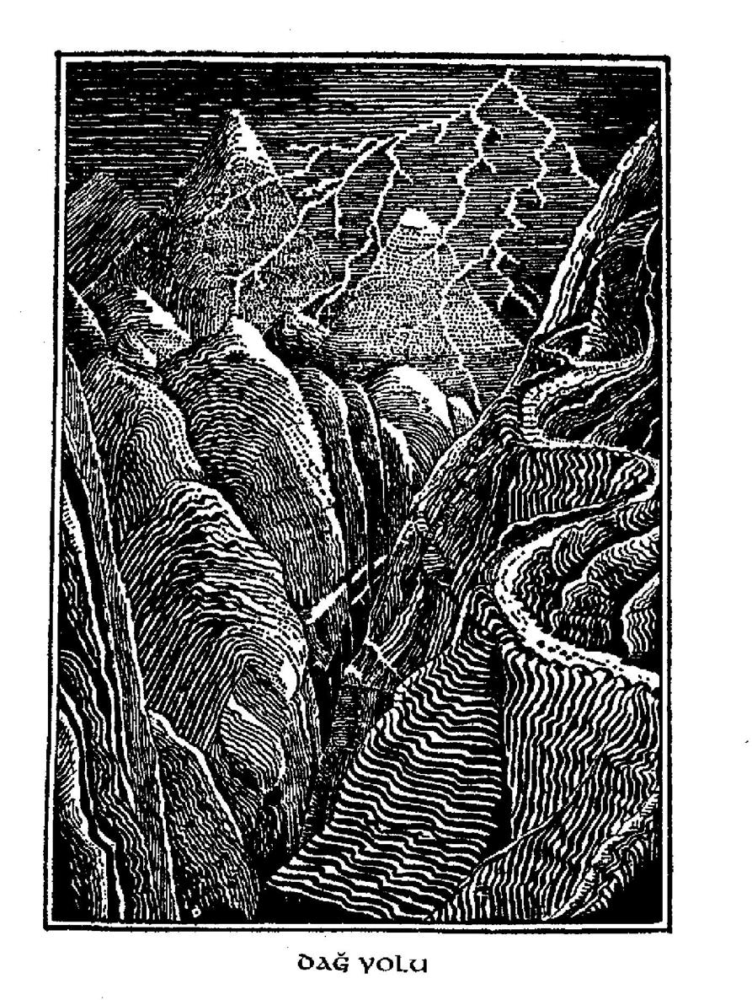

İşte tam bu sırada Gandalf geri döndü. Ama kimse onu fark etmedi, Troll'ler de, tam cüceleri şimdi kebap yapmaya, ama sonra yemeye - bu Bert1 in fikriydi, ama uzun tartışmalardan sonra hepsi bu fikri kabul etmişlerdi — karar vermişlerdi.
'Onları timdi kısartmak hit de iyi olmaz. Bütün gece sürey!' dedi bir ses. Bert, William'ın konuştuğunu sandı.
'Tartışmayı baştan başlatma Bili,' dedi, 'Yoksa gerçekten bütün gece sürecek.'
'Kim tar-tartıtıyol?' dedi konuşanın Bert olduğunu sanan William.
'Sen tartışıyolsun/ dedi Bert.
'Sen bil yalancısın,' dedi William ve tüm tartışma en baştan başladı. Sonunda onları kıyma yapıp kaynatmaya karar verdiler. Böylece büyük kara bir kazan aldılar ve bıçaklarını çıkarttılar.
'Kaynatmak hiç de iyi olmaz, suyumuz yok ve kuyu da oldukça uşak/ dedi bir ses. Bert ve William bu sesin Tom'a ait olduğunu şandılar.
'Kes sesini!' dediler, 'Yoksa bu işi hiç bitilemelecegiz. Ve eğer bil sös daha edelsen suyu gidip kendin alabililsin.'
'Sen kes sesini!' dedi sesin William'ın olduğunu sanan Tom 'Senden başka kim tartışıyo ki, bilmek isterim.'
'Sen biy mankafasın,' dedi William.
'Mankafa sensin!' dedi Tom.
Ve tartışma sil baştan başladı ve eskisinden de hararetli bir halde devam etti, ta ki sonunda torbaların üzerine birer birer oturup önce onlan ezmeye ve sonra da onları kaynatmaya karar vermelerine dek.
'Önce kimin üzeline otulacağız?' dedi ses.
'En iyisi önce sonuncusunun üzeline otu lalım/ dedi gözü Thorin tarafından incitilmiş olan Bert, O Tom'un konuştuğunu düşünüyordu.
'Kendi kendine konuşma/ dedi Tom. 'Ama eğer sonuncusunun üzeline otulmak istiyosan git otul. O hangisi?'
'Salı tolapları olan/ dedi Bert.
'Saçma, gli torapları olan/ dedi William,inkine benzer bir ses.
'Ben salı olduğuna dikkat ettim/ dedi Bert.
'Salıydı/ dedi William.
'Peki neden gli olduğunu söyledin?' dedi Bert.
'Ben hiç öyle bilşey demedim. Onu Tom söyledi.'
'Kesinlikle ben değildim/ dedi Tom 'o sendin.'
'İkiye bilf bu yüzden çeneni kapa!' dedi Bert.
'Sen kiminle konuştuğunu samyosun?' dedi Wİlliam.
Tamam artık kesin!' dediler Tom ve Bert bir arada. 'Gece ilelliyol ve şafak elken sökücek. Hadi artık başlayalım.'
'Şafak hepinizi alsın ve sizi taş yapsın/ dedi William'mkine benzer bir ses. Ama onunki değildi. Çünkü tam o sırada tepenin üzerinden bir ışık çıkageldi ve dalları da bir çıtırtıdır sardı. William hiç konuşmadı, çünkü öne eğildiğinde taş kesilip kalmıştı ve Bert ve Tom da ona bakarlarken kaya gibi hareketsizleşmişlerdi, Ve orada, kuşların tünemelerinin dışında tek başlarına, güneşin altında durdular; çünkü troll'ler sizin de büyük bir olasılıkla bildiğiniz gibi, şafaktan önce yeraltına girmelidirler, yoksa yapıldıkları dağ hamuruna geri dönüşürler ve bir daha kıpırdayamazlar. İşte Bert, Tom ve William'ın başına gelen de buydu.
'Mükemmel!' dedi Gandalf bir ağacın arkasından çıkıp Bilbo'nun dikenli çalıdan aşağı inmesine yardım ederken. Sonra Bilbo her şeyi anladı. Işık gelip troll'lerin sonlarını getirene dek dolaşmalarını ve kavga etmelerini sağlayan büyücünün sesiydi.
Yapılacak iş, torbaların ağızlannı açmak ve cüceleri dışarı çıkarmaktı. Nerdeyse boğulacaklardı ve bu işe canları
çok sıkılmıştı. Orada öylece yatıp troll'lerin onları kızartmaları, ezmeleri ve kıyma yapmaları konusundaki planlarını dinlemek hiç eğlenceli değildi. İçleri iyice rahat etmeden önce başına neler geldiğinin hikâyesini Bilbo1 dan baştan sona iki kez dinlediler.
'Aşırma ve çalma alıştırması yapmak için aptalca'bir zaman/ dedi Bombur. 'Hem de istediğimiz yalnızca ateş ve yiyecekken'/
cFşte bu da o adamlardan çarpışmadan alabileceğiniz bir şey değildi/ dedi Gandalf. 'Neyse, şimdi vakit kaybediyorsunuz. Troll'lerin yakınlarda bir yerde güneşten saklanmak için bir mağaraları ya da inleri olması gerektiğinin farkında değil misiniz? Gidip içine bir göz atmalıyız!'
Etrafı araştırdılar ve biraz sonra troll'lerin taş botlarının izlerini ağaçların içine doğru giderken buldular. İzleri tepenin yukarısına, ta çalılıklar arasına gizlenmiş, bir mağaraya açılan büyük taş kapıyı bulana dek takip ettiler. Ama kapıyı açamadılar, hatta hepsi itelerken ve bu arada Gandalf çeşitli büyüler denerken bile.
'Bu işe yarar mı?' dedi Bilbo' yorgun düşer ve acıkırlarken. 'Troll'lerin kavga ettikleri yerde buldum/ diye ekledi. Kuşkusuz William'm minicik ve gizli olduğunu düşündüğü, ancak kocaman bir anahtarı uzatarak. Şans eseri, taşa dönüşmeden önce cebinden düşmüş olmalıydı.
'Ne halt etmeye daha önce bundan bahsetmedin?' diye bağırdılar. Gandalf anahtarı kapıp anahtar deliğine soktu. Sonra taşkapı kocaman bir itişle ardına dek açıldı ve hepsi içeri girdiler. Yerde kemikler ve havada da iğrenç bir koku vardı; epey bir miktar yiyecek, raflarda, yerde ve bir köşede toplanmış pirinç düğmelerden altın paralarla dolu kazanlara dek dağınık bir yağma pisliği arasında oraya buraya saçılmış duruyordu. Duvarlarda asılı bir sürü kıyafet vardı . - trol 1*1 ere göre öyle küçüktüler ki korkarım kurbanlarının kıyafetleriydi - ve aralarında bazı değişik marka, biçim ve büyüklüklerde kılıçlar vardı. Özellikle iki tanesi, güzel kınlarından ve mücevher süslü kabzalarından dolayı gözlerine çarpmıştı.
Gandalf ve Thorin bunlardan birer tane aldılar ve Bilbo da deri kılıflı bir bıçak kaptı. Bu bir troll için ancak küçük bir cep çakısı olabilirdi, ama hobbit için nerdeyse ufak bir kılıçtı.
'Bunlar iyi kılıçlarmış gibi görünüyor/ dedi büyücü kılıçların yarısını kınlarından çıkartıp merakla inceleyerek. 'Herhangi bir troll ya da buralarda ve bugünlerde yaşayan herhangi bir demirci tarafından yapılmamışlar, ama üzerlerindeki Runik yazıyı okuyabilirsek daha çok şey öğrenebiliriz.
'Bu korkunç kokudan dışarı çıkalım/ dedi Füi. 'Böylece para kazanlannı, eldeğmemiş ve yenilebilecek gibi gözüken yiyecekleri ve halen dolu olan bir fıçı birayı dışarı çıkarttılar. O sırada canları kahvaltı yapmak istediğinden ve çok aç olduklarından trolllerin erzak depolarından edindiklerine burun kıvırmadılar. Kendi erzakları oldukça kısıtlıydı. Şimdiyse ekmek, peynir, bol miktarda bira ve közde kızartmak için biraz jambonları vardı.
Geceleri iyice rahatsız geçtiğinden uyudular ve akşamüstüne dek başka bir şey yapmadılar. Sonra midillilerini getirdiler ve kazanlarca altını taşıyıp, nehrin civarındaki izden pek de uzak olmamak kaydıyla çok gizlice gömdüler ve geri gelme ve dışarı çıkartma olasılıklarına karşı da üzerlerine bir sürü tılsım düzdüler. Bu iş bittiğinde bir kez daha yüklenip Doğuya giden patikada yola koyuldular.
'İzninle nereye gittiğini sorabilir miyim?' dedi Thorin Gandalf a at sürerlerken.
'İleriye bir göz atmaya/ dedi o da.
'Peki ne seni tam vaktinde geri getirdi?'
'Geriye bir göz atmak,' dedi o da,
'Tastamam!' dedi Thorin, 'ama biraz daha açık olabilir misin?'
'Yolumuzda casusluğa çıktım. Pek yakında daha tehlikeli ve zor bir hale gelecek. Ayrıca küçük erzak kumanyamızı tekrar doldurma konusunda da endişeliydim. Bununla beraber çok uzağa gitmemiştim ki Rivendell'den bir çift arkadaşıma rastladım.'
'Orası neresi?' dedi Bilbo.
'Sözümü kesme!' dedi Gardalf. 'Birkaç gün içinde oraya varacaksınız ve eğer şansımız yardım ederse her şeyi öğreneceksiniz. Söylediğim gibi Elrond halkından iki kişiye rastladım. Troll'lerin korkusundan dolayı acele ediyorlardı. Bana üç troll'ün dağlardan indiğini ve yolun yakınında ormana yerleştiklerini söyleyen onlardı. Herkesi korkutarak bölgeden uzaklaştırmışlar ve yabancılara pusu kuruyorlarmış.
'Ardından geri istendiğim hissine kapıldım. Geriye bir göz attığımda uzakta bir ateş gördüm ve ona yöneldim. Sonrasını biliyorsunuz. Lütfen gelecek sefere daha dikkatli olun, yoksa hiçbir yere ulaşamayacağız.'
'Sağ ol!' dedi Thorin.
BÖUJCO 3
kıs2L BİR ÖlNLeKI CDe
Hava düzeldiği halde o gün ne şarkı söylediler ne de hikâyeler anlattılar; ertesi gün de sonraki gün de. Tehlikenin iki tarafta da pek uzak olmadığını sezmeye başlamışlardı. Yıldızların altında kamp kurdular ve atlarının onlarınkinden daha fazla yiyeceği oldu. Çünkü bol miktarda çimen vardı, ama troll lerden aldıklarını hesaba katsak bile çantalarında pek fazla bir şey kalmamıştı. Bir sabah bir nehri geniş sığ, köpük ve taş sesleriyle dolu bir yerinden geçtiler. Diğer kıyı dik ve kaygandı. Midillilerini sürerek en tepeye ulaştıklarında büyük dağların iyice yaklaştığını fark ettiler. Daha şimdiden en yakındakinin eteklerine dek yalnızca bir günlük kolay bir yolculuk izlenimi veriyorlardı. Kahverengi eteklerinde gün ışığı yamalan olduğu ve yamaçlarının ardında karlı tepelerin zirveleri parladığı halde karanlık ve kasvetli görünüyorlardı.
'Dağ, tu. mu?' diye sordu Bilbo ciddi bir ses tonuyla ve fal taşı gibi açılmış gözlerle bakarken. Daha önce hiç bu denli büyük görünen bir şey görmemişti.
Tabii ki hayır!' dedi Balin. 'Bu yalnızca Puslu Dağlar'ın başlangıcı ve bunların gerisindeki Dahayabanıltopraklar'a ulaşabilmek için ya içlerinden ya üstlerinden ya da bir şekilde altlarından geçmeliyiz. Ve bu da, bu dağların diğer eteğinden Doğuda, Smaug'un hazinemizin üzerinde yattığı Yalnız Dağ'a kadar bile upuzun bir yol demektir.'
'Yaa!' dedi Bilbo ve tam o sırada daha önce hatırlayabildiğinden çok daha yorgun hissetti kendini. Bir kez daha hobbit-kovuğunda, en sevdiği odasındaki ateşin önünde duran rahat koltuğunu ve çaydanlığının su ısındı ıslığını düşündü. Tabii ki bu son düşünüşü olmayacaktı!
Sonra Gandalf başa geçti. 'Yolu kaybetmemeliyiz yoksa bu sonumuz olur,? dedi. 'Bir kez yiyecek ve uygun güvenlikte bir dinlenmeye gereksinimimiz var - ayrıca Puslu Dağlar'a düzgün bir yoldan tırmanmak gerekir, yoksa kaybolur ve geri dönüp her şeye yeniden başlamak zorunda kalırsınız (tabii bir daha geri dönebilirseniz).'
Cüceler Gandalf a nereye yöneldiğini sordular ve o da şöyle yanıtladı: 'Bazılarınızın da bildiği gibi Yaban'ın en kenarına dek geldik. Önümüzde bir yerlerde Elrond'un Son Evcil Ev1 de yaşadığı, güzel Rivendell vadisi gizli. Arkadaşlarımla bir mesaj yolladığım için bekleniyoruz.'
Bu haber hoş ve rahatlatıcı geldi, ama henüz oraya ulaşmamışlardı ve o Son Evcil Ev'i Dağlar'ın batısında bulmak sanıldığı kadar kolay değildi. Önlerindeki toprağı bölecek hiçbir ağaç, hiçbir vadi ya da hiçbir tepe yokmuş gibi gözüküyordu; yalnızca en yakındaki dağın eteklerine ulaşmak üzere yavaş yavaş yukarı tırmanan bir uçsuz bucaksız bir yokuş ve yer yer su bulunabileceğini gösteren yosun yeşili ve çimen yeşili parçaların olduğu süpürge otu ve ufalanan kaya renginde geniş bir arazi.
Sabah geçti, öğleden sonra oldu; fakat tüm bu sessiz çoraklıkta herhangi bir yerleşim izi yoktu. Artık evin nerdeyse kendileri ve dağlar arasında herhangi bir yere gizlenmiş olabileceğini gördüklerinden endişeleri artıyordu. Birdenbire Önlerine çıkıveren dik yamaçlanyla dar vadilere geldiler ve aşağıya bakıp altlarında ağaçlar ve dipte akan bir su görünce şaşırdılar. Üzerlerinden nerdeyse atlayabilecekleri sel sulanndan oluşma küçük dereler vardı, ama küçük şelalerle iyice derinleşmişlerdi, Kimsenin ne üzerinden sıçrayabileceği ne de tırmanabileceği karanlık, derin dereler vardı. Bazıları, uzun ve parlak, büyüyen çiçekleriyle bakılmaya değer hoş yeşil yerler olan bataklıklar vardı; ancak sırtında bir çantayla oraya giren bir midilli bir daha asla geri çıkamazdı.
Aslında ırmağın sığ yerinden dağlara dek olan topraklar tahmin edebileceğinizden çok daha genişti, Bilbo hayrete düşmüştü. Tek patika bazıları küçük, diğerleri ise yarı yarıya yosun ya da süpürge otuyla kaplı beyaz taşlarla işaretlenmişti. Hepsi bir arada, yolunu oldukça iyi bilirmiş gibi görünen Gandalf m kılavuzluğunda bile yolu takip etmek oldukça yavaş bir işti.
Gandalf taşları aranırken sakalı ve başı bir o yana bir bu yana sallanıp durdu ve onlar da onun ardından gittiler, ama gün tükenmeye başlarken aramanın sonuna pek yaklaşamadılar. Çay vakti çoktan geçmişti ve anlaşılan yemek vakti de birazdan aynısını yapacaktı. Ortalıkta uçuşan pervaneler vardı ve ay henüz doğmamış olduğundan hava iyice loşlaşmıştr Bilbo1 nun midillisi köklere ve taşlara takılıp tökezlemeye başladı. Dik bir inişin kenarına öyle çabuk geldiler ki Gandalfın atı nerdeyse yokuştan aşağı kayacaktı.
'Sonunda bulduk!" diye bağırdı ve diğerleri etrafına toplanıp kenardan aşağı baktılar. Taa aşağılarda bir vadi gördüler. Dipte kayalık bir yatakta koşuşturan suyun sesini duyabiliyorlardı; ağaçların kokusu havaya yayılmıştı; ve suyun vadi tarafında bir ışık vardı.
Bilbo, Rivendell'in gizli vadisine giden dik, zikzak yolu alacakaranlıkta tökezleyerek ve kayarak inişlerini hiç unutmadı. Onlar indikçe hava gitgide ısındı ve çam ağaçlannın kokusu uyuşturup uykusunu getirdi ve böylece arada bir kafası öne eğiliyor ve düşecek gibi oluyor ya da kafasını midillinin boynuna çarpıp duruyordu. Aşağı, daha aşağı indikçe ruhları yükseldi. Ağaçlar kayına ve meşeye dönüştü ve alacakaranlıkta huzur verici bir hava vardı.
Sonunda dereden çok yüksekte olmayan ağaçsız bir alana geldiklerinde son yeşil de çimenden solup gitmişti sanki.
'Hımmm! Burası elfler gibi kokuyor!1 diye düşündü Bilbo ve yıldızlara baktı. Mavi ve parlak yanıyorlardı. Ve tam bundan sonra ağaçlardan kahkahaya benzer bir şarkı tufanı çıkageldi:
Hey! Ne yapıyorsunuz, Ve nereye gidiyorsu nuz? Nallanmak istiyor midillileriniz1 Taşıyor işte nehrimiz! Hey ! tra la la la ti
işte aşağıdaki vadide!
Hey! Ne arıyorsunuz, Ve nereye yollanıyorsun uz? Tütüyor odun ve çalılarımız, Pişiyor işte lavaşlarımız! Hey! triUiUü-lolli Bu vadi çok keyifli, ha! ha!
Hey! Nereye gidiyorsunuz; Sallanıp dururken sakallarınız? Bilmiyoruz, bilmiyoruz Neden gelmiş ki Bay Baggîns, Bir de Balin ite Lhvalin Taa aşağıya vadiye haziranda ha! ha!
Hey! Kalacak mısınız, Yoksa kaçacak mısınız? Kaybediyor yollarını midillileriniz!
Ölüyor gün ışığı fark edin siz! Kaçmak çılgınca olacaktır Kalmak keyifli bulunacaktır Ve dinleyin, kulak verin ve, Karanlığın sonu gelinceye, İşte bizim türkümüz ha! ha!
İşte böyle ağaçların içinde gülüşüp şarkılar söylediler; ve bunu oldukça saçma buldunuz sanırım. Aldırmazlardı bile buna; eğer böyle olduğunu söyleseniz yalnızca daha çok gülerlerdi. Bunlar elflerdi elbette. Çok geçmeden karanlık derinleştikçe Bilbo'nun gözüne çarpmaya başladılar, Onlarla çok az karşılaştığı halde Bilbo elfleri severdi, ama azıcık da korkardı. Cücelerse onlarla iyi geçineniezlerdi. Hatta Thorin gibi terbiyeli cüceler bile aptalca (ki bu da düşünülebilecek en aptalca şeydi) olduklarını düşünürler ya da onlardan rahatsız olurlardı. Bazı elfler de onlarla, daha çok da sakallanyla alay eder ve gülerlerdi.
'Hey, hey!' dedi bir ses 'Bir bakın hele! Hobbit Bilbo bir midilli üstünde, aman Tanrım! Çok hoş, değil mi?'
'En şaşılacak harika!'
Ve demin tamamını yazdığım kadar gülünç bir şarkıya daha başladılar. Sonunda birisi, uzun ve genç birisi ağaçların arasından çıkıp reverans yaparak Gandalf ve Thorin'i selamladı.
'Vadiye hoşgeldiniz!' dedi.
'Teşekkür ederiz!' dedi Thorin bir parça hırçın; ama Gandalf çoktan atından atlamış ve elflere katılmış, mutlu mutlu sohbet ediyordu.
'Yolunuzdan birazcık sapmışsınız/ dedi elf: 'Ama tabii eğer suyun karşı kıyısındaki tek yola ve ilerisindeki eve gidiyorsanız. Biz size doğru yolu gösteririz, ama en iyisi köprüyü geçene dek yürüyün. Birazcık bizimle kalıp şarkı söyleyecek misiniz, yoksa hemen devam mı edeceksiniz? Akşam yemeği ilerde hazırlanıyor. Yemek için yakılan odun ateşlerinin kokusunu duyabiliyorum.'
Bir müddet kalmak yorgun olduğu için Bilbo'nun hoşuna giderdi. Haziranda, yıldızlann altında elfçe şarkılar söylemek kaçırılacak bir şey değildi, hele de böyle şeylere değer veriyorsanız. Hem daha önce görmediği halde, ismini ve hakkındaki her şeyi bilen bu insanlarla kalıp özel bir iki laf etmek isterdi, Bu macerası hakkındaki fikirlerinin ilginç olabileceğini düşündü. Elfler çok şey bilirler ve haberlere meraklı kimselerdir ve bu topraklardaki halkın arasında neler olup bittiğini suyun akışı kadar, hatta daha da hızlı öğrenirler.
Ancak o anda cücelerin hepsi mümkün olduğunca çabuk akşam yemeğine ulaşmalıydılar ve kalmayacaklardı. Hepsi midillilerini sürerek devam ettiler, ta ki güzel bir patikaya ve en sonunda nehrin kıyısına gelene dek. Nehir, tıpkı dağ akıntılarının güneşin gün boyu taa yu kari ardaki karlarda panldadığı yaz akşamlarında aktığı gibi hızlı ve gürültülü akıyordu. Yalnızca, korkuluğu olmayan ve ancak bir midillinin rahat yürüyebileceği kadar dar, taş bir köprü vardı; ve üzerinden birer birer, yavaş ve dikkatli, her biri midillilerini yularından çekerek geçmek zorunda kaldılar, Elfler kıyıya parlak fenerler getirdiler ve kafile karşı tarafa geçerken neşeli şarkılar söylediler.
"Sakın sakalını köpüğe batırma, baba!' diye bağırdılar nerdeyse ellerinin ve dizlerinin üzerine çöken Thorin'e. 'Sulamadan da yeterince uzun.'
'Dikkat edin de Bilbo tüm kekleri yemesin!' diye bağırdılar. 'Anahtar deliklerinden geçmek için şimdi bile çok şişman!'
'Susun, susun! İyi İnsanlar! Ve iyi geceler!' dedi en son gelen Gandalf. 'Vadilerin kulaklan vardır ve bazı elflerin de çeneleri biraz fazla neşeli. İyi geceler!'
Ve böylece hepsi Son Evcil Ev'e vardılar ve evin kapılarını ardına dek açık buldular.
Aslında şimdi bu garip bir şeydir, ama sahip olunan güzel şeyler ve geçirilen güzel günler hemen anlatılır biter, dinlemesi pek keyifli değildir; ancak rahatsız edici, soluk kesici ve tüyler ürpertici şeyler güzel hikâyeler olurlar ve her zaman anlatılıp dururlar. O güzel evde çok uzun bir süre, en az ondört gün, kaldılar ve ayrılmak çok güç geldi. Bilbo o evde - bir dileğin onu beladan uzak evine, hobbıt- kovuğuna götürmesini umduğu halde - memnuniyetle sonsuza dek kalabilirdi. Yine de burada kalışları hakkında anlatılacak pek az şey vardı.
Ev sahibesi bir elf-dostuydu - şu ataları garip hikâyelere, Tarihin başlangıcından, goblinlerin ve el fi erin savaşlarından ve Kuzeydeki ilk insandan önce karışmışlardan biri. Hikâyemizin geçtiği zamanlarda,' ataları hem Kuzeyin kahramanları hem de elfler olan birileri halen vardı ve ev sahibi Elrond onlann şefiydi.
Yüzü bir elf-1 ordunun yüzü kadar soylu ve dürüst, bir savaşçı kadar güçlü, bir büyücü kadar bilge, cücelerin kralı kadar saygıdeğer, yaz kadar nazikti. Birçok hikâyede adı geçer, ancak Bilbo'nun muhteşem macerasının hikâyesindeki rolü yalnızca küçük, ama eğer sonuna ulaşabilirsek sizin de görebileceğiniz gibi önemli bir roldü. Eğer yiyeceği, uykuyu, çalışmayı, hikâye anlatmayı, şarkı söylemeyi ya da en iyisi yalnızca otunıp düşünmeyi ya. da hepsinin hoş bir karışımını seviyorsanız evi mükemmeldi. Kötü şeyler o vadiye uğramazdı.
Keşke sizlere o evde duydukları hikâyelerden birkaçını ya da bir iki şarkıyı anlatabilecek zamanım olsaydı. Orada hepsi, hatta midilliler bile, birkaç gün içinde kendilerine geldiler güçlendiler. Yaraları, sinirleri ve umutlan gibi giysileri de onarıldı. Çantaları yiyecek ve yükte hafif ama pahada onları dağ geçitlerinden geçirmeye yetecek güçte erzakla dolduruldu. Planlan en iyi tavsiyelerle geliştirildi. Böylece vakit yaz dönümü arifesine geldi ve yaz dönümü sabahında günün ilk ışıklanyla yola koyulmak zorundaydılar,
Elrond her türden Runik yazıyı iyi bilirdi. O gün troll'lerin ininden getirdikleri kılıçlara baktı ve 'Bunlar troll yapısı kılıçlar değil. Bunlar eski. Benim akrabam olan Batının Yüce Elflerinin çok eski kılıçları. Goblin-savaşları için Gondolin'de yapılmışlardı. Ejderhalar ve goblinler o şehri yüzyıllar önce yok ettikleri için bir ejderha ambarından ya da bir goblin ganimetinden gelmiş olmalılar. Bu, Thorin, Runıkçe adıyla Orcrist, Eski Gondol in dilinde Goblin-uçurucu demek; çok ünlü bir kılıçtır. Bu, Gandalf, Glamdring, yani Gondolin kralının bir zamanlar taşıdığı Düşman-topuzu. Onlara iyi bakın!'
'Troll'lerin onları ne zaman ele geçirdiklerini merak ettim,' dedi kılıcına yeni bir ilgiyle bakan Thorin.
'Bilemem,' dedi Elrond, 'ama sizin troll'lerinizin başka yağmacıları yağmaladığı ya da eskilerin dağlannda bir kovukta eski soygunlann kalıntılarına rastlamış oldukları söylenebilir. Moria madenlerinin terk edilmiş mağaralarında, cüce ve goblin savaşlarından kalma unutulmuş hazinelerin bulunduğunu duymuştum.'
Thorin bu sözler üzerine uzun boylu düşünüp taşındı. 'Bu kılıcı onurla taşıyacağım,' dedi. 'Yakında bir kez daha gobİinleri uçursun inşallah!'
'Dağlarda yerine getirilmesi pek yakın bir dilek!' dedi Elrond. 'Ama bana haritanızı gösterin artık!'
Haritayı aldı ve uzun süre baktı ve başını salladı. Cüceleri ve altına duyduklan aşkı pek onaylamasa da, ejderhalardan ve zalim kötülüklerinden nefret ederdi ve Dale kasabasını ve neşeli çanlarının yıkılmasını ve Akan Nehir* in yanmış kıyılarını hatırlayarak müteessir oldu. Ay geniş, gümüşten bir hilal şeklinde parıldıyordu. Haritayı yukan tuttu ve beyaz ışık içinden pırıldadı. 'Bu da nesi?' dedi. 'Burada, "kapı beş ayak yüksekliğinde ve üç kişi genişliğindedir" diyen düz Runik sözcüklerin ardında ay-harfleri var.'
Ay-harfleri nedir?' diye sordu hobbit heyecanla. Size daha önce de söylediğim gibi haritaları severdi; ve aynı zamanda Runik harfleri ve hileli yazılan; kendisi yazdığı zaman bir parça örümcek gibi incecik yazdığı halde severdi.
'Ay-harfleri de Runik harflerdir, ama onları göremezsin,' dedi Elrond, 'Tabii doğrudan bakarsan. Yalnızca ay arkalarından ışıdığı zaman görülebilirler ve daha da ötesi, daha hileli olarak da okunabilmeleri için ay, yazıldıkları gün, mevsim ve şekliyle olmalıdır. Arkadaşlarının da sana anlatabileceği gibi bu yazıyı cüceler buldular ve gümüş kalemlerle yazdılar. Bu yazı uzun zaman önce hilal aylı bir yaz dönümü arifesinde yazılmış olmalı.'
'Ne diyor?' dediler Gandalf ve Thorin birlikte, belki de Elrond'un da bunu ilk kez fark etmesine biraz bozularak; oysa daha önce bunun için ne bir şans olmuştu ve Tanrı bilir böyle bir şans bir daha ne zaman olurdu.
'Ardıçkuşu gagalarken gri taşın yanında dur,' diye okudu Elrond. 'Batan güneş, Durin Günü'nün son ışığıyla anahtar deliğinde parlayacaktır.'
'Durin, Durin!' dedi Thorin, 'O, en eski Cüce ırkının, Uzunsakallıların, babalarının babasıydı ve benim ilk atamdı. Ben onun soyundanım.'
Teki ya Durin Günü nedir?' diye sordu Elrond.
'Cücelerin Yeni Yılının ilk günü,' dedi Thorin, 'herkesin bilmesi gerektiği gibi Kış başlangıcında son Güz ayının ilk günüdür. Halen son Güz ayının ve güneşin gökyüzünde bir arada olduğu güne Durin Günü deriz. Ama bu bize pek yardımcı olmayacak, çünkü korkarım bugünlerde bu zamanın tekrar ne zaman geleceğini tahmin etmek becerilerimizi aşıyor.'
'Buna sonra bakarız,' dedi Gandalf, Başka yazı var mı?'
'Bu ayla görülecek başka yok/ dedi Elrond ve haritayı Thorin'e geri verdi; ve sonra hepsi suya, elflerin yaz dönümü arifesi için dans edip şarkı söylemelerini seyretmeye gittiler.
Ertesi sabah ancak düşlerde görülebilecek denli açık ve güzel bir yaz dönümü sabahıydı. Ve bunun üzerine şimdi ruhları yeni bir maceraya hazır ve Puslu Dağlar" ın ötesindeki topraklara ulaşmak için yolla ilgili gerekli bilgiyle donanmış bir halde, iyi bir tempo ve ayrılık şarkıları arasında yola koyuldular.
BÖLÜCD 4
TepevuKi üsıüNöe, repeMİM ALTİMÖA
Bu dağlara çıkan birçok patika, dağlarda da bir sürü geçit vardı. Ama patikaların birçoğu ya hiçbir yere çıkmayan ya da kötüleşen tuzak ya da aldatıcı patikalardı; geçitlerin çoğu da kötü yaratıklar ya da tüyler ürpertici tehlikelerle doluydu. Elrond'un bilge öğütleri, Gandalf ın da bilgi ve belleğinden yardım alan cüceler ve hobbit doğru geçite giden doğru patikayı seçtiler.
Vadiden tırmanıp çıktıktan ve Son Evcil Ev'i millerce geride bıraktıktan günler sonra bile, hâlâ yukarı ve yukarı ve yukarı gidiyorlardı, Bu zorlu ve tehlikeli bir patikaydı ve tuzaklı bir yol, yalnız ve uzun. Şimdi ayrıldıkları toprakları gerilerde, taa aşağılarda görebiliyorlardı. Bilbo, Batıda, uzak, çok uzak bir yerde, her şeyin mavi ve belirsiz gözüktüğü yerlerde, küçük hobbit-ko vuğu nun, rahat şeylerinin ve güvenli ülkesinin bulunduğunu biliyordu. Ürperdi. Burada aa bir soğuk çıkıyordu ve rüzgâr da kayaların arasından uğuldayarak geliyordu. Arada sırada öğlen güneşinin karı ısıtmasıyla yerlerinden kurtulmuş kaya parçalan dağın yamaçlarından dört nala aşağı iniyor ve yanlanndan (ki bu şans eseriydi) ya da kafalarının üzerinden (ki bu tehlikeliydi) geçiyordu. Geceler rahatsız ve soğuktu, şarkı söylemeye ya da yüksek sesle konuşmaya cesaret edemiyorlardı. Çünkü yankılar tekin değildi ve sessizlik, bozulmaktan - tabii suyun gürültüsü, rüzgârın uğultusu ve kayalann çıtırtıları dışındaki seslerle - hoşlanmaz gözüküyordu.
'Aşağılarda yaz geliyor,' diye düşündü Bilbo. 'Ot biçme ve piknikler sürüyor, Biz bu hızla daha dağın öbür yanından aşağı inmeye başlamadan onlar ekin biçmeye ve böğürtlen toplamaya başlayacaklar.' Ve diğerleri de, yaz dönümü sabahının coşkulu umuduyla Elrond1 a hoşça kal derken, dağlardaki geçitten ve önlerindeki topraklan hızlı hızlı geçmekten neşeyle bahsettikleri halde nerdeyse aynı endişeH düşünceleri paylaşıyorlardı. Yalnız Dağ'daki gizli kapıya, belki de Güzün en yakın ilk ayında gelmeyi düşünmüşler - Ve belki de bu Durin Günü olur' demişlerdi. Yalnızca Gandalf kafasını sallamış ye hiçbir şey söylememişti. Cüceler o yolu uzun yıllardır geçmemişlerdi, ama Gandalf geçmişti ve ejderhaların insanları bu topraklardan sürdüğünden ve ğoblinlerin Moria Madenleri çarpışmasından sonra ortadan kaybolmalarından beri Yaban'da ne kötülük ve tehlikelerin belirdiği ve arttığını biliyordu. Ve bazen insan Yabanın Kıyısı'nda tehlikeli maceralardayken Gandalf gibi bilge büyücülerin ve Elrond gibi iyi arkadaşların güzel planlarının bile yolunu şaşırdığı olurdu ve Gandalf bunu bilecek kadar bilge bir büyücüydü.
Beklenmedik bir şeyler olabileceğini biliyordu ve hiçbir kralın hüküm sürmediği vadiler ve ıssız zirveleriyle bu büyük yüce dağlardan korkulu bir macera yaşamadan geçmelerini ümit etmeye pek cesaret edemiyordu. Zaten geçemediler de. Bir yıldırım fırtınasıyla — yıldırım fırtınasından da beter bir yıldırım savaşıyla - karşılaşana dek her şey yolundaydı. Açık havada bir nehir vadisinde gerçekten büyük bir yıldırım fırtınasının ne denli müthiş olabileceğini bilirsiniz; özellikle de iki kocaman yıldırım fırtınasının karşılaşıp çarpıştığı zamanlarda. Daha da korkuncu Doğu ve Batıdan fırtınaların gelip savaştığı sırada

gece dağlardaki gökgürültüsü ve şimşeklerdir. Şimşekler zirvelerde dallanır ve kayalar parçalanır ve büyük gümbürtüler havayı bile böler ve yuvarlanıp her mağaraya her oyuğa girer; ve karanlık, ani bir ışık ve karşı konulamaz bir gürültüyle dolar.
Bilbo ne böyle bir şey görmüş ve ne de hayal etmişti, Bir yanlarında vadiye akan ürkütücü bir şelale, yükseklerde dar bir yerdeydiler. Orada gecelerken asılı bir kayanın altında korunuyorlardı ve Bilbo bir battaniyenin altında yatıp tepeden tırnağa titredi. Şimşek parıltılarında gizlice etrafa bakmırken vadinin öbür yanında taş-devlerin ortalıkta olduğunu ve oyun olsun diye birbirlerine kayalar fırlatıp tuttuklarını ve karanlığın içlerine attıklarını, taa aşağılarda ağaçlara tosladıkları ya da gürültüyle küçük parçalara aynldıklarını gördü. Sonra rüzgâr çıktı ve yağmur geldi ve rüzgâr, yağmur ve doluyu her yönde kamçıladı, böylece asılı kaya koruma özelliğini yitirdi. Az sonra sırılsıklam ıslanmışlardı; midillileri başları eğik, kuyrukları ayaklarının arasında dikiliyor, bazıları da korkuyla kişniyordu. Devlerin gürültülü kahkahalarını ve bağrışlarını dağın her yanından duyabiliyorlardı,
'Bu İşe yaramayacak!1 dedi Thorin. 'Eğer rüzgâr bizi uçurmazsa, boğulmazsak ya da yıldırım çarpmazsa, bu seferde bir dev tarafından yakalanıp futbol topu niyetine göğe tekmeleneceğiz.'
'Pekâlâ, eğer daha iyi bir yer biliyorsan, bizi oraya götür!' dedi oldukça huysuzlaşmış ve kendisi de devler hakkında mutlu olmaktan bir hayli uzak olan Gandalf.
Tartışmalarına Fili ve Kili'yi daha iyi bir korunak aramak için gönderme kararıyla son verdiler. Çok keskin gözleri vardı ve yaklaşık elli yıl yaş farkıyla cücelerin en gençleri olarak genellikle bu türden işler onlara düşerdi (üstelik Bilbo'yu göndermenin hiçbir faydası olmadığını herkes görebiliyordu). Eğer bir şey bulmak istiyorsan aramak gibisi yoktur (ya da Thorin genç cücelere böyle söyledi). Genellikle, eğer ararsan mutlaka bir şey bulursun, ama bu her zaman peşinde olduğun şey olmaz. Böylece bu da bu olayla kanıtlanmış oldu.
Bir müddet sonra Fili ve Kili sürünerek ve rüzgârda kayalara tutunarak geldiler. 'Kuru bir mağara bulduk,' dediler, 'bir sonraki dönemeçden uzak değil ve midillileri, her şeyi içine alır.'
'Adamakıllı araştırdınız mı?' diye sordu dağlardaki mağaraların nadiren boş olduğunu bilen büyücü.
'Evet, evet!' dediler, herkes . onlann uzun süre kalmadığını bildiği halde; geriye fazlasıyla çabu k dönmüşlerdi. 'O kadar büyük değil ve çok içerilere girmiyor.'
Bu, tabii ki, mağaralann en tehlikeli kısmıdır; bazen içeriye ne kadar girdiklerini ya da arkada bir geçitin sizi nereye götüreceğini ya. da. içerde sizi neyin beklediğini bilmezsiniz. Ama şimdi Fili ve Kili'nin haberleri yeterince iyi gözüküyordu. Böylece hepsi kalkıp hareket etmek için hazırlandılar. Rüzgar uğulduyor, yıldırım halen gürlüyordu ve kendilerini ve midillilerini kurtarmak zorundaydılar. Yine de çok uzağa gitmeyeceklerdi ve çok geçmeden bir patikanın ortasında duran kocaman bir kayaya geldiler, Eğer ardına geçerlerse, dağın yanında alçak bir kemerle karşılaşılıyordu. Midillilerin yüksüz ve eyersiz, sıkışarak geçebileceği kadar alan ancak vardı, Kemerin altından geçtikçe, içinde olmaktansa yağmunı ve rüzgârı dışardan duymak ve devlerden ve kayalarından korunuyor olduklarını hissetmek güzeldi. Ama büyücü hiçbir riski göze almıyordu. Asasını yaktı - eğer hatırlarsanız çok uzun zaman önceymiş gibi görünen o gün Bilbo'nun yemek odasında yaktığı gibi - ve bunun ışığıyla cüceler mağarayı baştan sona aradılar.
Büyüklüğü oldukça iyi görünüyordu, ancak ne çok büyüktü ne de gizemli. Kum bir zemini ve rahat köşeleri vardı. Bir uçta midilliler için yer vardı; ve midilliler orada durarak (bu değişiklikten oldukça mutlu), buhar salıp gürültüyle yem torbalarına daldılar. Oın ve Gloin giysilerini kurutmak üzere kapıda bir ateş yakmak istediler, ama Gandalf bunu duymamazlıktan geldi. Böylece onlar da ıslak şeylerini yere yaydılar ve torbalarından kuru olanlan çıkarttılar; sonra battaniyelerini rahatlaştırıp pipolarını çıkarttılar ve Gandalf'ın onları eğlendirmek üzere değişik renklere bürüyüp tavanda dans ettirdiği duman-halkalar üflediler. Konuştular, konuştular ve fırtınayı unuttular ve her birisinin hazinedeki payıyla (ele geçirdiklerinde, ki o an o denli olanaksız gözükmüyordu) ne yapacaklarını tartıştılar; böylece de birer birer uyuyakaldılar. Ve bu, beraberlerinde getirdikleri midillileri, paketleri, sandıkları, aletleri ve teçhizatı son kullanışlarıydı.
O gece, küçük Bilbo'yu her şeye rağmen beraberlerinde getirmiş olmalan sonunda İyi oldu. Çünkü, her nasılsa uzun bir süre uykuya dalamadı, daldığında da çok korkunç düşler gördü, Mağaranın arkasındaki duvarda bir çatlağın büyüdüğünü, büyüdüğünü, açıldıkça açıldığını gördü düşünde, çok korktuğu halde bağıramadı ya da öylece yatıp bakmaktan başka hiçbir şey yapartıadı. Sonra mağaranın tabanının çöktüğünü ve kaydığını - aşağıya, aşağıya, Tanrı bilir nereye, düşmeye başladığını düşledi.
Ve o sırada korkunç bir irkilme ile uyandı ve düşünün bir kısmının gerçek olduğunun farkına vardı. Mağaranın arkasında bir yarık açılmıştı ve çoktan geniş bir geçit olmuştu. Midillilerin kuyruklarının sonuncusunun gözden kaybolduğunu tam zamanında gördü. Tabii çok yüksek bir çığlık, bir hobbıtin büyüklüğü düşünüldüğünde şaşırtıcı olan, olabildiğince yüksek bir çığlık attı.
Kayalar ve bloklar diyemeden goblinler, büyük goblinler, çirkin görünüşlü kocaman goblinler, bir sürü goblin fırladı ortalığa. Her cüceye en azından altı goblin düşüyordu, hatta Bilbo'ya bile iki tane, ve kav ve çakmaktaşı bile diyemeden hepsi yakalanıp yarıktan içeri götürüldüler. Ancak Gandalf hariç. Bilbo'nun çığlığı bu kadarcık olsun işe yaramıştı. Bir anda onu iyice uyandırmıştı ve goblinler onu yakalamaya geldiklerinde mağarada korkunç bir ışık patlaması ve barut tozuna benzer bir koku oldu ve goblinlerden birkaçı öldü.
Yarık bir çatırtıyla kapandı, Bilbo ve cüceler yanlış tarafında kaldılar. Gandalf nerelerdeydi? Bu konuda ne cücelerin ne de goblinlerin bir fikri vardı ve goblinler bulmak için beklemediler. Bilbo ve cüceleri yakalayıp hızla uzaklaştılar. Bulundukları yer ancak dağların göbeğinde yaşamaya alışık goblinlerin görebileceği denli derin; derin ve karanlıktı. Geçitler her yönde çarprazlanıp düğümleniyor, ama goblinler yollarını sizin en yakın postaneninkini bildiğiniz denli iyi biliyorlardı; ve yol aşağılara, aşağılara indi ve korkunç derecede havasızlaştı. Goblinler çok kabaydılar ve insafsızca sıkıştırıyor ve ürkütücü taş gibi sesleriyle kendi kendilerine kıkırdayıp kahkahalar atıyorlardı. Bilbo, troll onu ayakparmaklarından tutup kaldırdıktan sonra daha da mutsuzlaştı. Tekrar tekrar güzel aydınlık hobbit-kovuğunda olmayı diledi. Tabii son kez için değil.
Sonra önlerine bir kırmızı ışık parıltısı çıktı. Goblinler düz ayaklannı taşg. vurup tempo tutarak ve aynı zamanda tutsaklarını sallayarak şarkı söylemeyle ya da vıraklamaya başladılar.
Vur! Çarp! Kara çatlak!
Yakala, gaspet! Çimdik at, kap!
Ve aşağılara aşağılara goblin kasabasına Hadi hadi sen git dostum!
Çarpış çarpış! Eziş büzüş!
Çekiçle maşa! Tokmakla taşa!
Yürü güm güm taa yeraltına! Hadi hadi ho, bo dostum!
Şaak, Şlak! Şaklat kamçını çatlak!
Parçala ve kurcala! Sızlan ve mızlan!
Çalış durma çalış! Kork kaytarmaya,
Tadını çıkarırken Goblinler ve kahkaha atarlarken
Döne döne taa yeraltında
Hadi hadi aşağılara dostum!
Gerçekten korkunç bir sesti. Duvarlar vur, çarp! ve eziş büziîş\ ve ho ho! dostumun çirkin kahkalarıyla inledi. Şarkının genel anlamı fazlasıyla yalındı. Çünkü artık goblinler kırbaçları çıkartmış ve onları şaak şaak sesleriyle kırbaçlıyorlardı; ve önlerinde olabildiğince koşturuyorlardı; düşe kalka büyük bir mağaraya geldiklerinde cücelerden birisi çoktan olanca gücüyle şikayet edip sızlanmaya başlamıştı bile.
Mağara gobl inlerle doluydu ve ortasındaki büyük kırmızı bir ateşle ve duvarlardaki meşalelerle aydınlatılmıştı. Goblin sürücülerin arkalarından bağırıp çağırıp kamçı şaklattığı cüceler (zavallı Bilbo en arkada ve kırbaçlara en yakın olarak) içeriye koşarak girdiklerinde, hepsi güldüler, tepindiler ve ellerini çırptılar. Midilliler çoktan oradaydılar ve bir köşede birbirlerine sokulmuşlardı ve tüm torbalar ve sandıklar goblinlerce iyice altüst edilmiş ve goblinlerce koklanmış ve goblinlerce iyice kurcalanmış ve goblinlerce üzerlerinde tepinilmiş olarak orada burada dağınık duruyorlardı.
Korkarım ki bu, atı dağ yollan için uygun olmadığından dolayı Elrond'un Gandalf a ödünç verdiği, sevimli olduğu kadar dayanıklı da olan küçük beyaz dahil olmak üzere o mükemmel midillileri son görüşleri oldu. Çünkü goblinler, atlan ve midillileri ve sıpalan ve daha da berbat diğer şeyleri yerler ve her zaman açtırlar. Bununla birlikte tutsaklar şu anda yalnızca kendilerini düşünüyorlardı. Goblinler ellerini arkalarında zincirlemiş, hepsini tek bir sıra oluşturacak şekilde birbirlerine bağlamış ve küçük Bilbo sıranın en sonunda sürüklenmek üzere çekerek mağaranın en uzak köşesine götürmüşlerdi.
Orada, gölgede, büyük düz bir taşın üzerinde kocaman kafalı, çok çok iri bir goblin oturuyordu ve etrafında da kullanageldikleri baltalar ve kıvrık kılıçlar taşıyan silahlı goblinler duruyordu. Şimdi, goblinler hain, tehlikeli ve kötü kalplidirler. Hiç güzel şeyler yapmadıkları halde pek çok akıllıca şey yaparlar. Genellikle dağınık ve pis olmalanna rağmen bir belayla karşılaştıklarında en yetenekli cüceler kadar iyi tünel kazabilir ve maden çıkartabilirler. Çekiçler, baltalar, kılıçlar, hançerler, kazmalar, maşalar ve işkence aletlerini çok iyi yaparlar ya da kendi tasarımlarına göre başkalarına yaptırırlar ve tutsaklar ve köleler, hava ve ışık bulamadıklarından ölene dek çalışmak zorunda kalırlardı, O zamandan beri dünyayı belaya boğan aletlerin çoğunu özellikle de tekerlekler, motorlar ve patlamalar ve bir de ellerinden geldiğince kendi elleriyle çalışmamak onlara her zaman keyif verdiğinden, çok sayıda,insanı bir çırpıda öldüren marifetli aygıtları onların bulmuş olması olanaksız değildir. Ama bu günlerde ve bu vahşi yerlerde çok ileri (böyle deniliyor ya) gitmemişlerdi. Özellikle cücelerden, herkesten ve her şeyden, özellikle düzenli ve varlıklılardan nefret ettiklerinden daha çok nefret etmezlerdi; hatta bazı yerlerde kötü cüceler onlarla işbirliği bile yapmışlardı. Ancak bu öyküye girmeyen, ama bahsini duyduğunuz savaş yüzünden Thorin'in adamlarına karşı özel bir kin beslerlerdi; her neyse, goblinler akıllıca ve gizlice yapıldığı ve tutsaklar kendilerini savunamadıklan sürece kimi yakaladıklarına aldırmazlardı.
'Bu sefil kişiler kim?' dedi Koca Goblin.
'Cüceler ve bir de bu!' dedi sürücülerden biri Bilbo'nun zincirini çekerek, böylece o da dizlerinin üzerinde öne düştü, 'Onlan Ön Sundurmamıza sığınmış bulduk/
'Ne demek bu?' dedi Koca Goblin, Thorin'e dönerek. 'Kalıbımı basarım ki iyi bir halt için değildir! Sanırım halkımın özel işlerine casusluk ediyorlardı! Hırsızlar! Duyduklarıma hiç şaşırmamalıyım! Büyük bir olasılıkla Elflerin dostlan, katiller! Gel! Ne söyleyeceksin?'
'Cüce Thorin, hizmetinizdeyim!' diye yanıtladı - bu yalnızca nazik bir hiçti. 'Kuşkulanıp kurduğunuz şeylere dair hiçbir fikrimiz yok. Biz fırtınadan kaçarken uygun ve kullanılmayan görünen bir mağaraya sığındık; goblinleri rahatsız etmek aklımızın ucundan bile geçmedi.' Bu yeterince doğruydu.
'HımmP dedi Koca Goblin. 'Böyle söylüyorsunuz! Peki size dağlarda ne yaptığınızı, nereden geldiğinizi ve nereye gittiğinizi sorabilir miyim? Daha doğrusu hakkınızdaki her şeyi bilmek isterim. Bu sizin işinize pek yarayacağından değil Thorin Meşekalkan, halkınız hakkında zaten çok fazla şey biliyorum; ama şimdi doğruyu söyleyelim, yoksa sizin için özellikle rahatsız edici bir şeyler hazırlarım!'
'Bizler, gerçekten misafirperver bu dağlann Doğu yüzünde yaşayan akrabalarımızı, yeğenlerimizi, birinci, ikinci ve üçüncü dereceden kuzenlerimizi ve büyükbabalarımızın diğer torunlarını ziyaret etmek üzere bir yolculuktaydık,' dedi salt gerçeğin bir işe yaramayacağının açıkça görüldüğü sırada tam olarak ne söyleyeceğini hiç bilemeyen Thorin.
'O bir yalancı, hem de gerçekten müthiş bir yalancı!' dedi sürücülerden biri. 'Mağarada bu yaratıklan aşağıya gelmeye davet ettiğimizde halkımızdan birkaçı bir şimşekle karşılaştı ve-şimdi bir taş kadar ölüler. Hem bunu henüz açıklamadı!' Thorin'in kuşandığı kılıcı, troll'lerin ininden gelen kılıcı uzattı,
Koca Goblin kılıcı gördüğünde gerçekten korkunç bir öfke çığlığı attı ve askerleri dişlerini gıcırdatıp kalkanlannı birbirlerine çarptılar, ayaklarını yerlere vurdular. Kılıcı hemen tanıdılar. Zamanında, Gondolin'in iyi elfîeri, onları tepelerde avladıklannda ya da surlarının önünde çarpıştıklannda yüzlerce goblin öldürmüştü bu kılıç. Onlar buna Goblin-uçurucu anlamına gelen Orcrist, goblinler ise basitçe Parçalayıcı derlerdi, Kılıçtan nefret ederlerdi, ama kılıcı taşıyandan daha da nefret ederlerdi.
'Katiller ve elf-dostları!' diye bağırdı Koca Goblin. 'Kamçılayın onları! Dövün! Parçalayın! Dişlerinizle çiğneyin! Alıp yılanlarla dolu karanlık çukurlara götürün onları ve bir daha ışığı görmelerine izin vermeyin!' Öyle bir öfke içindeydi ki oturduğu yerden fırlayıp ağzı açık bakakalan Thorin'e saldırdı.
Tam o sırada mağaradaki tüm ışıklar ve büyük ateş puff diye sönüverdi ve tavana dek uzayan ve yakıcı beyaz kıvılcımlarını goblinlere fırlatan mavi pınltılı bir duman kulesine dönüştü.
Bunu izleyen feryatlar ve sızlanmalar, vıraklamalar, vızıldamalar, dırıldamalar, inlemeler, homurtular ve küfürler, çığlıklar ve naralar sözle anlatılamazdı. Birkaç yüz canlı yaban kedisi ve kurdun yavaş yavaş kızartılıyor olması bununla karşılaştınlamazdı. Kıvılcımlar goblinleri yakıp delikler açıyor ve şimdi tavandan aşağı inen duman, havayı onlann gözlerinin bile göremeyeceği kadar kalınlaş- tırıyordu. Az sonra birbirleri üzerine düşüyor ve yerde kümeler halinde yuvarlanıyor ve adeta hepsi çıldırmış gibi ısırıyor, tekmeliyor, dövüşüyorlardı.
Birdenbire bir kılıç kendi ışığında parıldadı. Bilbo kılıcın Koca Goblin'in tam ortasından geçtiğini gördü ve çığlığının ortasında hayretle bakakaldı. Koca Goblin düşüp öldü ve goblin. askerler kılıcın önünde karanlığa kaçıştılar.
Kılıç kınına geri döndü. 'Çabuk beni takip edin!1 dedi keskin ve pes bir ses; ve Bilbo ne olduğunu anlayamadan, sıranın sonunda, koşuşturabileceği denli hızlı, goblin salonundan gelen çığlıklar arkasında gittikçe duyulmaz olurken daha karanlık geçitlerden aşağı koşuşturmaya başladı. Soluk bir ışık onlara yol gösteriyordu.
'Daha hızlı, daha hızlı!' dedi ses. 'Meşaleler yakında yeniden yanmış olacak.'
'Yanm dakika!' dedi Bilbo'nun hemen önündeki nazik dost Dori. Bağlı elleriyle yapabileceği denli iyi hobbitin omzuna tırmanmasını sağladı ve zincirlerin klink klink sesleri arasında ve elleri kendilerini dengeleyecek durumda olmadığından çoğu kez sendeleyerek bir koşu tutturdular, Uzun bir süre durmadılar, çünkü bu sırada dağın tam ortasında olmalıydılar.
Sonra Gandalf asasını yaktı. Tabii ki Gandalf dı. Ama o sırada oraya nasıl geldiğini soramayacak denli meşguldüler. Tekrar kılıcını çıkarttı ve kılıç tekrar karanlıkta kendi kendine panldadı. Adeta goblinler ortalıktalarmışçasına parıldamasını sağlayan bir öfkeyle yandı; şimdi mağaranın yüce efendisini öldürme hazzının mavi alevi kadar parlaktı. Goblin-zincirlerini kırmada ve tüm tutsaklan olabildiğince çabuk serbest bırakmada hiçbir sorun çıkartmadı. Eğer .hatırlarsanız bu kılıcın adı Düşman-topuzu Glamdring'di. Goblinler ona yalnızca Vurucu derler, ve böyle bir şey mümkünse, Kesici'den ettiklerinden daha fazla nefret ederlerdi. Orcist de kurtarılmıştı. Gandalf çok korkmuş muhafızlardan birinin elinden kapıp yanlannda getirmişti. Gandalf çok şeyi düşünmüştü ve her şeyi yapamadıysa da, güç durumdaki dostları için birçok şey yapmıştı.
'Hepimiz burada mıyız?' dedi kılıcını başını eğerek selamladığı Thorin'e verirken. 'Bir bakalım: Bir - bu
Thorin; iki, üç, dört, beş, altı, yedi, sekiz, dokuz, on, onbir; Fili ve Kili nerede? Tamam buradalar! oniki, onüç - ve işte Bay Baggins: ondört! Pekâlâ, pekâlâ! Daha kötü olabilir ve sonra tekrar daha iyi olabilir. Midilliler yok, yiyecek yok ve nerede olduğumuzu bilmek yok ve tam arkamızda da öfkeli goblin sürüleri! Devam edelim!'
Devam ettiler. Gandalf çok haklıydı: Geldikleri geçitlerin ötelerinde goblin gürültüleri ve korkunç çığlıklar duymaya başladılar. Bu onlan eskisinden hızlı yaptı ve zavallı Şilbo onlann yansı hızda bile gidemediğinden - cücelere gelince şunu rahatlıkla söyleyebilirim ki mecbur olduklannda müthiş bir hızda yuvarlanabilirler - Bilbo'yu sırtlarında taşımayı sıraya koydular.
Yine de goblinler cücelerden daha hızlı giderler ve bu goblinler yolu daha iyi biliyorlardı (ne de olsa yolları kendileri yapmışlardı) ve çılgınca öfkeliydiler; böylece cüceler yapabileceklerini. yapsalar da, bağrış çağrışların gittikçe yaklaştığını işittiler. Yakında goblin ayaklannın, bir süıü ayağın, hemen bir önceki dönemecin arkasında yere vurduğunu bile duyabilirlerdi. Takip ettikleri tünelde, kırmızı meşalelerin titrek ışıklan tam arkalanndan görülebiliyordu; ve adamakıllı yorulmuşlardı.
'Neden, neden sanki hobbit-kovuğumdan ayrıldımki!' dedi Bombur'un sırtında hoplayıp duran zavallı Bay Baggins.
'Neden, neden sefil küçük bir hobbiti hazine avına getirdimki!' dedi kızgınlık ve dehşetten burnundan damlayan terle sersemlemiş zavallı şişman Bombur.
Bu noktada Gandalf geride kaldı ve Thorin de onunla birlikte. Keskin bir köşeyi döndüler, 'Sıra sende!' diye bağırdı. 'Kılıcını çek Thorin!'
Yapılabilecek başka bir şey yoktu; ve goblinler bundan hoşlanmadılar. Çığlıklarla köşeyi dönerek aceleyle geldiklerinde Goblin-uçurucu ve Düşman-topuzu'nu tam şaşkın gözlerinin önünde buz gibi ve parlarken buldular. Önde olanlar meşalelerini düşürdüler ve öldürülmeden önce bir çığlık attılar. Arkadakiler daha da bağırdılar ve geriye doğru fırlayarak hemen peşlerinden koşanlara çarptılar. 'Parçalayıcı ve Vurucu!' diye yırtındılar; ve az sonra hepsi karmakarışık olmuştu ve çoğu geldikleri yoldan aceleyle geriye kaçıştı.
İçlerinden birinin o köşeyi dönmesi epeyce zaman aldı. Bu atada cüceler tekrar goblin diyarının karanlık tünellerindeki uzun, çok uzun yollanna koyulmuşlardı bile. Goblinler bunu fark ettiklerinde meşalelerini söndürdüler, ayaklarına yumuşak ayakkabılar geçirdiler ve en keskin gözlü ve kulaklı, en hızlı koşucularını seçtiler. Bunlar karanlıktaki gelincikler kadar hızlı ve yarasalardan belki birazcık daha fazla gürültüyle ileri koştular.
İşte bu yüzden ne Bilbo, ne cüceler, ne de Gandalf geldiklerini duydu. Ne de gördüler. Ancak Gandalf, cücelerin ilerleyişine yardımcı olsun diye asasının soluk bir ışık salmasına İzin verdiği için, arkalarında sessizce koşan goblinler tarafından görülüyorlardı.
Bilbo'yu tekrar taşımaya başlayan Dori, birden bire karanlıkta arkadan yakalandı. Bağırdı ve düştü; ve omuzlarındaki hobbit karanlığa yuvarlandı, başını sert bir kayaya çarptı ve başka hiçbir şey hatırlamadı.
BÖLÜCD 5
k^R^KiLıkTAkı BİLcneceleR
Bilbo gözlerini açtığında gerçekten açıp açmadığını merak etti; çünkü gözleri kapalıykenki kadar karanlıktı. Yakınlarında bir yerlerde hiç kimse yoktu. Korkusunu bir düşünün! Hiçbir şey duyamıyor, hiçbir şey göremiyor, yerdeki taşlar dışında hiçbir şey hissedemiyordu.
Yavaşça kalktı ve el yordamıyla tünelin duvanna değene dek dört ayak üzerinde emekledi; ama ne yukarda ne aşağıda bir şey bulabildi: Hiçbir şey, ne goblinler den bir iz ne de cücelerden. Başı dönüyordu ve düştüğünde gittikleri yönden emin değildi. Yapabileceği en iyi tahmini yapıp sürünerek oldukça uzun bir süre ilerledi, ta eli birden tünelin zeminindeki soğuk metalden ince bir yüzüğe değene dek. Bu mesleğinde bir dönüm noktasıydı, ama o bunu bilmiyordu. Nerdeyse düşünmeden yüzüğü cebine attı; o anda hiçbir özel işe yarar gözükmüyordu. Daha öteye gitmedi, ama soğuk zemine oturup uzun bir süre kendini tam bir biçareliğe bıraktı: Kendisini evde, mutfağında jambonlu yumurta yaparken düşündü - çünkü içinde, şu ya da bu yemek vaktini çoktan geçirdiğini hissediyordu; ancak bu onu yalnızca daha da biçare yaptı-
Ne yapması gerektiğini düşünemedi, neler olduğunu da düşünemedi; ya da neden geride bırakıldığını; ya da eğer geride bırakıldıysa, goblinlerin onu neden yakalamadığını ya da neden başının bu denli acıdığını bile. Gerçek olan, gözlerden ve gönüllerden uzak, çok karanlık bir köşede
uzun bir süredir sessizce yatıyor olduğuydu.
Bir süre sonra piposuna rastladı. Piposu kınlmamıştı ve bu iyiydi. Sonra kesesini arandı, kesesinde biraz tütün vardı ve bu daha da iyiydi. Sonra kibrit arandı, ama bir tane bile bulamadı ve bu da hayallerini tümüyle yıktı, Ama aklı başına geldiğinde o da bunun kendisi için hayırlı olduğu fikrine katıldı. Bu korkunç yerde kibritlerin çakışı ve tütün kokusunun karanlık çukurlardan üzerine ne getireceğini Tann bilirdi. Şu anda hâla çok eziyet görmüş hissediyordu kendisini, Ama kibrit için tüm ceplerini boşaltıp her tarafını ararken eli küçük kılıcının - troll'lerden aldığı ve nerdeyse unuttuğu küçük hançerin - kabzasına değdi; neyseki pantolonunun içine sakladığı için goblinler hançeri fark etmemişti.
Hemen çekip dışarı çıkardı. Gözlerinin önünde soluk ve loş panldadı, 'Demek ki bu bir elf kılıcı/ diye düşündü; 've goblinler çok yakında değiller, ama yeterince uzak da değiller.1
Ama nedense rahatladı. Hakkında bir sürü şarkı söylenen goblin savaşları için Gondolin'de yapılmış bir kılıç taşıyor olmak fazlasıyla muhteşemdi. Üstelik aniden üstlerine gidildiğinde bu tür silahlann goblinler üzerinde büyük bir etki yarattığını fark etmişti,
'Geri mi gitmeli?' diye düşündü. 'Hiç iyi bir fikir değil! Yanlara git! Olanaksız! Öne mi gitmeli? Yapılacak tek şey! Devam edelim!' Böylece ayağa kalktı ve küçük kılıcını önünde tutarak, bir eliyle duvarı yokluyor ve kalbi pıt pıt atıyorken hızla ilerledi.
Şimdi Bilbo kelimenin tam anlamıyla iç daraltıcı bir yerdeydi. Ama bu köşenin onun için, benim ya da sizin için olabileceğinden daha iç daraltıcı olmadığını unutmayın. Hobbitler pek de sıradan insanlar gibi değillerdir; her şeyden öte kovuklan iyi havalandırılmış neşeli, hoş ve goblin tünellerinden oldukça farklı olsa da, tünellere bizim alışık olduğumuzdan daha alışıktırlar ve yeraltında yön duygulannı öyle kolay kolay kaybetmezler - ancak başlarına vurulduktan hemen sonra değil. Hem çok sessizce hareket edebilir ve kolaylıkla gizlenebilirler; yara bereleri harika bir biçimde iyileşir ve insanların ya hiç duymadıkları ya da uzun zaman önce unuttukları bilgece deyiş dağarcıkları vardır.
Her şeye rağmen Bay Baggins'in yerinde olmak istemezdim. Tünelin sonu yokmuş gibi gözüküyordu. Tek bildiği doğruca aşağıya yöneldiği ve bir iki dönüş ve kıvrılmanın dışında aynı yöne gittiğiydi. Arada bir yanlara açılan geçitler olduğunu kılıcının parıltısında görebiliyor ya da duvardaki elinden hissedebiliyordu. Goblinlerin ya da yan hayali karanlık şeylerin çıkabileceği korkusuyla orayı hızlıca geçme dışında bunlara' hiç aldırmadı. Gittikçe aşağılara, aşağılara gitti; yine de ilk başta kendisini şaşırtan, sonra da canını sıkacak denli sıklaşan, arada sırada bir yarasanın kulağının dibinde vınlaması dışında hiçbir ses duymadı. Böyle, devam etmekten nefret ederek, durmaya cesaret edemeyerek, yorgundan da yorgun hale gelene dek daha ne kadar devam ettiğini bilmiyorum. Sanki yarın ve hatta ötesindeki günlerde de devam edeceğe benziyordu.
Aniden hiçbir uyarı olmaksızın şap diye suya daldı ayağı! Uf! Su buz gibiydi, Bu onu zınk diye durdurdu. Bunun yalnızca yolda bir su birikintisi mi, geçidi geçen bir yeraltı akıntısı mı olduğunu bilmiyordu. Kılıç zorlukla pırıldıyordu. Durdu ve kendisini zorladığında, damlacıkların görünmeyen bir tavandan altındaki suya şıp şıp damladığını duyabiliyordu, ama başka hiçbir ses yokmuş gibi gözüküyordu,
'Demek ki bu bir su birikintisi ya da göl, bir yeraltı nehri değil/ diye düşündü. Yine de karanlığın içine dalmaya cesaret edemedi. Yüzemezdi ve fırlak, görmeyen gözleriyle suda kıvrıla kıvrıla giden ince yapışkan şeyleri düşündü. Dağlann içlerindeki su birikintisi ve göllerde yaşayan tuhaf şeyler; Tanrıbilir kaç yıl önce atalan buralara yüzerek gelen ve bir daha hiç dışarı çıkmayan ve bu arada karanlıkta görmeye çalışmaktan gittikçe büyüyen, büyüyen ve büyüyen gözleriyle balıklar; aynca balıktan daha da kaygan olan şeyler de vardır. Goblinlerin kendileri için yaptıklan bu tünel ve mağaralarda bile, karanlıkta olmak için dışardan içeri sızan ve onlar tarafından bilinmeyen şeyler vardır. Bu mağaralardan bazıları da, başlangıçta onlan yalnızca genişleten ve geçitlerle birbirine bağlayan goblinlerden yüzyıllarca öncesine gidiyordu ve gerçek sahipleri halâ tuhaf köşelerde sinsice dolaşıp orayı burayı kolaçan ediyorlardır.
Burada, karanlık suyun kıyısındaki derin karanlıkta, küçük, kaygan bir yaratık olan yaşlı Gollüm yaşardı. Nereden geldiğini ya da kim ve ne olduğunu bilmiyorum. O Gollum'du - ince yüzündeki iki koca yuvarlak solgun göz dışında karanlık kadar karanlık olan Gollüm. Küçük bir kayığı vardı ve gölde - çünkü bu bir göldü; geniş, derin ve öldürücü soğuk - nerdeyse sessizce kürek çekerdi. Kayığı yandan sarkıttığı geniş ayaklanyla yönlendirir, ama tek bir şıpırtı bile çıkartmazdı. Asla. Lamba gibi solgun gözleriyle, uzun parmaklarıyla bir düşünce hızıyla yakaladığı kör balıklardan arıyordu. Et de severdi. Bulabildiği zamanlarda goblin de iyi giderdi; ama onların kendisini hiç görmemesine Rikkat ederdi. Etrafı kolaçan ettiği sıralarda, eğer su kıyısında bir yerlere yalnız gelecek olurlarsa arkalarından yakalayıp boğazlannı sıkardı, Onlarsa orada, aşağıda, dağın diplerinde, hoş olmayan bir şeyin pusuda beklediğine dair bir sezgileri olduğundan nadiren gelirlerdi, Çok uzun zaman önce buraya tünel açarlarken göle rastladılar ve daha öteye gidemediklerini fark ettiler. Böylece yolları bu yönde bitti ve - Koca Goblin onları bu yöne göndermediği sürece buraya gelmeleri için hiçbir neden yoktu. Bazen Koca Goblin1 in canı gölden balık isterdi ve bazen, ne balık ne de goblin geri gelirdi.
Aslında Gollüm gölün ortasında kaygan, kayalık bir adada yaşardı. Şimdi solgun teleskop gibi gözleriyle uzaktan Bilbo'yu gözlüyordu. Bilbo onu göremiyordu, ancak Gollüm onun bir goblin olmadığını görebildiği İçin Bilbo'yu çok merak ediyordu.
Bilbo yolunun ve sabrının sonuna geldiğinde şaşkın bir halde kıyıya oturmuşken, Gollüm kayığına binip hızla adasından uzaklaştı. Birden çıkageldi ve fısıldadı ve tısladı,
'Kutsa bissi ve ıslat bissi assissim! Sanırım bu mükemmel bir ssiyafet; en assından bissi kendimisse getirecek lessetli bir parça, gollüm!' Ve gollüm dediği anda gırtlağından korkunç bir yutkunma sesi çıkarttı. Kendisine her zaman 'azizim' dediği halde bu ses yüzünden bu ismi almıştı.
Tıslama sesi hobbitin kulaklanna geldiğinde hobbit nerdeyse derisini bırakıp kaçacaktı ve aniden üzerine dikilmiş solgun gözleri gördü,
'Kimsin sen?' dedi hançerini ona doğru uzatarak, 'Bu da ne, assissim?' dîye fısıldadı Gollüm (konuşacak kimse olmadığı için hep kendi kendine konuşurdu). Bunun ne olduğunu anlamaya gelmişti, doğrusu şu an pek aç değildi, yalnızca meraklanmışti; yoksa önce yakalar sonra fısıldardı.
'Ben Bay Bilbo Baggins, Cüceleri kaybettim ve büyücüyü kaybettim ve nerede olduğumu bilmiyorum ve eğer gidebileceksem bilmek de istemiyorum.1
'FJlerinissde ne var?' dedi Gollüm pek de hoşlanmadığı kılıca bakarak.
'Bir kılıç, Gondolin'den gelen bir kama!' (Ssss,' dedi Gollüm oldukça nazikleşerek, 'Belki siss burada oturursslarss ve bir küçücükssle ssohbet, ederlerss,
assissim. Bilmece ssever, belki ssever mi?' Şu anda ne olursa olsun, hobbit ve kılıç hakkında bir şeyler öğrenene, gerçekten yalnız olup olmadığını, yenip yenmeyeceğini ve kendisinin gerçekten aç olup olmadığını anlayana dek dostça gözükmeye istekliydi. Bilmeceler tek düşünebildiği şeydi, Çok çok önce, tüm arkadaşlarını kaybetmeden ve tek başına buraya sürülmeden ve aşağılara, taa aşağılara dağlann altındaki bu karanlığa sığınmadan önce, bu bilmeceleri sormak ve bazen de tahmin etmek, kovuklarında oturan diğer komik yaraüklarla oynadığı tek oyundu.
'Çok âlâ,' dedi yaratığı daha fazla tanımak, gerçekten yalnız, vahşi ya da aç ya da goblinlerin dostu olup olmadığını anlayana dek kabul etmekte hevesli olan Bilbo.
'Önce sen sor,' dedi. Çünkü bilmece düşünecek zamanı olmamıştı.
Böylece Gollüm tısladı:
Nedir kökleri var kimse görmez, Uzundur ağaçlardan bile boyu Uzar gider yukarı doğru, Ama ne var ki hiç mi hiç büyümez?
'Basit!' dedi Bilbo. 'Dağ bu, sanırım.'
'Kolay mı tahmin ediyor? Aramıssda bir yarıss yapmalı, assissim. Eğer assiss sorarssa ve o yanıtlamasssa, biss yerler onu assissim. Eğer o bisse sorarssa ve biss yanıtlamassak o ssaman biss, o ne istersse yaparlarss, hı? Biss çıkışss yolunu gössterirs, evets!'
'Pekâlâ!' dedi Bilbo karşı çıkmaya cesaret edemeyerek ve kendisini yenmekten kurtaracak bilmeceler düşünmek için kafa patlattı.
Bir kızıl tepede otuz beyaz at,
îlkin getirirler geviş yemle, Sonra vururlar ayaklarım yere, Sonra dururlar hiçbiri kıpırdamaz.
Bu sormak için düşünebildiği tek şeydi. Aklı daha çok yeme fikrine takılmıştı. Bu da oldukça eski bir bilmeceydi ve Gollüm da sizin gibi cevabı bildi,
'Bayats hikâye, bayats hikâye,1 diye tısladı. 'Dişler! dişler! assissim; ama bissim ssadece altı ssahipler!' Sonra ikinci bilmecesini sordu.
Sessizdir bağırır, Kanatsızdır çırpınır; Dişsizdir, ısırır, Dudaksızdır mırıldanır, 1
'Bir saniye!' diye bağırdı yeme konusunda huzursuz huzursuz düşünen Bilbo. Neyseki buna benzer bir şey daha önce duymuştu ve aklını başına toplayıp cevabı düşündü. 'Rüzgâr, rüzgâr tabii ki,' dedi ve hemencik bir tane uydurduğu için de sevindi. 'Bu, küçük iğrenç yeraltı yaratığını şaşırtacak,' diye düşündü:
Bir göz mavi bir yüzde Gördü bir göz yeşil bir yüzde. 'Benziyor bu göze o göz' Dedi birinci göz, 'Ama ki alçak bir yerde* 'Değil yükseklerde bir yerde.'
fSs, ss, ssl dedi Gollüm. Çok çok uzun zamandır yeraltındaydı ve bu tür şeyleri unutuyordu. Bilbo kötü yaratığın yanıt veremeyeceğini ümit etmeye başlıyordu ki, Gollüm yüzyıllar, yüzyıllar, yüzyıllar önce, büyükannesiyle bir nehir kıyısındaki bir çukurda yaşadığı zamanların anılarını canlandırdı! 'Sss, sss, assissim,' dedi, Tapatyalardaki güneş demek, öyle demek.'
Ancak bu sıradan yerüstü günlük bilmeceleri onun için yorucuydu. Üstelik ona daha az yalnız, sinsi ve iğrenç olduğu günleri hatırlatıyordu ve bu da onu çileden çıkartıyordu. Dahası onu acıktırıyordu: Bu yüzden bu sefer birazcık daha zor ve daha sevimsiz bir şey denedi:
O mu görülemez ve hissedilemez, Bîr de duyulamaz ve koklanamaz, Yatar yıldızlardan öte tepelerden içe,
Doldurur boş kovukları ve de. İlk gelir öncekini takip eder
Yaşama son verir; kahkahayı ölüme mahkûm eder.
Gollüm adına büyük şanssızlık, ama Bilbo bu türden bir şeyi daha önce duymuştu ve yanıt nasılsa tümüyle çevresindeydi. 'Karanlık!' dedi başını bile kaşımadan ya da düşünme şapkasını takmadan.
Menteşesiz, anahtarsız, kapaksız bir kutudur, Ama altın hazine içinde gizlidir;
diye, gerçekten zor bir tane düşünene dek zaman kazanmak için sordu. Bunun, her zamanki kelimelerle sormadığı halde, müthiş kolay bir 'bayat hikâye' olduğunu düşünüyordu. Ama Gollüm için iğrenç bir numara oldu. Kendi kendine tıssladı, ama yine de cevabı bulamadı; fısıldadı ve kendi kendine söylendi.
Bir süre sonra Bilbo sabırsızlanmaya başladı. 'Evet, nedir bakalım?' dedi. Çıkarttığın seslere bakarsak, düşündüğün gibi yanıt kaynayan bir çaydanlık değil.'
'Bir şans versssin; bisse bîr şans versin assissim-ss-ss.'
'Pekâlâ,' dedi Bilbo uzun bir zaman verdikten sonra, 'Sence nedir?'
Ama Gollüm birden, uzun zaman önce kuş yuvalarından yaptığı hırsızlıkları ve nehir kıyısında oturup büyükannesine emmeyi öğrettiği şeyleri hatırladı - 'Yumurtalarlar!' diye tısladı. 'Yanıt yumurtalar!ar!' Sonra o sordu:
Canhdtr ama yoktur soluk,
Ölüm kadar soğuk;
Hep içer, hiç susamaz;
Zırh t var, hiç şıngvrdamaz.
O da bunun müthiş kolay olduğunu düşündü, çünkü yanıt hep aklındaydı. Ama yumurta sorusuyla aklı öyle başından gitmişti ki o anda daha iyisini düşünemedi. Yine de bu, elinde olsa suyla hiç ilgisi olmayacak Bilbo için iyi bir soru oldu. Evinizde rahat rahat oturduğunuz ve düşünmenizi engelleyecek bir yenilme tehlikesi olmadığı için cevabı göz kırpana dek bulacağınızı tahmin edebiliyorum. Bilbo oturdu ve bir iki kez boğazını temizledi, ama yanıt gelmedi.
Bir süre sonra Gollüm kendi kendine zevkle tısslamaya başladı. 'Acaba nefiss mi, assissim? Acaba sulu sulu mu? Acaba enfesçe çıtırdar mı?' Karanlıkta dikkatle Bilbo'yu süzmeye başladı.
'Bir saniye,' dedi hobbit korkudan titreyerek. 'Daha şimdi sana uzun güzel bir şans verdim.'
'Acele etmeliss, acele!' dedi Gollüm, Bilbo'yu ele geçirmek için kayığından kıyıya çıkmaya başlıyorken. Ancak uzun, örümcek ağımsı ayağını suya sokunca, bir balık korkuyla sudan fırlayıp Bilbo1 nun ayak parmaklan üzerine düştü.
'Uff!' dedi, 'soğuk ve yapışkan!' ve sonra aklına geldi.
'Balık! Balık!' diye bağırdı, 'Yanıt balık!'
Gollüm korkunç derecede hayal kırıklığına uğramıştı, ama Bilbo, onu kayığına geri dönmek ve düşünmek zorunda bırakmak için sorabileceği kadar çabuk bir bilmece sordu.
Hiç-ayak tek-ayak üstünde yatar; çift-ayak üç-ayak yanında oturur; dört-ayak da bir şeyler kapmıştır.
Bu bilmece için pek de doğru zaman değildi, ama Bilbo acele ediyordu. Eğer başka bir zaman sormuş olsaydı Gollüm bunu tahmin etmekte zorlanabilirdi. Ama balıktan bahsettiği için 'hiç-ayak' pek öyle zor değildi ve ondan sonra gerisi de kolaydı. 'Küçük bir masada balık, masanın başında taburede oturan bir adam ve kedinin de kemikleri var.1 Tabii ki yanıt buydu ve Gollüm da az sonra yanıtı söyledi. Sonra zor ve korkunç bir şey sormanın vakti geldiğini düşündü. Şunu söyledi:
Bu şey yalayıp yutar her şeyi: Kuşları, hayvanları, ağaçları, çiçekleri; Çiğner demiri, ısırır çeliği; Sert taşları öğütür yemek gibi; Katleder kralı, harabeye çevirir kenti Ve yüce dağlan devirir geçer.
Zavallı Bilbo karanlıkta oturup öykülerde anlatıldığını duyduğu tüm devlerin ve canavarların isimlerini düşündü, ama hiçbiri tüm bu şeyleri yapmamıştı. Cevabın biraz daha değişik olduğuna ve bilmesi gerektiğine dair içinde bir his vardı, ama aklına gelmiyordu. Korkmaya başladı, ki bu düşünmek için kötüdür. Gollüm kayığından çıkmaya başladı. Suya atladı ve kıyıya doğru yürüdü. Bilbo kendisine doğru gelen gözleri göremiyordu. Dili adeta damağına yapışmıştı. 'Bana biraz daha zaman ver! Bana zaman ver! diye bağırmak istedi, ama ağzından şu çıktı birden:
'Zaman! Zaman!'
Bilbo tümüyle şans eseri kurtulmuştu. Yanıt buydu elbette.
Gollüm bir kez daha hayal kırıklığına' uğradı ve şimdi hem kızmaya hem de oyundan yorulmaya başlıyordu. Zaten onu iyice acıktırmıştı. Bu sefer kayığına geri dönmedi. Karanlıkta Bilbo'nun yanına oturdu. Bu hobbiti korkunç derecede huzursuz etti ve aklını başından aldı.
'Bisse bir ssoru ssormalı, assissim evets, evets, evets. Tahmin etmek İçin bir ssoru daha evetss, evetss/ dedi Gollüm.
Ama o iğrenç, ıslak, soğuk şey yanında otururken ve pençeleriyle vurur ve dürtüklerken hiçbir soru düşünemedi, Kendisini kaşıdı, çimdikledi, ama yine de aklına bir şey gelmedi.
'Ssor bisse! Ssor hisse!' dedi Gollüm.
Bilbo kendisini çimdikledi, tokatladı, küçük hançerini daha bir sıkı kavradı; diğer eliyle cebini bile kurcaladı. Orada geçitte bulduğu ve unuttuğu yüzüğü buldu.
'Cebimde ne var?' dedi yüksek sesle. Kendi kendine konuşuyordu, ama Gollüm bunu bir bilmece sandı ve korkuyla altüst oldu.
'Adil değil! Adil değil!' diye tısladı. 'Assissim bisse küçük iğrenç ceplerinde ne olduğunu sorması adil değil, değil mi?1
Bilbo ne olduğunu görerek ve sorucak daha iyi bir şeyi olmadığından bu soruya saplandı. 'Cebimdeki ne?' diye sordu daha da yüksek sesle,
'S-ss-s-s,' diye tıssladı Gollüm. fBisse üç tahmin vermeli asssisssm, üç tahmin.'
'Pekâlâ! Tahmin et bakalım!' dedi Bilbo.
Ellerler!' dedi Gollüm.
'Yanlış,' dedi şans eseri elini tekrar dışan çıkartmış olan Bilbo. 'Tekrar tahmin et!'
'S-ss-s-s-s,' dedi Gollüm öncekinden daha allak bullak. Kendi ceplerinde sakladığı her şeyi düşündü; balık kılçıkları, goblinlerin dişleri, ıslak kabuklar, bir parça yarasa kanadı, uzun sivri dişlerini bilemek için keskin bir taş ve diğer iğrenç şeyler. Diğer insanların ceplerinde ne taşıdıklannı düşünmeye, bulmaya çalıştı.
'Bıçak!' dedi sonunda,
'Yanlış!' dedi kendininkini bir süre önce kaybetmiş olan Bilbo. 'Son hak!'
Şimdi Gollüm, Bılbo'nun yumurta sorusunu sorduğundakinden daha beter bir haldeydi. Tıssladı, söylendi ve öne arkaya sallanıp ayaklarını yere vurdu ve sağa sola sallanıp kıpır kıpır kıpırdandı, ama yine de son hakkını harcamaya cesaret edemedi.
'Hadi!' dedi Bilbo. 'Bekliyorum!' Emin ve neşeli görünmeye çalıştı, ama Gollüm doğıu tahmin etmese de oyunun nasıl biteceği konusunda pek emin değildi.
Süre doldu!' dedi.
'İp ya da hiçbir şey' diye çığlık attı Gollüm, pek de adil olmayarak - tek seferde iki tahmin yaparak.
'İkisi de yanlış,' diye bağırdı Bilbo oldukça rahatlayarak ve ayağı zıplayıp, arkasını en yakın duvara dayadı ve küçük kılıcını salladı. Bilmece oyununun çok eski zamanlardan kaldığını ve kutsal olduğunu ve kötü yaratıkların bile bunu oynadıklarında hile yapmaya korktuklarını tabii ki biliyordu. Ama yine de bu kaygan şeyin herhangi bir sözü tutacağına güvenmiyordu. Kaytarmak için herhangi bir özür işini görürdü ve her şeyden öte, şu son som eski yasalara göre pek de zekice bir bilmece değildi.
Ama her şeye rağmen Gollüm hemen saldırmadı. Bilbo nun elindeki kılıcı görebiliyordu. Kıpırdamadan, titreyerek ve fısıldayarak oturdu. Sonunda Bilbo daha fazla bekleyemedi.
'Evet?' dedi. 'Verdiğin söze gelelim. Gitmek istiyorum.
Bana yolu göstermelisin!'
'Böyle mi dedik assissim? İğrençss küssücük Bagginss'e çıkış yolunu göstermek evets, evets. Ama ceplerinde ne var ha? İp yok assisim, ama hiçbir şey de değil. Oh hayır! Gollüm!1
'Aldırma,' dedi Bilbo. 'Söz sözdür.'
'Ters, kıssgın, sabırsıss, assissim' diye tısladı Gollüm. 'Ama beklemeli, evet beklemeli. Tünellere bu denli acele gidemeyiss. Önce gitmeli ve bir şeyler, evet, bisse yardımcı olacak bir şeyler atmalıyıss.'
'Pekâlâ, acele et!' dedi Gollum'un uzaklaşmasından rahatlık duyan Bilbo, Yalnızca bahane bulduğunu ve geri gelmeyeceğini düşündü. Gollüm neden bahsediyordu? Karanlık gölde yararlı ne bulundurabilirdi ki? Ama yanılıyordu. Gollüm geri gelmek niyetindeydi. Şimdi öfkeli ve açtı. Ve sefil kötü bir yaratıktı ve çoktan bir plan yapmıştı,
Yakında Bilbo'nun hakkında hiçbir şey bilmediği atlası vardı ve orada gizli yerinde birkaç işe yaramaz süprüntü, bir de çok güzel, çok çok güzel, çok harika bir şey saklıyordu. Bir yüzüğü, altın ve değerli bir yüzüğü vardı,
'Doğum günü hediyem!' diye fısıldadı kendi kendine bitmez karanlık günlerde sık sık yaptığı gibi. 'Şimdi bunu istiyoruss evets isstiyoruss!'
Bunu istiyordu çünkü bu bir güç yüzüğüydü ve eğer bu yüzüğü parmağınıza geçirirseniz görünmez oluyordunuz, yalnızca tam gün ışığında ve yalnızca gölgenizle görülebilirdiniz, o ela titrek ve belli belirsiz olurdu.
'Doğum günü hediyem! Bana doğum günümde geldi, assissim.' Tıpkı her zaman kendi kendisine söylediği gibi. Ancak bu yüzükler eski günlerde, yüzyıllar önce dünyada ortalıktayken Gollum'un nasıl elde ettiğini kim bilebilirki? Belki onlara hükmeden Efendi bile bunu söyleyemezdi. Gollüm ilk başlarda, sıkılana dek yüzüğü takıyordu; sonra sürtüne sürtüne yara edene dek tenine yakın bir kese içinde sakladı; şimdi genellikle adasında, bir kayadaki oyukta saklıyordu ve bakmak için her zaman oraya gidiyordu. Ama yine de bazen ayn kalmaya dayanamadığı zamanlarda ya da çok çok aç olduğunda ve balıktan sıkıldığında onu takıyordu, Sonra karanlık geçitler boyunca sürünür ve yolunu kaybetmiş goblinlere bakımrdı. Meşalelerin yandığı ve gözlerini kamaştırıp acıttığı yerlere bile girmeyi göze alabilirdi, Oh, evet, oldukça güvenli. O parmaklarını boğazlarına dolamadıkça kimse onu görmez, kimse onu fark etmezdi. Daha yalnızca bir iki saat önce takmıştı ve afacan bir goblin çocuk yakalamıştı. Nasıl da ciyaklamıştı. Kemirilecek bir ya da iki kemiği halen duruyordu, ama Gollüm daha yumuşak bir şeyler istiyordu.
'Oldukça güvenli, evets,' diye fısıldadı kendi kendisine, 'Bizi görmeyecek, görecek mi assissim? Hayır. Bİssi görmeyecek ve küçük iğrenç kılıcı bir işe yaramayacak, evet oldukça.'
Bilbo'nun yanından aniden kayıp, kayığının yüzdüğü karanlığa daldığı sırada aklından bunlar geçiyordu. Bilbo onu son kez gördüğünü sandı. Yine de bir süre bekledi, çünkü tek başına yolunu nasıl bulabileceği konusunda hiçbir fikri yoktu.
-Birden bir çığlık duydu. Bu çığlık sırtındaki tüyleri bile ürpetti. Karanlıkta sese bakılırsa Gollüm pek de uzak olmayan bir yerde küfredip bağırıyordu. Adasında orayı burayı eşeliyor ve boşu boşuna aranıp taranıyordu.
'Nerssde bu? Nerssde bu?' diye ağladığını duydu Bilbo. 'Kayboldu, assissim, kayboldu, kayboldu! Beddua bisse, essin bissi assissim kayboldu.'
'Ne oldu?' diye bağırdı Bilbo, 'Ne kaybettin?'
'Bisse sormamalı,' diye feryat etti Gollüm. 'Ona ne, hayır, gollüm! Kayboldsu, gollüm, gollüm, gollüm.'
'Nf olmuş yani, ben de!' diye bağırdı Bilbo 'Ve bulunmak istiyorum ve oyunu kazandım ve sen söz verdin. Bu yüzden buraya gel! Gel ve dışarıya çıkan yolu bulmama yardım et ve sonra aramana devam et!' Gollüm tümüyle perişan gözükse de Bilbo yüreğinde merhamet bulamadı ve Gollum'un bu denli çok istediği bir şeyin pek de iyi bir şey olmadığına dair bir his vardı içinde. 'Gel buraya!' diye bağırdı.
'Hayır, henüss değil, assissim!' diye yanıtladı.
'Ama benim son sorumu hiç de bilemedin ve söz vermiştin,' dedi Bilbo.
'Hiç bilemedim!' dedi Gollüm. Sonra aniden karanlıktan keskin bir tısslama geldi. 'Onun ceplerinde nesi var?' 'Bunu bize ssöyle. Önce bunu söylemeli.'
Bılbo'nun bildiği kadarıyla, söylememesi için özel bir neden yoktu, Gollum'un aklı bir tahmine onunkinden çabuk gitmişti; bu da doğaldı, çünkü Gollüm yüzyıllarca bu tek şeyin üzerine düşmüş ve hep çalınmasından korkmuştu. Ama Bilbo'nun canı bu gecikmeden sıkılmıştı. Her şeye rağmen korkunç riskli bir oyunu oldukça adil bir biçimde kazanmıştı. 'Yanıtlar tahmin edilmek içindir, söylenmek için değil,' dedi.
'Ama hiç de adil bir soru değildi!' dedi Gollüm. 'Bir
r
bilmece değildi, assiss, hayır!'
'Oh, pekâlâ, eğer mesele sıradan sorularsa,' diye yanıtladı Bilbo, 'O halde önce ben bir soru sordum. Ne kaybettin? Bana bunu söyle!'
'Ceplerinde ne varss?' Ses daha yüksek ve keskin tısslayarak geldi ve şimdi Bilbo ona doğru v baktığında korkutan iki küçük ışık noktacığının onu süzdüğünü görüyordu. Gollum'un beynindeki şüphe büyüdükçe, gözlerinin ışığı solgun bir alevle yanıyordu.
'Ne kaybettin?' diye üsteledi Bilbo.
Ama şimdi Gollum'un gözleri yeşil bir ateş halini almıştı ve hızla yaklaşıyordu. Gollüm tekrar kayığına bindi ve vahşi bir tavırla karanlık kıyıya doğru ayak çırptı; ve yüreğini öyle bir kayıp ve şüphe öfkesi doldurdu ki artık hiçbir kılıç ona korku veremezdi.
Bilbo sefil yaratığı neyin çıldırttığını bulamadı, ama her şeyin mahvolduğunu ve Gollum'un ne pahasına olursa olsun onu öldürmek niyetinde olduğunu gördü. Tam zamanında döndü ve geldiği geçitten yukarı, duvara yakın kalarak ve sol eliyle yoklayarak körce koştu.
'Ceplerinde nessi vars?' diye yüksek bir tısslama ve Gollum'un kayığından atlama sesini, şlap, duydu arkasından. 'Neyim var benim, ben de merak ediyorum?' dedi kendi kendisine hızlı hızlı soluyup düşe kalka ilerlerken. Sol elini cebine soktu. Yüzük, aranan işaret parmağına kayıp geçerken metalin soğukluğunu hissetti.
Tıslama tam arkasındaydı. O sıra arkasına döndü ve Gollum'un gözlerini eğimi tırmanan iki küçük yeşil lamba gibi gördü. Dehşete düşüp daha hızlı koşmaya çabaladı, ama birden ayak parmaklarını yerdeki bir çıkıntıya çarptı ve kılıcı altında, iki seksen yere uzandı.
Bir saniye sonra Gollüm üzerindeydi. Ama Bilbo bir şey yapamadan, soluklanamadan, kendini kaldıramadan ya da kılıcını sallayamadan, Gollüm fısıldayıp küfrederek onu fark etmeden geçip gitti.
Bu da ne demekti? Gollüm karanlıkta görebiliyordu. Bilbo arkadan bile gözlerinin soluk soluk parladığını görebiliyordu. Acıyla ayağa kalktı ve şimdi tekrar belli belirsiz parlayan kılıcını kınına soktu ve sonra tedbiri elden bırakmadan onu takip etti, Başka yapılacak bir şey yok gibiydi. Sürünerek Gollum'un suyuna dönmek pek akıllıca değildi. Belki takip ederse, Gollüm, farkına varmadan onu bir çıkış yoluna götürebilirdi.
'Kahretssin! kahretssin! kahretssin!' diye tısladı Gollüm. 'Bagginss'i kahretssin! Gitti. Ceplerins de ne varss? Biliyoruss, Biliyoruss assisim. Onu buldu, evet bulmuş
olmalı. Doğum günü hediyem.'
Bilbo kulak kabarttı. Sonunda o da anlamaya başlıyordu. Birazcık acele etti ve halen arkasına bakmadan çabuk çabuk ilerleyen ve Biİbo'nun duvarlardaki silik parıltıdan gördüğü kadanyla kafasını bir o tarafa bir bu tarafa sallayan Gollum'un arkasından cesaret edebildiği denli yaklaştı.
'Doğum günü hediyem! Kahretssin! Nassıl da kaybettik onu, assissim? Evet, tamam bulduk. Buraya son gelişimissde, o küçük iğrenç viyaklayıcıyı büktüğümüssde. Tamam bulduk, Kahretssin! Tüm bu yüssyıllar ve yüssyıllardan sonra elimissden kayıp gitti. Gitti, gollüm.'
Birden Gollüm oturdu ve vızıldayan korkunç feryat figan, dınlenemez bir sesle ağlamaya başladı. Bilbo durdu ve kendini tünel duvanna dümdüz yapıştırdı. Bir süre sonra Gollüm ağlamayı kesip konuşmaya başladı. Kendi kendisiyle tartışır gibiydi.
'Tekrar geriye dönüp aramak iyi bir fikir değil, hayır. Ssiyaret ettiğimiss tüm yerleri hatırlamıyorlar. Bunun yaran yok. Bagginss'in ceplerinsde; iğrenç dedektifçi onu buldu. Biss bunu bilir, bunu söylerlers.
'Biss tahmin ediyoruss, assissim, yalnızca tahmin ediyoruss. O iğrenç yaratığı bulup sıkıştırmadan bilemeyiss, Ama hediyenin ne yapabildiğini bilmiyor, di mi? Onu yalnızca ceplerlerinde ssaklayacak. Bilmiyor ve ussağa gidemess. Ssaten kayboldu, iğrenç meraklı şey.. Çıkış yolunu bilmiyor. Öyle söyledi.
'Öyle söyledi, evets; ama o hilekâr. Ne ima ettiğini söylemiyor. Ceplerinde ne olduğunu söylemeyecek. Biliyor. Bir giriş bildiğine göre, bir çıkış da biliyor olmalı, evet. Arka kapıya gitti. Arka kapıya, evet oraya.
'O halde goblinlerler onu yakalayacak, O yoldan dışarı çıkamass assissim.
fSss, sss, gollüm!' 'Goblinlerler! Evet ancak eğer hediye, bissim assissim hediyemiss ondaysa, goblinlerler onu ele
geçirecek, gollüm! Onu bulacaklar, onun ne yapabildiğini bulacaklar. Sonra hiçbir ssaman güvenlikte olmayacağıss, asla, Gollüm! Goblinİerierden birisi onu takacak ve sonra hiç kimse onu görmeyecek. Orada olacak, ama görülmeyecek. Bissim sseki gösslerimiss bile onun farkına varmayacak ve tüyler ürperterek ve kumassca gelip bissi yakalayacak, gollüm, gollüm!
O halde konuşmayı keselim assissim ve acele edelim. Eğer Baggins o yöne gitmişse, çabucak gidip bakmalıyız. Git! Şimdi ussak değil. Acele et!'
Gollüm bir sıçramayla ayağa kaltı ve dehşet bir hızla ayaklannı sürterek yürümeye başladı. Asıl korkusu bir çıkıntıya takılıp gürültüyle düşmek olsa da Bilbo da arkasından tedbiri elden bırakmayarak koşuşturdu. Aklı bir ümit ve merak girdabı içindeydi. Elinde bulunan yüzük sihirli bir yüzük gibi görünüyordu: İnsanı görünmez yapıyordu! Bu tür şeyleri duymuştu tabii eski hikâyelerde; ama kazara bir tane bulmuş olmasına inanmak güçtü. Yine de işte ortadaydı. Parlak gözleriyle Gollüm, bir adım ötesinden geçip gitmişti.
Önde Gollüm flip, flap diye sesler çıkartarak, tıslayarak ve küfrederek, arkada Bilbo bir hobbitin gidebileceği kadar yumuşak, devam ettiler. Az sonra Bilbo'nun aşağı gelirken fark ettiği, oraya buraya yan geçitlerin açıldığı yere geldiler. Gollüm hemen onlan saymaya başladı.
'Bir solda, evets. Bir sağda, evets. İki sağda evets, evets. İki solda, evets, evets/ Ve devam etti.
Sayı büyüdükçe yavaşladı ve titrek ve ağlamaklı bir hal aldı; çünkü suyu gittikçe arkalarda bırakıyordu ve korkmaya başlıyordu. Goblinler ortalıkta olabilirdi ve yüzüğünü de kaybetmişti. Sonunda yukan çıkarlarken alçak bir deliğin önünde durdu.
'Yedi sağda, evets. Altı solda, evets,' diye fısıldadı. 'İşte bu. Bu aıka kapıya giden yol, evet/ İşte geçit burada/
İçeriyi dikkatle süzdü ve geri çekildi. 'İçeriye girmeye kalkışmamalıyıss, assissim, hayır kalkışmamalıyıss. Goblinlerler orada aşağıdalar. Bir sürü goblinler. Kokularını alıyoruss. S sss!'
Ne yapacağız? Kahretsin onları ve essin onları! Burada beklemeliyiss, assissim, birazcık beklemeli ve görmeli.'
Böylece tamamen durdular. Gollüm her şeye rağmen Bilbo'yu çıkış yoluna getirmişti, ama Bilbo içeri giremiyordu! Gollüm kamburunu çıkartmış tam deliğin önünde oturuyordu ve başını dizlerinin arasında yanlara salladıkça gözleri buz gibi soğuk parlıyorlardı.
Bilbo sürünerek bir fareden daha sessizce duvardan uzaklaştı;. Ama Gollüm hemen irkildi ve burnunu çekti ve gözleri yeşile döndü. Yumuşak ama tehditkâr bir tavırla tıssladı. Hobbiti göremiyordu ama şimdi pür dikkat kesilmişti ve karanlığın keskinleştirdiği başka duyulan da vardı: İşitme ve koku alma. Düz elleri yere yayılı, başı önde ve burnu nerdeyse taşa doğru yere çömelmiş duruyordu. Kendi gözlerinin ışıltısında yalnızca siyah bir gölge olarak görünmesine rağmen, Bilbo onun bir yay kadar gergin ve sıçramaya • hazır olduğunu görebiliyor ya da hissedebiliyordu.
Bilbo nerdeyse nefes almayı kesti ve donup kaldı. Umutsuzdu. Hazır biraz daha gücü kalmışken bu korkunç karanlıktan çıkıp gitmeliydi. Çarpışmalıydı. Bu pis yaratığı bıçaklamak, gözlerini çıkartmalı, onu öldürmeliydi. Onu öldürmek istemişti. Yo, hayır, bu adil bir çarpışma değildi. Bilbo şimdi görünmezdi. Hem Gollum'un kılıcı yoktu. Doğrusu Gollüm onu öldürmekle tehdit etmemiş ya da henüz buna kalkışmamıştı. Hem biçare, yalnız ve kaybolmuştu. Bilbo'nun yüreğinden anı bir anlayış, dehşetle karışık bir acıma fışkırdi: Işıktan ya da daha iyi olma ümidinden yoksun, sert kaya, soğuk balık, sinsilik ve fısıltı dolu, sonsuz ve belirsiz günler. Tüm bu düşünceler yıldırım hızıyla gözünün önünden geçti geçti. Ürperdi. Ve sonra yine yıldırım hızıyla, sanki yeni bir güç ve kararın yardımıyla sıçradı.
Bir insanı düşünürsek öyle büyük bir sıçrama değil, yalnızca karanlıkta öylesine bir sıçramaydı bu. Tam Gollum'un kafasının üzerinden, üç ayak havaya ve yedi ayak ileriye; geçitin alçak bir kemerinden kafatasını kırmaktan kılpayı kurtulduğunu bilseydi ne olurdu kimbilir.
Gollüm kendisini geriye attı ve hobbit üzerinden uçarken yakalamaya çalıştı, ancak çok geçti. Elleri seyrek havayı yakaladı ve Bilbo güçlü ayaklannın üzerine düşüp hızla yeni tünelden aşağı ilerledi. Gollum'un ne yaptığını görmek için arkasına dönmedi, Önceleri nerdeyse bir tısslama ve küfür farkıyla tam ayaklannın dibindeydi, ama sonra geride kaldı. Aniden kin ve umutsuzluk dolu, insanın kanını donduran bir feryat geldi. Gollüm bozguna uğramıştı. Daha öteye gitmeye cesaret edemedi. Kaybetmişti, avını kaybetmişti ve aldırdığı tek şeyi, assissini de kaybetmişti. Çığlık, Bilbo'nun yüreğini ağzına getirdi, ama yine de devam etti, Şimdi ses bir yankı kadar zayıf, ama tehditkâr, arkalardan geliyordu.
'Hırsıss, hırsıss, hırsıss Baggins! Ondan nefret ediyoruss, biss ondan nefret ediyoruss, ondan sonsussa dek nefret ediyoruss.'
Sonra sesizlik çöktü. Ama bu da Bilbo'ya tehditkâr geldi. 'Eğer goblinler çok yakındaysa kokularını almış olmalı,' diye düşündü. O halde onun bağırtısını ve küfürlerini duymuş olmalılar. Şimdi dikkatli ol, yoksa bu yol seni daha beter şeylere götürür.'
Geçit alçaktı ve özensiz yapılmıştı. Tüm dikkatine rağmen bazı zamanlarda yerdeki iğrenç sivri uçlu taşlara zavallı ayak parmaklarını vurduğu zamanlar dışında çok zor değildi hobbit İçin. 'Goblinler için biraz alçak, en azından büyük olanlan için,' diye düşündü Bilbo, bu dağlann goblinlerinin büyük olanlarının bile, elleri nerdeyse yere değecek kadar iyice eğilerek, inanılmaz bir hızla gittiklerini bilmeyerek,
Az sonra aşağıya inen geçit tekrar aşağı inmeye başladı ve bir süre sonra da sarpça tırmanmaya. Bu Bilbo'yu yavaşlattı. Ama sonunda eğim bitti, geçit bir köşeyi döndü ve tekrar aşağı indi ve orada, küçük bir yokuşun dibinde, bir diğer köşeyi geçince bir ışık gözüne ilişti. Ateş ya da fener ışığı gibi kırmızı bir ışık değildi bu, daha çok soluk gün ışığı gibi bir ışıktı. Sonra Bilbo koşmaya başladı.
Bacaklarının taşıyabileceği denli hızla ilerleyip son dönemeci dönünce aniden açık bir alana geldi ve ışık, karanlıkta bu denli uzun zamandan sonra, ışık gözkamaştırıcı denli parlak gözüktü gözüne. Aslında yalnızca büyük, taş bir kapının açık bırakıldığı bir yerde, kapı aralığındaki bir ışık sızıntısıydı.
Bilbo gözlerini kırptı ve sonra aniden goblinleri gördü: Kapının tam iç tarafında, tümüyle zırhlı ve kınından çekilmiş kılıçlarla oturmuş koca gözlerle kapıyı ve kapıya giden yolu gözlüyorlardı. Uyanık, cin gibi ve her şeye hazır haldeydiler.
Onlar onu, o onları görmeden önce gördüler. Evet, onu gördüler. Ya kazayla ya da yeni efendisini benimsemeden önceki son numarası olarak yüzük parmağında değildi. Goblinler keyif çığlıklarıyla üzerine doğru koşturdular. Korku ve yitim sancısı Gollum'un çaresizliğinin yankısı gibi Bilbo'yu sardı ve kılıcını çekmeyi bile unutarak, ellerini ceplerine soktu. Ve yüzük hâlâ orada, sol cebindeydi ve parmağına geçti. Goblinler birdenbire durdular. Ona dair hiçbir şey göremiyorlardı. Ortadan kaybolmuştu. Öncekinin iki katı kuvvetle bağırdılar, ama o denli keyifle değil.
'Nerede?' diye yırtındılar.
T»
'Geçit, geçitten yukarı gidin!' diye bağırdı bazıları.
'Bu taraftan!' diye çığlık attı bazıları. 'Şu taraftan!' diye çığlık attı diğerleri,
'Kapıyı gözetleyin!' diye kükredi şefleri. Islıklar çalındı, zırhlar şangur şangur birbirine çarptı, kılıçlar tıngırdadı, goblinler küfrettiler, beddua ettiler birbirlerinin üzerlerine düşerek ve gittikçe daha da kızarak oraya buraya koşuşturdular. Korkunç bir bağrış çağrış ve karışıklık vardı.
Bilbo müthiş derecede korkmuştu, ama ne olduğunu anlayacak ve goblin muhafızlar için içecek dolu büyük bir fıçının arkasına sessiz ve gizlice sokulacak ve böylece ayak altından çekilip, ezilerek ölmeyi ya da dokunulup yakalanmayı önleyecek kadar aklı başındaydı,
'Kapıya ulaşmalıyım. Kapıya ulaşmalıyım!' diye kendi kendine söylenip durdu, ancak denemeyi göze almadan önce ep^y zaman geçti. Sonra her şey bir köre be oyunundan da beter oldu. Etraf koşuşturan goblinlerle doluydu ve zavallı hobbit bir o yana bir bu yana kaçtı ve neye tosladığını bir türlü anlamayan bir goblinle karşılaştı ve tam zamanında, dört ayak üzerinde güçlükle ilerleyip goblinlerin şeflerinin bacaklarının arasından kay iverdi, kalktı ve kapıya doğru koştu.
Kapı halen yan açıktı,' ama goblinlerden biri itip nerdeyse kapattı. Bilbo çabaladı, ama oynatamadı. Aradan geçmek için iteledi kakaladı, İteledi kakaladı, iteledi kakaladı ve araya sıkıştı. Bu korkunçtu. Düğmeleri kapıyla kapının dikmesi arasına sıkışmıştı. Dışarda açık havayı görebiliyordu; Yüksek dağların arasındaki dar bir vadiden aşağı koşmaya bir iki adım kalmıştı. Güneş bir bulutun ardından çıkıp kapının dışında parıldamaya başladı, ama o dışarı çıkamadı.
Birden içerdeki goblinlerden biri bağırdı. 'Kapının orada bir gölge var. Dışarda bir şey olmalı!'
Bilbonun yüreği ağzına geldi. Korkunç bir mücadele verdi. Düğmeler kopup her yöne fırladılar. Bilbo kurtuldu ve sersemlemiş goblinler güzel pirinç düğmelerini kapı eşiğinden topluyorlarken, o yırtık bir yelek ve ceketle bir keçi gibi zıplayarak basamaklardan indi.
Tabii çok geçmeden av köpekleri gibi havlayıp baykuşlar gibi öterek ağaçlar arasında peşinden geldiler. Ama goblinler güneşi sevmezler: Güneş bacaklarını titretir ve başlannı döndürür. Ağaçların gölgeleri altında kayarak, sessiz ve çabuk, koşarak ve güneşten kaçarak arandılar, ama yüzüğünü takmış olan Bilbo'yu bulamadılar. Böylece homurdanarak ve küfrederek kapıyı korumaya gittiler. Bilbo kaçmıştı.
BÖLÜCD 6
YAĞCDURÖAKI kAÇ,
öoLUY^ TÜTÜL
Bilbo gobl ini erden kaçmıştı, ama nerede olduğunu bilmiyordu. Başlığı, pelerini, yiyecekleri, midilliyi, düğmelerini ve dostlarını kaybetmişti. Ta ki güneş batıya doğru - dağların ardında - batmaya başlayana dek dolandı durdu. Dağların gölgeleri Bilbo'nun yoluna düşüyordu ve dönüp ardına baktı. Sonra ileriye baktı ve önünde yalnızca alçakta kalan topraklara doğru düşen sırtlar, yamaçlar ve ağaçların arasından arada bir görünen düzlükler görebildi.
'Aman Tanrım!' diye bağırdı Bilbo. 'Ben Puslu Dağlar'ın tam öbür tarafına, tam Ard Ülke'nin. sınırına ulaşmış görünüyorum, Gandalf ve cüceler nereye, ah, nereye vardılarki acaba? İnşallah hâlâ orada, goblinlerin elinde değildirler!'
Küçük, yüksek vadiden çıkıp, kenarında ve arkasındaki eğimlerden aşağı gezindi; ama bu arada çok rahatsız edici bir düşünce içinde büyüyordu. Şimdi sihirli yüzüğü olduğuna göre korkunç, çok korkunç tünellere geri dönüp arkadaşlarını araması gerekip gerekmediğini merak etti. Tam bunun görevi olduğuna ve geri dönmesi gerektiğine karar vermişti - ve bu konuda kendisini berbat hissetti - ki sesler duydu.
Durdu ve dinledi, Goblinler değil gibiydi; böylece dikkatle ve sessizce ilerledi. Döne döne aşağı inen ve sol
kolda kayalıklı bir duvar bulunan taş bir yoldaydı; diğer tarafta zemin aşağı doğru eğimleniyordu ve yol seviyesinin altında, üzerine yüksek olmayan ağaçlar ve çalılıklar sarkan korunaklı yerler vardı. İşte bu çalılıkların altındaki korunaklı yerlerin birinde birileri konuşuyordu.
Daha da yakına sokuldu ve birden iki büyük kayanın arasından kırmızı başlıklı bir kafanın gözüktüğünü gördü. Bu, gözcülük yapan Balin'di. Sevincinden el çırpıp bağırabilirdi, ama yapmadı. Beklenilmeyen ve hoş olmayan bir şeyle karşılaşma korkusuyla yüzüğü halen takıyordu ve Balin'in de tam ona baktığını, ama onu görmediğini gördü.
'Hepsine bir sürpriz yapacağım,' diye düşündü, vadinin kenarındaki çalılıkların içine sürünürken. Gandalf cücelerle tartışıyordu. Tünellerde başlarına gelenleri konuşuyor ve şimdi ne yapmalan gerektiğini merak edip tartışıyorlardı. Cüceler söyleniyorlardı ve Gandalf, Bay Baggins'İn ölü mü diri mi olduğunu öğrenip kurtarmaya çalışmadan, onu goblinlerin elinde bırakarak yolculuklarına devam edemeyeceklerini söylüyordu,
'Ne olursa olsun o benim dostum,' dedi büyücü, Ve pek de kötü bir küçük arkadaş değil, Kendimi ondan sorumlu hissediyorum. İnşallah onu kaybetmemişsinizdir,'
Cüceler onu daha en baştan niye getirdiğini, niye arkadaşlanna yetişip onlarla gelemediğini ve niye daha akıllı birisini getirmediği konusunda büyücüyü sorguladılar. 'Şimdiye dek yarardan çok zarar verdi,' dedi birisi. 'Eğer şimdi onu aramak için o iğrenç tünellere dönmek zorundaysak canı cehenneme derim ben!'
Gandalf öfkeyle yanıtladı: 'Onu ben getirdim ve ben işe yaramaz şeyler getirmem. Ya siz onu aramama yardım edersiniz ya da ben giderim ve bu pislikten kendi başınıza sıyrılmanız İçin sizi burada bırakırım. Eğer ki onu yeniden bulabilirsek, her şey bitmeden önce bana teşekkür edeceksiniz. Hangi akla hizmet onu aldın ve düşürdün
Dori?'
'Eğer bir goblin karanlıkta senin de ayaklarını aniden arkadan yakalamış, çelme takıp düşürmüş ve arkadan tekmelemiş olsaydı,' dedi Dori, 'sen de düşürürdün.'
'Peki neden onu tekrar almadın?!'
'Aman tannm! Bunu nasıl sorarsın! Goblinler karanlıkta vurup ısırıyor, herkes birbirinin üzerine düşüyor ve - birbirine vuruyordu! Sen nerdeyse Glamdring'le başımı uçuruyordun ve Thorin de Orcrıst'i oraya buraya, her yere savurup duruyordu. Birden o kör edici ışık patlamalarından birini yaptın ve goblinlerin bağrışarak geri koştuklarını gördük. Sen, "hepiniz beni takip edin!" diye bağırdın ve herkes takip etmek zorunda kaldı. Biz herkesin takip etmiş olduğunu düşündük. Senin de pek iyi bildiğin gibi aşağı kapının dışında, kapıdaki muhafızların arasından çarpışarak geçip, apar topar buraya gelene dek de sayım yapmak için zaman olmadı. Ve işte buradayız - hırsızsız bir halde!'
'Ve işte hırsız da burada!' dedi Bilbo tam ortalarına atlarken bir yandan da yüzüğü parmağından çıkartıyordu.
Vay canına, nasıl da sıçradılar! Sonra şaşkınlık ve keyif içinde bağrıştılar. Gandalf da en az onlar kadar şaşırmıştı, ama büyük bir olasılıkla hepsinden daha çok sevinmişti, Balin'e seslendi ve ona, bir uyan bile yapmadan birilerinin grubun tam ortasına yürümesine izin veren bir gözcü hakkında ne düşündüğünü söyledi. Bu olaydan sonra, Bilbo'nun cüceler arasındaki itibarının arttığı bir gerçek. Gandalf ın sözlerine rağmen halen onun birinci sınıf bir hırsız olduğuna dair kuşkuları vardıysa da, artık bundan kuşkulan kalmamıştı. Balin hepsinden daha şaşkındı, ama hepsi bunun çok akıllıca bir çalışma olduğunu söyledi.
Doğrusu övgüleri Bilbo'nun öyle hoşuna gitmişti ki içinden kıkır kıkır gülüp yüzük hakkında hiçbir şey söylemedi ve bunu nasıl yaptığını sorduklarında: 'Oh
bilirsiniz, yalnızca sürünerek sokuldum, çok dikkatli ve
sessiz/
'Doğrusu bu, bir farenin ilk kez çok dikkatli ve sessiz, tam burnumun dibine dek sokuluşu ve görülmeyişi. Size başlığımı çıkartıyorum,' dedi Balın ve çıkardı da.
'Balin, hizmetınizdeyim/ dedi.
'Hizmetkârınız, Bay Baggins/ dedi Bilbo.
Sonra onu kaybetmelerinden sonraki maceralarını öğrenmek istediler ve o da oturup - yüzüğü buluşu dışında ('henüz değil,' diye düşündü) -her şeyi anlattı. Özellikle bilmece yanşması ilgilerini çekti ve en çok Gollum'u anlatışını takdir edip, gereğince ürperdiler,
'Ve sonra o tam yanımda oturuyorken başka bir soru düşünemedim/ diye bitirdi Bilbo; 'böylece dedim ki, "cebimde ne var?" ve üç hakkında da bulamadı. Ben de "sözüne ne olacak bakalım? Bana çıkış yolunu göster!" dedim. Ama öldürmek niyetiyle üstüme geldi, ben de koştum, düştüm ve karanlıkta beni kaybetti. Sonra onun kendi kendine konuştuğunu duyduğum için onu takip ettim. Benim gerçekten de dışan çıkan yolu bildiğimi sanıyordu ve o yöne gitti. Sonra girişte oturdu kaldı ve ben de geçemedim. Böylece üzerinden atladım ve kaçtım, kapıya doğru koştum.
'Peki ya muhafızlar?' diye sordular. 'Hiç yok muydu?'
'Oh evet! Bir sürü vardı; ama onları atlattim. Yalnızca bir parçacık açık olan kapıya sıkıştım ve bir sürü düğme kaybettim/ dedi üzülerek yırtık kıyafetlerine bakıp. 'Ama pekâlâ sıvıştım ve işte buradayım.'
Cüceler, muhafızlardan kaçıp kurtuluşunu, Gollum'un üzerinden atlayışını ve kapıdan geçişini sanki hiç zor ya da tehlikeli değilmiş gibi anlatırken ona bayağı yeni bir saygıyla baktılar.
'Size ne söyledim?' dedi Gandalf gülerek. 'Bay Baggins1'de sizin tahmin ettiğinizden çok şey var.' Bilbo'ya çalı gibi kaşlarının altından acayip bir bakış fırlattı bunu derken ve hobbit, hikâyenin bu kısmında atladığını tahmin edip etmediğini merak etti.
Sonra Bilbo'nun da soracak soruları vardı tabii, Gandalf cücelere çoktan her şeyi açıklamış olsa bile, Bilbo duymamıştı. Büyücünün tekrar nasıl ortaya çıktığını ve hepsinin şimdiye dek nerelerde olduğunu bilmek istedi.
Büyücü, doğruyu söylemek gerekirse, zekâsını bir defadan fazla açıklamaktan hiç hoşlanmazdı, bu yüzden Bilbo'ya, hem kendisinin hem de Elrond'un, dağlann bu kısımlarında tehlikeli goblinlerin varlığından haberdar olduklarını söyledi. Ama onların ana kapıları farklı bir geçişe, seyahat etmek için daha kolay bir geçişe çıkıyordu, bu • yüzden de geceyarıları kapılarının yakınlarındaki insanları yakalarlardı sık sık.. Besbelli insanlar o yoldan gitmekten vazgeçmişti ve goblinler de yeni girişlerini oldukça yakınlarda, cücelerin seçtiği geçişin tepesinde açmışlardı, çünkü bu geçiş şu ana dek oldukça güvenli bulunmuştu.
Orayı tıkamak için az çok terbiyeli bir dev bulup bulamayacağıma bakmalıyım,' dedi Gandalf, 'yoksa çok yakında dağlardan hiç geçilmeyecek.'
Gandalf Bilbo'nun çığlığını duyar duymaz ne olduğunu anlamıştı. Onu yakalayan goblinleri Öldüren ışık patlamasında hızla açılan çatlağın içine girmişti. Sonra mahkûmları ve sürücüleri tam büyük salonun kenarına kadar takip etmişti ve orada oturup, gölgelerde yapabileceği en iyi büyüyü-yapmıştı.
'Çok nazik bir meseleydi,' dedi. 'Vur ve kaç.1
Ama, tabii Gandalf, ateş ve ışıklarla yapılan büyülerle ilgili özel bir çalışma yapmıştı (hobbit bile, Yaşlı Took'un yaz dönümü arifesi eğlence lerindeki sihirli havai fişekleri hiç unutmamıştı). Gerisini - Gandalf ın Bilbo'nun düğmelerini kaybettiği arka ya da goblinlerin deyişiyle aşağı kapı hakkında her şeyi bilmesi dışında - hepimiz biliyoruz. İşin doğrusu bu, dağların bu kısmından haberdar olan herkes tarafından biliniyordu. Ancak bu tünellerde soğukkanlılığını korumak ve onlara doğru yolu göstermek bir büyücü gerektiriyordu.
'O kapıyı yüzyıllar önce yaptılar,' dedi. 'Kısmen, eğer ihtiyaçları olursa bir kaçış yolu, kısmen de karanlıkta çıkıp büyük zararlar verdikleri ülkelere bir çıkış yolu olsun diye. Kapıyı her zaman koruma altında bulunduruyorlar ve henüz hiç kimse kapayıp, Ukayamadı. Bundan sonra iki kat daha iyi koruyacaklardır,' diye güldü.
Diğerleri de güldüler, pek çok şey kaybetseler de, Koca Goblin'i ve diğer bir sürüsünü öldürmüşlerdi. Hem hepsi kaçmıştı, bu yüzden de en iyisini elde ettikleri söylenebilirdi.
Ama büyücü akıllarını başlarına getirdi, 'Hemen devam etmeliyiz, artık biraz dinlenmiş bir haldeyiz,' dedi. 'Gece olduğunda yüzlercesi arkamızdan gelecektir; ve gölgeler çoktan uzamaya başladı. Bizim geçmemizden saatlerce sonra bile adımlarımızın kokusunu alabilirler. Karanlık basmadan millerce yol almış olmalıyız. Eğer hava düzgün giderse biraz ay ışığı olacak, bu da şansımıza. Ayı pek de dikkate aldıklarından değil, ama yolumuzu bulmak için biraz ışık verecektir bize.'
'Oh, evet!' dedi hobbitin diğer somlarına yanıt olarak, 'Goblinlerin tünellerinde zaman kavramı yitiveriyor, Bugün perşembe, ve biz yakalandığımızda pazartesi gecesi ya da salı sabahıydı. Millerce yol gittik ve dağın tam içinden geçtik. Ve şimdi öbür tarafındayız - oldukça kısa bir kestirme. Ama geçidimizin bizi getireceği noktada değiliz; Kuzeye oldukça uzağız, önümüzde hiç hoş olmayan bir ülke var. Ve hâla oldukça yükseklerdeyiz. Hadi devam edelim,'
'Ben korkunç derecede açım,' diye sızlandı en son öncekinden de önceki geceden beri yemek yemediğini birden fark eden Bilbo. Böyle bir şeyin bir hobbit için ne demek olduğunu bir düşünün! Midesini boş ve sarkık, bacaklannı düşecekmiş gibi hissediyordu, şimdi artık heyecan bitmişti.
Elimden bir şey gelmez/ dedi Gandalf, 'tabii geri dönüp midillini ve yükünü sana geri vermelerini goblinlerden nazikçe istemeyeceksen ' 'Hayır, teşekkür ederim!' dedi Bilbp, 'Pekâlâ o halde, yalnızca kemerlerimizi sıkıp, yorgun argın yola devam etmeliyiz - yoksa akşam yemeği yapılacağız ve bu da hiçbir şey yemememizden daha kötü.'
İlerlerlerken Bilbo yiyecek bir şeyler için bir o yana bir bu yana bakmıyordu; ama böğürtlenler yalnızca çiçek açmıştı, tabii hiç fındık da yoktu, alıç bile. Bir parça kuzukulağı attı ağzına ve yolu kesen ufak bir dağ deresinden su içti ve suyun kenarında bulduğu üç yabançileğini yedi, ama pek de iyi değildiler.
Devam ettikçe ettiler. Kötü patika gözden kayboldu. Çalılar, kayalar arasındaki uzun otlar, tavşan yeniği küçük çimenlik alanlar, kekik ve adaçayı ve mercanköşk ve san kayagüllerinin hepsi ortadan yok oldular ve kendilerini düşmüş taşlardan geniş sarp bir yamacın, bir toprak kaymasının kalıntılarının tepesinde buluverdiler. Buradan aşağı inmeye başladıklannda, ayaklannın altından ne olduğu belirsiz bir sürü şey ve ufak çakıllar yuvarlandı; ardından daha büyük taş parçacıkları takır tukur yuvarlandı ve altlarındaki diğer parçalar da yuvarlanmaya ve kaymaya başladı; sonra kaya yığınlarının huzuru kaçtı ve yerlerinden sıçrayıp toz ve gürültüyle aşağı düştüler. Çok geçmeden üstlerindeki ve altlanndaki tüm yamaç hareketlendi ve hepsi iç içe geçmiş bir halde kayan, çatırdayıp çuturdayan tabaka ve taşlann korku verici karmaşası içerisinde aşağı kaymaya başladılar.
no
Onları kurtaran aşağıdaki ağaçlar oldu, Aşağıdaki vadinin daha derin, daha karanlık ormanlarından yamaca uzanan bir çam ormanının ucuna kadar kaydılar, Bazılan ağaçların gövdelerini yakaladı ve alçak dallara asıldı, bazılan (küçük hobbit gibi) kayaların çılgınca saldırısından korunmak için bir ağacın arkasına saklandılar. Az sonra, tehlike geçti, kayma durdu ve son cılız çarpışmalar, huzuru kaçan taşlann en büyüklerinin tam aşağıdaki çam kökleri ve eğreltiotları arasında sıçrayıp dönmesi sırasında duyulabiliyordu.
'Pekâlâ bu ilerlememize biraz yardım etti,' dedi Gandalf, 've bizi takip eden goblinlerin bile buradan sessizce inmek için epey uğraşması gerek.'
'Tahmin ederim,' diye homurdandı Bombur. 'Ama başlarımızın üstüne sıçrayan taşlar göndermekte zorlanmayacaklardır.' Cüceler (ve Bilbo) pek mutlu değildiler ve çürük ve yara bere içindeki ayaklarını ve bacaklarını oğuşturuyorlardı.
'Saçma! Kaymanın yolundan çıkacağız. Çabuk olmalıyız. Şu ışığa baksanıza!1
Güneş çoktan dağların ardına gitmişti. Çevrelerindeki gölgeler derinleşiyordu bile, ama yine de uzaklarda, ağaçlann arasından ve daha aşağılardaki henüz büyüyen ağaçlann kara tepelerinin ardındaki akşam ışıklarını halen görebiliyorlardı. Doğruca güneye giden hafif eğimli bir patikadan, olabildiklerince hızlı, sendeleye sendeleye aşağı iniyorlardı. Bazen yapraklan taa hobbitin başının üzerine uzanan bir eğreltiotu denizinde zorlukla ilerliyorlar, bazen çam iğnelerinden oluşan bir zeminde yavaş yavaş ilerliyorlardı; ve ormanın karanlığı hep daha ağırlaşıyor, sessizliği daha derinleşiyordu. O akşam, ağaçların dallanna bir denizin iç çekişini getirecek kadar bile rüzgâr yoktu.
'Daha devam etmeli mıyız?' diye sordu Bilbo ortalığın Thorin1 in sakalının arkasında sallandığını ancak görebildiği denli karanlık ve cücelerin nefes alışlarını korkunç bir gürültüymüş gibi duyabildiği denli sessiz olduğu bir zaman. 'Ayakparmaklarım tümüyle yara bere içinde, bacaklarım ağnyor ve midem boş bir torba gibi sarkıyor.'
'Birazcık daha,' dedi Gandalf
Yüzyıllarca devam etmişlermiş gibi geldikten sonra aniden hiçbir ağacın yetişmediği bir açıklığa vardılar. Ay yükselmişti ve açıklığı aydınlatıyordu. Ters bir şey görülmediği halde, nasılsa hepsine pek hoş bir yer değilmiş gibi geldi burası.
Birden tepenin aşağısından bir uluma duydular; uzun ve tüyler ürpertici bir ulumaydı. Bu, sağa doğru ve onlara oldukça yakın bir başkası tarafından yanıtlandı; sonra sola doğru pek de uzak olmayan bir başkası tarafından. Bu ayın altında uluyan kurtlardı, bir araya toplanan kurtlar!
Evde, Bay Baggins'İn kovuğu yakınında yaşayan kurtlar yoktu, ama bu sesi bilirdi. Bunlar ona hikâyelerde yeterince anlatılmıştı. Harika bir gezgin olan büyük kuzenlerinden (Took tarafından) biri onu korkutmak için kurt taklidi yapardı. Bunu ormanda ay ışığı altında duymak Bilbo için çok fazlaydı. Sihirli yüzükler bile kurtlara - özellikle de goblin istilasındaki dağların gölgesinde, bilinmeyenin sınırlarındaki Yabanın Kıyısı'nda yaşayan kötü sürülere - karşı pek işe yaramazlardı. Bu türden kurtlar, goblinlerden daha keskin koku alırlardı ve sizi yakalamak için görmelerine,gerek yoktu.
'Ne yapacağız, ne yapacağız!' diye bağırdı. 'Goblinlerden, kurtlara yakalanmak için kaç!' dedi ve bizim aynı türden rahatsız edici durumlarda yağmurdan kaç doluya tutul' dememize rağmen bu bir deyim haline geldi:
'Ağaçlara çıkın, çabuk!' diye bağırdı Gandalf; ve nispeten daha alçak, ya da tırmanılabilecek denli ince dallan olanlara bakınarak ağaçsız alanın kenarındaki ağaçlara koştular. Tahmin edebileceğiniz gibi bunları yapabilecekleri en çabuk şekilde buldular ve dallarda güvenebilecekleri denli yükseğe çıktılar. Eğer onları, belli sınırları aşıp çocuk olma oyunu oynayan yaşlı beyler gibi ağaçlarda sakallan aşağı sarkarken görmüş olsaydınız (tabii güvenli bir uzaklıktan) kahkahalar atardınız, Fili ve Kili, Noel ağdana benzeyen uzun bir karaçamın tepesindeydiler. Dori, Nori, Oin, Ori ve Gloin bir tekerleğin parmaklan gibi düzenli aralıklarla uzanan dallanyla kocaman bir çamda daha rahattılar. Bifur, Bofur, Bambur ve Thorin bir başkasındaydılar. Dwalin ve Balin birkaç dallı uzun ince bir köknara tırmanmış, en üstteki büyük dalların yeşilliğinde oturacak bir yer bulmaya çalışıyorlardı. Ötekilerden oldukça uzun olan Gandalf onların tırmanamayacağı bir ağaç, açıklığın iyice kenarında kalmış, gövdesi oldukça geniş bir çam bulmuştu. Büyük dallan arasında oldukça iyi saklanmıştı, ama halen gözlerinin gizlice bakınırkenki parıltısını ay ışığında görebiliyordunuz.
Bilbo mu? O hiçbir ağaca çıkamamış ve peşinde köpek, kovuğunu kaybetmiş bir tavşan gibi ağaçtan ağaca koşuşturuyordu.
'Hırsızı yine arkada bıraktınız/ dedi Nori aşağı bakan Dori1ye.
'Hırsızları hep sırtımda taşıyamam,' dedi Dori. Tünellerden aşağı, ağaçlardan yukarı! Ne olduğumu sanıyorsun? Hamal mı?'
'Eğer bir şeyler yapmazsan onu yiyecekler,' dedi Thorin, çünkü artık gittikçe daha da yakınlaşan ulumalar tümüyle sarmıştı çevrelerini. 'Dori!' diye seslendi, çünkü Dori en kolay ağaçta, en aşağıdaydı, 'Çabuk ol ve Bay Baggins'i yukarı çek.'
Dori tüm söylenmelerine rağmen gerçekten nazik birisiydi. Dori en alt dala indiği ve kolunu aşağı uzatabildiği kadar uzattığı halde zavallı Bilbo elini yakalayamadı. Bunun üzerine Dori ağaçtan indi ve Bilbo'nun tırmanıp sırtında durmasına yardım etti.
Tam o sırada kurtlar uluyarak açıklığa daldılar. Bir anda yüzlerce göz onlara bakmaya başladı. Dori halen Bilbo'yu bırakmamıştı. Omuzlarından dallara tırmanana dek bekledi ve sonra kendisi dallan yakalamak üzere zıpladı. Hem de tam zamanında! Kurdun biri, o dala tutunmuşken pelerininin ucunu ağzıyla kaptı ve az daha ona ulaşıyordu. Bir dakika içinde koskoca bir kurt sürüsü parıldayan gözler ve dışan sarkan dillerle ağacın etrafında toplanıp bas bas bağırmaya ve ağaca doğru atlamaya başladı.
Ancak vahşi Warglar (Yabanın Kıyısı'nda ki kötü kurtlar böyle adlandınlır) bile ağaçlara tırmanamazlar. Bir süre için güvendeydiler. Ney seki hava ılıktı ve rüzgârlı değildi. Evet, ağaçlar, üzerlerinde uzun süre oturmak İçin pek rahat yerler değildirler, ancak soğuk ve rüzgârda, üstelik aşağıda da sizi bekleyen kurtlar her yanı sarmışsa, abartı düzeyde sefil yerler olabilirler.
Ağaçlar arasındaki bu ağaçsız alanın kurtlar için bir buluşma yeri olduğu açıktı. Gitgide daha çok, daha da çok kurt gelip durdu. Dori ve Bilbo'nun bulunduğu ağacın altına nöbetçiler bıraktılar ve sonra üzerinde herhangi biri bulunan her ağacı bulana kadar etrafı kokladılar. Bunlara da nöbetçiler diktiler, bu arada geri kalanlan da (ki yüzlerce vardı sanki) gidip ağaçsız alanda kocaman bir daire halinde oturdular ve bu dairenin ortasında kocaman gri bir kurt vardı. Bu kurt diğerleriyle Wa.rglann o korkunç dilini kullanarak konuştu. Gandalf bu dili bilirdi. Bilbo bilmiyordu, ama ona sanki tüm konuşmalan kötü ve zalim şeyler hakkındaymışçasına korkunç geldi, ki gerçekten de öyleydi. Arada bir dairedeki tüm Warglar gri şeflerini hep bir ağızdan yanıtlıyorlardı ve korkunç patırtıları nerdeyse hobbiti çam ağacından aşağı düşürecekti.
Bilbo anlamasa bile ben size Gandalf ın neler
duyduğunu anlatacağım. Warglar ve goblinler sık sık kötü işlerde birbirlerine yardım ederlerdi, Goblinler sürülüp de kendilerine yeni yerler aramaya ya da savaşa (ki bunun uzun süredir meydana gelmediğini söylemekten memnunluk duyuyorum) gitmedikçe dağlanndan çok uzaklaşmayı genellikle göze almazlar. Ancak o günlerde, özellikle yiyecek temin etmek ya da kendileri için çalışacak köleler bulmak üzere akınlar yapıyorlardı. Sonra Wargları da sık sık yardıma çağırır ve yağmayı onlarla paylaşırlardı. Bazen insanlann ala binmesi gibi onlar da kurtlara binerlerdi. Öyle anlaşılıyordu ki tam o gece için büyük bir goblin akını planlanmıştı. Warglar goblinlerle buluşmak üzere gelmişlerdi, ancak goblinler geç kalmışlardı. Bunun nedeni şüphesiz Koca Goblin'in ölümü ve büyük bir olasılıkla halen arayıp durdukları cüceler, Bilbo ve büyücünün yarattığı heyecandı.
Bu uzak ülkelerdeki tüm tehlikelere rağmen cesur insanlar son zamanlarda Güneyden buralara geri geliyor ve ağaçları keserek nehrin kıyılannda ya da vadilerdeki daha . hoş korular arasında kendilerine yaşayacak yerler yapıyorlardı. Sayılan oldukça fazlaydı ve cesurdular ve iyi silahlanmışlardı ve Warglar bile, eğer kalabalıklarsa ya da gün ışığı varsa onlara saldırmaya cesaret edemiyordu. Ama şu sıra goblinlerin yardımıyla bu gece, dağlara en yakın kasabalara hücum etmeyi planlamışlardı. Eğer planlan yürürse sonraki güne hiçbiri kalmayacaktı; goblinlerin kurtlara vermeyip tutsak olarak mağaralarına geri götürecekleri dışında hepsi öldürülmüş olacaktı.
Bu yalnızca cesur orman, insanlan ve karılan ve çocukları açısından değil, aynı zamanda Gandalf ve arkadaşlannı tehdit eden tehlike yüzünden de dinlenemeyecek denli korkunç bir konuşmaydı. Warglar onlan tam da kendi buluşma yerlerinde bulduklan için şaşkın ve öfkeliydiler. Onların orman ınsanlannın dostları olduklarını ve buraya
casusluk yapmaya geldiklerini ve planlarının haberini vadilere götüreceklerini, sonra da goblinlerle kurtların, tutsak yakalamak ve uykulanndan aniden uyandırılmış insanları yalayıp yutmak yerine korkunç bir çarpışmada savaşmak zorunda kalacaklarını düşünüyorlardı. Bu yüzden de Wargların gitmeye ve ağaçlardaki insanların kaçmasına, en azından yann sabaha dek, izin vermeye hiç niyetleri yoktu. Zaten bundan çok önce, goblin askerler dağlardan aşağı geleceklerdi; ve goblinler ağaçlara tırmanabilir ya da ağaçları kesip devirebilirler.
Şimdi siz de, Gandalftn, onların hırlama ve bağırış çağırışlarını dinlemesi üzerine, bir büyücü olduğu halde neden deliler gibi korktuğunu ve çok kötü bir yerde bulunduklarını ve henüz hiç de kurtulmadıklarını hissettiğini anlamışsınızdır. Çevresi kurtlarla sarılı bir ağaçta kapana kısılmış olarak çok fazla şey yapamayacak olsa da, her şeyin onlann istediği gibi gitmesine izin vermeyecekti. Üzerinde durduğu ağacının dallarından kocaman kozalakları toparladı. Sonra birini parlak mavi bir ateşle yaktı ve kurtların çemberinin tam ortasına vınlayarak fırlattı. Kozalak gidip birinin sırtına çarptı ve kabarık postu ateş aldı ve korkunç feryatlar atarak bir oraya bir buraya zıplamaya başladı. Sonra bir diğer kozalak geldi ve bir diğeri, bir tanesi mavi alevler içinde, bir tanesi kırmızı ve bir diğeri de yeşil. Çemberin tam ortasında toprağa çarpıp patladılar ve renkli kıvılcımlar ve dumanlar saçıp durdular. Özellikle kocaman bir tanesi şef-kurdu burnundan vurdu ve kurt da iki üç metre havaya zıplayıp öfke ve korkusundan çemberin etrafında dolana dolana koşuşturup diğer kurtları bile ısırarak saldırdı.
Cüceler ve Bilbo bağırıp keyiflendiler. Kurtların öfkesi doğrusu görülecek gibi değildi ve çıkardıkları patırtı tüm ormanı kapladı. Kurtlar her zaman ateşten korkarlar, üstelik bu ateş en korkunç ve esrarengiz bir ateşti. Eğer bir kıvılcım postlarına ulaşırsa saplanıp yakıyordu ve eğer çabucak yerde yuvarlanmazlarsa çok geçmeden alevler içinde kalıyorlardı. Çok kısa bir süre sonra ağaçsız alanın hemen her tarafında kurtlar sırtlarındaki ateşi söndürmek üzere yerde yuvarlanıyor, bu arada iyice yananlar oraya buraya koşturup, uzaklaştınlana dek arkadaşlarına ateş bulaştırıyor, sonra da su arayarak yamaçlardan aşağı bağıra çağıra koşuşturuyorlardı.
'Bu gece ormandaki bu şamata da ne?' dedi Kartalların Efendisi. Dağların doğu kıyısındaki bir kayanın yalnız domğunun en ucunda, ay ışığında kapkara oturuyordu. 'Kurtların seslerini duyuyorum! Goblinler ormanda yine bir kötülük peşindeler mi?'
Hızla havalandı ve muhafızlarından ikisi de iki yanındaki kayalardan onu takip etmek üzere hemen peşinden havalandılar. Havada bir daire çizdiler ve aşağılarda, taa aşağılarda, ufacık bir nokta gibi görünen Wargların oluşturduğu daireye baktılar tepeden. Ancak kartalların keskin gözleri vardır ve çok uzaklardan küçücük şeyleri bile görürler. Puslu Dağlar'ın kartallannın efendisinin güneşe bile kırpıştırmadan bakabileceği gözleri vardı ve bir mil aşağıdaki toprakta hareket eden bir tavşanı ay ışığında bile görebilirlerdi. İşte ağaçlardaki cüceleri göremese bile kurtlar arasında süregiden karmaşayı fark edebiliyor, küçük ateş patlamalarını görebiliyor ve taa aşağılardan belli belirsiz gelen uluma ve bağırışları duyabiliyordu, Ayrıca kötü halk, uzun sıralar halinde kapılarından çıkıp yamaçlara süzülmüş ve ormana yayılmış olduklarından goblin mızrak ve miğferleri üzerinde panldayan ay ışığı pınltılarını da görebiliyordu,
Kartallar sevecen kuşlar değildir. Bazıları alçak ve zalimdir. Ancak kuzeydeki dağların eski soyu, kuşların en muhteşemiydi; gururlu ve güçlü ve yüce kalpliydiler.
Goblinleri ne sever ne de korkarlardı. Herhangi bir şekilde farkına varacak olduklarında (ki bu tür yaratıkları yemediklerinden bu çok nadir olurdu), üzerlerine çullanır ve yaptıkları her ne tür bir kötülükse durdurur ve feryat figan mağaralarına geri sürerlerdi. Goblinler kartallardan nefret eder ve korkarlar, ancak onlann ya yüce yerlerine ulaşamazlar ya da onlan dağlardan süremezlerdi.
Bu gece- Kartalların Efendisi'nin içi neler döndüğünü bulabilmek için merakla doluvermişti; böylece pek çok başka kartalı yanına çağırdı ve dağlardan uçup, daireler çize çize, aşağılara, Caa aşağılara, iyice aşağılara kurtların çemberine ve goblinlerin buluşma yerine doğru yavaşça uçtular.
Başka iyi şeyler de vardı! Aşağıda korkunç şeyler olageliyordu. Tutuşmuş olan kurtlar ormana dalmış ve ormanı birkaç yerinden aleve boğmuşlardı. Şiddetli geçen bir yazdı ve dağlann bu doğu yüzünde bir süredir çok az yağmur yağıyordu. Sararan eğreltiotları, yere düşmüş dal parçacıkları, yerlerde kalın bir tabaka oluşturmuş çam iğneleri ve çevredeki ölü ağaçlan çok geçmeden alevler sarıverdi. Ateş Warglann açıklığından çevreye sıçrayiverdi. Ancak muhafız-kurtlar bulundukları ağaçlann diplerinden ayrılmadılar. Çıldırmış ve öfkeli, dilleri dışan sarkık ve gözleri alev kadar kırmızı ve yakıcı parıldarken ağaç gövdelerinin etrafında sıçrayıp uluyor, o korkunç dillerinde cücelere lanetler yağdırıyorlardı.
Sonra aniden goblinler bağrışarak koşa koşa geldiler. Orman insanlanyla bir çarpışma yaşandığını sanıyorlardı; ama çok geçmeden olanlan öğrendiler. Hatta bazıları oturup kahkahalar attılar. Diğerleri mızraklarını sallayıp saplarını kalkanlarına vurdular. Goblinler ateşten korkmazlardı, bu yüzden çok geçmeden kendilerine çok eğlenceli gelen bir plan yaptılar.
Bazılan tüm kurtları bir sürü haline toparladı. Diğerleri eğreltiotları ve çalılıkları ağaç gövdelerinin etrafına yığdılar. Diğerleri vura ve tepine ve tepine ve vura, tüm alevler söndürülene dek sağa sola koşuşturdular - ancak cücelerin bulunduğu ağaçlara yakın alevleri söndürmediler. Buralardaki ateşi yapraklar ve ölü dallar ve eğreltiotlanyla beslediler, Çok geçmeden tüm cücelerin etrafında bir alev ve duman-halkası oluşturdular ve coşan ateş ağaçlann altındaki yakacakları yalayana dek bu halkanın dışa doğru genişlemesini engellediler. Duman Bilbo'nun gözlerine kaçtı, tüm alevlerin ısısını hissedebiliyordu; ve tüten dumanlann arasından, goblinlerin, yazdönümü ateşi etrafında bir halka oluşturup insanlann yaptığı gibi döne döne dans edişlerini görebiliyordu. Mızraklar ve baltalanyla dans eden savaşçılar halkasının dışında kurtlar, saygı belirten bir uzaklıktan seyredip bekliyorlardı.
Aynca goblinlerin korkunç bir şarkıya başladıklarını da duyabiliyordu:
Önbeş kuş beş köknar ağacında
tüyleri savruldu ateşli bir rüzgârlai
Ama, küçük komik kuşlar, bunların kanatları yokcağız!
Hey, bu küçük komik şeylerle biz ne yapacağız?
Canlı canlı kavurmalı mı, yoksa tencerede mi kaynatmak;
Kızartmak mı, başlamalı mı ve yemeli mi stcak sıcak?
Sonra durdular ve bağırdılar: 'Uçun gidin küçük kuşlar! Uçun, uçabilirseniz! Aşağı gelin küçük kuşlar, yoksa kavruluvereceksiniz yuvalannızda . siz! Şakıyın şakıym küçük kuşlar! Niye şakımıyorsunuz?' ■'Gidin buradan! Küçük haylazlar!' diye bağırdı Gandalf yanıt olarak. 'Şimdi kuş yumurtası çalacak zaman değil. Hem ateşle oynayan yaramaz küçük haylazlar cezalarını bulurlar,' dedi onları öfkelendirmek ve onlardan korkmadığını - ki aslında bir büyücü de olsa korkuyordu eğreltiotları ve çalılıkları ağaç gövdelerinin etrafına yığdılar. Diğerleri vura ve tepine ve tepine ve vura, tüm alevler söndürülene dek sağa sola koşuşturdular - ancak cücelerin bulunduğu ağaçlara yakın alevleri söndürmediler. Buralardaki ateşi yapraklar ve ölü dallar ve eğreltiotlanyla beslediler, Çok geçmeden tüm cücelerin etrafında bir alev ve duman-halkası oluşturdular ve coşan ateş ağaçlann altındaki yakacakları yalayana dek bu halkanın dışa doğru genişlemesini engellediler. Duman Bilbo'nun gözlerine kaçtı, tüm alevlerin ısısını hissedebiliyordu; ve tüten dumanlann arasından, goblinlerin, yazdönümü ateşi etrafında bir halka oluşturup insanlann yaptığı gibi döne döne dans edişlerini görebiliyordu. Mızraklar ve baltalanyla dans eden savaşçılar halkasının dışında kurtlar, saygı belirten bir uzaklıktan seyredip bekliyorlardı.
Aynca goblinlerin korkunç bir şarkıya başladıklarını da duyabiliyordu:
Önbeş kuş beş köknar ağacında
tüyleri savruldu ateşli bir rüzgârlai
Ama, küçük komik kuşlar, bunların kanatları yokcağız!
Hey, bu küçük komik şeylerle biz ne yapacağız?
Canlı canlı kavurmalı mı, yoksa tencerede mi kaynatmak;
Kızartmak mı, başlamalı mı ve yemeli mi stcak sıcak?
Sonra durdular ve bağırdılar: 'Uçun gidin küçük kuşlar! Uçun, uçabilirseniz! Aşağı gelin küçük kuşlar, yoksa kavruluvereceksiniz yuvalannızda . siz! Şakıyın şakıym küçük kuşlar! Niye şakımıyorsunuz?' ■'Gidin buradan! Küçük haylazlar!' diye bağırdı Gandalf yanıt olarak. 'Şimdi kuş yumurtası çalacak zaman değil. Hem ateşle oynayan yaramaz küçük haylazlar cezalarını bulurlar,' dedi onları öfkelendirmek ve onlardan korkmadığını - ki aslında bir büyücü de olsa korkuyordu tabii - göstermek için. Ama onlar hiç aldırmadılar ve şarkı söylemeye devam ettiler.
Yarı ağaç ve eğreltiotu yanf Kupkuru ol ve alazlan! Bir meşale ki çtHrdayan Bizim keyfimiz için aydınlatan geceyi, » Ya hey!
Fırında pişirin ve kızartın ızgarada onlarıt kızartın
tavada ve kebap yapın sakallar tutuşana ve gözler pırıldayana dek tüyler yanıp kokana ve derileri çatlayana dek erir yağlar ve kararır kemikler yatarlar korda gökyüzünün altında! Yani ölmeli cüceler bizim keyfimiz için aydınlatmalılar geceyi, Ya bey! Ya-harri-hey! Ya boy!
Ve bu Ya boy* la alevler Gandalf ın ağacının altına geldi. Bir anda diğerlerine yayıldı. Ağacın kabuğu ateş aldı, aşağılarda kalan dallar çatırdadılar.
Sonra Gandalf ağacının tepesine tırmandı. Ve tam yukandan goblinlerin mızraklarının ortasına atlamaya hazırlandığı sırada asasından şimşek gibi bir parlaklık patladı. Bir yıldırım gibi hızla aşağı indiğinde pek çoğunu öldürecek olsa da bu onun da sonu olacaktı. Ama asla atlamadı.
İşte tam bu sırada Kartallann Efendisi' yukarılardan süzüldü, onu pençeleriyle yakalayıp uzaklaştı.
Goblinlerden bir şaşkınlık ve öfke çığlığı geldi. O sıra Gandalf ın konuştuğu Kartalların Efendisi bas bas bağırdı.
Onunla birlikte olan kocaman kuşlar geri süzüldüler ve koca kara gölgeler gibi aşağı iniverdiler. Kurtlar sızlanıp dişlerini gıcırdattılar- goblinler bağrışıp Öfkeyle ayaklannı yerlere vurdular ve mızraklarını boşu boşuna havaya fırlatıp durdular. Kanallar üzerlerine çullandılar; çırpılan kanatlarının karanlık hamleleri onları yere yapıştırdı ya da uzaklara sürdü; pençeleri goblinlerin suratlarını yırttı. Diğer kuşlar ağaçlann tepesine uçtular ve cesaret edebildikleri kadar tepelere tırmanmış cüceleri yakaladılar,
Zavallı küçük Bilbo az kaldı yine geride bırakılıyordu! En son alınan Dori'nin bacaklarını yakalamayı tam zamanında becerebildi; ve Bilbo, kolları nerdeyse çıkmak üzere aşağı sarkarken beraberce tüm o karışıklık ve yanmayı geride bırakıp yükseldiler.
Şimdi goblinler ve kurtlar taa aşağılarda ormanın içlerinde her yere yayılıyorlardı. Birkaç kartal çarpışma alanının üzerinde daireler çizerek süzülüyordu. Alevler aniden en tepedeki dallann bile üzerine sıçradı. Çatırdayan ateşler arasında yükseldiler. Ortalığı ani bir kıvılcım ve duman rüzgârı kapladı. Bilbo tam zamanında kaçmıştı!
Çok geçmeden alevlerin ışığı gerilerde solgun, siyah zemin üzerinde yalnızca bir yanıp bir sönen kırmızı bir pırıltı halinde kaldı; ve onlar gökte çok yükseklerdeydiler ve kuvvetli süzülüşlerle daireler çizerek yükseldiler. Bilbo, Dori'nin ayak bileklerine yapıştığı bu uçuşu asla unutmadı. O, 'kollarım, kollarım!' diye inilderken, Dori de, 'zavallı bacaklarım, zavallı bacaklarım!' diye homurdanıyordu.
En iyi durumda bile yükseklik Bilbo'nun başmı döndürürdü. Oldukça alçak bir uçurumun kenarından bakacak olsa tuhaf olurdu ve ağaçlar bir yana (daha önce hiç kurtlardan kaçmak zorunda kalmamış biri olarak), merdivenleri bile hiç mi hiç sevmezdi. Durum böyle olunca, sarkan ayak parmak uçları arasından, altında uzun uzadıya uzanan ve yamaçların birindeki bir kayaya ya da ovalardaki bir dereye vuran bir ay ışığıyla aydınlananan karanlık topraklan gördüğü zaman kafasının ne denli sersemleştiğini tahmin edebilirsiniz.
Dağların soluk zirveleri yaklaşıyor, ay ışığının aydınlattığı kaya çıkıntıları kara gölgeler arasından fırlıyorlardı. Yaz olsun olmasın hava çok soğuktu. Gözlerini kapadı ve daha fazla tutunup tutunamayacağını düşündü. Sonra eğer tutunmazsa neler olacağını. Kendini kötü hissetti.
Uçuş, onun İçin tam zamanında, kollarının bağı çözülmeden önce bitti. Nefes alıp Dori'nin ayak bileklerini bıraktı ve bir kartal yuvasının kaba sahanlığına düşüverdi. Orada ağzını açmadan öylece yattı ve düşünceleri yangından kurtulmuş olmanın şaşkınlığı ve o dar yerden iki taraftaki derin gölgelere düşebilecek olmanın korkusu arasında gidip geldi. Hemen hemen hiçbir şey yemediği son üç günün dehşet verici maceralarının ardından şimdi kafasının içi bir hayli garipti ve birden kendisini yüksek sesle şunlan söylerken buldu: 'Şimdi bir çatalla aniden tavadan alınıp geri konan jambon parçasının neler hissettiğini anlayabiliyorum!' dedi.
'Hayır efendim!' dedi Dori yanıt olarak, 'çünkü jambon eninde sonunda tavaya geri döneceğini bilir; ve umarım ki biz dönmeyiz. Ayrıca kartallar da çatal falan değildir!'
'Yo, hayır! Masallar gibi dep - çatallarla demek istedim/ dedi Bilbo oturup yakınlarına tüneyen kartala sinirli sinirli bakarken. Daha başka neler saçmalayıp durduğunu ve kartalın bunlan kaba bulup bulmadığını merak etti. Eğer yalnızca bir hobbit cüssesindeyseniz ve gece vakti bir kartalın yuvasındaysanız ona karşı kaba olmamalısınız.
Kartal yalnızca gagasını bir kayada biledi ve tüylerini temizledi ve ona dikkat bile etmedi.
Çok geçmeden başka bir kartal uçageldi. 'Kartalların Efendisi tutsaklannızı Büyük Düzlük'e getirmenizi buyuruyor,' dîye bağırdı ve uçtu gitti. Diğeri, Dori'yi pençeleriyle kavrayıp, Bilbo'yu tek başına bırakarak gecenin karanlığına karıştı. Bilbo'nun, habercinin 'tutsaklarla ne kastettiğini merak edecek ve tabii sıra ona geldiğinde bir tavşan gibi akşam yemeği için yolunacağım düşünmeye başlayacak gücü ancak kalmıştı,
Kartal geri döndü ve onu ceketinin arkasından pençeleriyle yakalayıp süzüldü. Bu sefer uçuş kısa sürdü. Az sonra Bilbo korkudan tir tir titrer bir halde, dağın yamacındaki geniş bir kaya düzlüğüne bırakılmıştı. Uçmak dışında buraya ulaşılabilecek bir yol yoktu ve tabii uçurumdan aşağı atlamak dışında aşağı inen bir yol da. Tüm ötekileri, orada, sırtlarını dağın duvarına yaslamış otururken buldu, Kartalların. Efendisi de oradaydı ve Gandalf la konuşuyordu.
Her neyse, Bilbo pek de yemek olacakmış gibi gözükmüyordu. Büyücü ve Kartalefendi birbirlerini az da olsa tanır gibiydiler, hatta arkadaştılar bile denebilirdi. İşin gerçeği sık sık dağlarda dolaşan Gandalf m bir keresinde kartallara yaran dokunmuş, efendilerinin bir ok yarasını iyileştirmişti. Yani sizin de anlayacağınız gibi 'tutsaklar' yalnızca 'goblinlerden kurtarılan tutsaklar' anlamına geliyor, kartalların tutsakları anlamına gelmiyordu. Bilbo, Gandalf ın konuşmasını dinledikçe, sonunda dehşet verici dağlardan gerçekten ve gerektiği gibi kurtulacaklannı fark etti. Gandalf, Koca Kartal'la, kendisini, cüceleri ve Bilbo'yu uzaklara taşımak ve yolculuklarının devam edeceği aşağılardaki ovalarında yere indirmelerine dair planlar üzerine tartışıyorlardı.
Kartalların Efendisi onlan insanların yaşadığı yerlerin yakınında hiçbir yere götürmeyecekti. 'Bizi, porsuk ağacından yapılma yay ve oklarıyla vururlar,' dedi, 'çünkü bizim koyunlarının peşinde olduğumuzu sanacaklar. Ve haklı olduklan zamanlar yok değil. Hayır! Goblinlerin eğlencelerini ellerinden aldığımız ve size teşekkürlerimizi
KAKTALLAR ükesiNden GOBLİM KAPİSİ'MA doğru
PUSLU DAĞLARIM BATdan GÖRÜNÜŞÜ
geri ödeyebildiğimiz için memnunuz, ancak cüceler için kendimizi güneydeki ovalarda tehlikeye atamayız.'
'Pekâlâ,' dedi Gandalf. 'Bizi götürebileceğiniz yere ve götürebileceğiniz kadar uzağa götürün! Size zaten fazlasıyla minnettarız, Ancak bu arada açlıktan ölüyoruz.'
'Ben ner deyse öldüm,' dedi Bilbo hiç kimsenin duymadığı zayıf, alçak bir sesle.
'Sanınm bu halledilebilir,' dedi Kartalların Efendisi.
Daha sonraları, düz kayalıkta parlak bir ateş ve etrafında yemek pişiren ve nefis bir kızartma kokusu yayan cüceleri görebilirdiniz. Kartallar yakmak için kuru çalı çırpı getirmişlerdi ve tavşanlar, yabani tavşanlar ve küçük bir koyun. Cüceler tüm hazırlıkların üstesinden geldiler. Bilbo yardım etmek için fazlasıyla zayıftı, hem zaten kasap tarafından pişmeye hazır halde eve kadar servis yapılmasına alıştığından, tavşanlan yüzme ya da et kesme
konusunda pek iyi sayılmazdı. Oin ve Gloin kav kutularını kaybettiğinden, Gandalf da ateşin yanmasını sağlayarak üzerine düşeni yapmış ve uzanmıştı (Cüceler kibritlere hiç alışamamışlardı henüz).
İşte böylece Puslu Dağlar maceraları sona erdi. Çok geçmeden Bilbo'nun midesi yeniden dolu ve rahattı; aslında çöp kebabı parçacıkları yerine bir somun ekmek ve tereyağından daha çok hoşlanacak olmasına rağmen artık halinden memnun uyuyabilirdi. O sert kaya üzerinde kıvrılıp, yuvasında, küçük kovuğundaki kuştüyü yatağında olduğundan bile daha derin uyudu, Ama bütün gece kendi evini gördü rüyasında ve neye benzediğini bulamadığı ya da hatırlayamadığı bir şeyi ararken değişik odalarının hepsinde gezindi durdu uykusunda.
BÖLüct* 7
TuY)2lÇ PAKISIYOM
Ertesi sabah Bilbo gözlerine giren günün ilk ışıklarıyla uyandı. Saate bakmak ve gidip çaydanlığı ateşe koymak için fırladı ~ ancak hiç de evde olmadığının farkına vardı. Bunun üzerine oturdu ve boşu boşuna bir banyo ve fırça diledi durdu, Hiçbirisine kavuşamadı, tıpkı kahvaltı için çay, kızarmış ekmek ya da jambona kavuşamadığı gibi; yalnızca soğuk koyun ve tavşan eti vardı. Üstelik bundan sonra canlı bir başlangıç için hazırlanması gerekiyordu.
Bu sefer bir kartalın sırtına tırmanmasına ve kanatları arasına sıkıca yapışmasına izin vermişlerdi. Hava üzerinden akıp giderken o gözlerini kapadı. Onbeş koca kuş dağın yamacından havalanırken cüceler hoşça kalmalarım bağırıyorlar ve eğer becerebiliri erse Kartalların Efendisi'ne borçlarını ödeyeceklerine söz veriyorlardı, Güneş her şeyin doğu kıyısına daha yakındı. Sabah serindi. Vadilere ve oyuklara sis çökmüş ve tepelerin doruk ve zirvelerinde oraya buraya sarılmıştı. Bilbo şöyle bir göz atmak için gözünün tekini araladı ve kuşlann çoktan iyice yükseldiğini, dünyanın çook uzaklarda kaldığını ve dağlann arkalarındaki uzaklıklara karıştığını gördü. Gözlerini yumdu ve daha bir sıkı tutundu.
'Çimdikleyip durma!" dedi kartal. 'Bir tavşan gibi görünsen de bir tavşan gibi korkmana gerek yok. Hafif rüzgârlı, güzel bir sabah. Uçmaktan daha güzel ne olabilir ki?'
Bilbo şöyle demek isterdi. 'Sıcak bir banyo, ardından da çimenler üzerinde geç yapılan bir kahvaltı;' ama hiçbir şey söylememenin ve azıcık daha gevşek tutmanın daha iyi olacağını düşündük
Epeyce bir zaman sonra, o kadar yüksekte olmalarına rağmen kartallar yöneldikleri noktayı görmüş olmalıydılar ki, kocaman helezonlar çizerek döne döne alçalmaya başladılar. Bunu uzun süre sürdürdüler ve hobbit sonunda gözlerini tekrar açtı. Yeryüzü çok daha yakınlaşmıştı ve altlarındaki ağaçlar meşe ve karaağaça benziyordu ve geniş çayırlıklarla tüm bunlan bölerek geçen bir nehir vardı. Ancak akıntının tam yolunun ortasında, çepeçevre dolandığı koskoca bir kaya, hatta nerdeyse bir taştan tepe, sanki uzak dağlann son uzantısı ya da devlerden bir dev tarafından ovaya doğru millerce fırlatılmış devasa bir parça gibi duruyordu.
Kartallar çabucak birer birer bu kayanın tepesine süzüldüler ve yolcularını indirdiler.
'Yolunuz açık olsun!' diye bağırdılar, nereye yollanırsanız yollanın yolunuz açık olsun, taa kartal yuvalarınız yolculuğunuzun sonunda size kavuşana dek!' Bu kartallar arasında söylenen nazik bir sözdü.
'Kanatlannızın altındaki rüzgâr sizi güneşin yelken açtığı ve ayın gezindiği yerlere taşısın,' diye yanıtladı doğru cevabı bilen Gandalf.
Ve böylece ayrıldılar, Ve Kartalların Efendisi ileriki günlerde Tüm Kuşlann Kralı olmasına, altın bir taç ve onbeş kabile şefinin de onunla birlikte altın yakalar (cücelerin onlara verdiği altından yapılma) takmasına rağmen, Bilbo onlan bir daha hiç görmedi - Beş Ordular Çarpışmasında taa yükseklerde görmesi hâriç. Ama bu konu öykünün sonunda anlatılacağından şimdi daha fazla söz etmeyeceğiz.
Taş tepesinin en yukarısında düz bir alan ve pek çok basamakla nehre inen iyice aşınmış bir yol vardı; orada da öte kıyıdaki çimen ülkesine uzanan koca düz taşların oluşturduğu sığ bir bölge vardı. Basamakların dibinde, taş geçidin ucuna doğru küçük bir mağara (çakıllı zeminiyle gayet havadar bir mağara) vardı. Kafile burada toparlanıp ne yapılması gerektiğini tairtıştı.
'Dağlarda hep hepinizin güvende olduğunu (tabii mümkün olduğunca) görmek istedim dedi büyücü, Ve şu ana dek iyi yönetim ve iyi şansla bunu hallettim. Doğrusu şimdi sizlerle gelmeyi planladığımdan da çok daha doğudayız, üstelik her şeye rağmen bu benim maceram değil. Her şey sonuca ulaşmadan kısa bir süre için bir daha gelebilirim, ama bu atada ilgilenmem gereken çok önemli bir iş daha var.'
Cüceler homurdandılar ve en üzgün hallerini aldılar ve Bilbo ağladı. Gandalf1 ın yol boyunca geleceğini ve güçlüklerden kurtulmalarına yardım etmek için hep orada bir yerde olacağını düşünmeye başlamışlardı, 'Hemen şu dakika ortadan kaybolmayacağım,' dedi Gandalf. 'Size bir iki gün daha ayırabilirim. Büyük bir olasılıkla şu anki sıkıntılı durumdan kurtulmanıza yardım edebilirim ve benim de biraz yardıma ihtiyacım var. Yiyeceğimiz, yolluğumuz ve binebileceğimiz midillerimiz yok ve nerede olduğunuzu bilmiyorsunuz, Şimdi size şunu söyleyebilirim. Eğer dağ geçidini aceleyle terk etmeseydik takip ediyor olmamız gereken patikanın birkaç mil kuzeyindeyiz. Buralara son gelişiminden beri, ki bu yıllar önceydi, yeni gelmedilerse buralarda çok az kişi yaşar. Ama bildiğim birisi var ve çok da uzakta yaşamıyor. Büyük kayadaki - ki sanırım o buraya Taşıtkaya diyor - basamakları yapan işte o birisi. Buraya "pek sık gelmez, hatta gündüzleri hiç gelmez ve onu beklemek bir işe yaramaz. Doğrusu çok da tehlikeli olacaktır. Biz gidip onu bulmalıyız; eğer buluşmamızda her şey yolunda giderse, sanırım ayrılacağım ve size kartalların dilediklerini dileyeceğim. "Nereye yollanırsanız yollanın yolunuz açık olsun!" '
Cüceler kendilerini bırakmaması için Gandalfa yalvardılar. Ona ejderha altını, gümüş ve mücevher önerdiler, ama o fikrini değiştiremeyecekti. 'Bakarız, bakarız!' dedi, Ve sanınm, sizin ejderha altınınızın - elde ettiğinizde tabii - birazını zaten kâzandım.'
Bundan sonra yalvarmayı kestiler. Sonra giysilerini çıkartıp nehrin fazla derin olmayan dibi taş dolu berrak, sığlık yerinde yıkandılar. Yakıcı ve sıcak olan güneşte kuruduklarında yorgun ve azıcık aç olmalarını saymazsak adeta yeniden doğmuş gibiydiler. Az sonra geçiti geçtiler (tabii hobbiti kucakta taşıyarak) ve uzun yeşil çimlerin arasından, geniş kollu meşe ve uzun karaağaç sıralarından aşağı yürümeye-başladılar.
Teki niye Taşıtkaya deniliyor?' diye sordu büyücünün yanında giden Bilbo,
. 'Taşıtkaya diyor, çünkü Taşıtkaya ona verdiği isim. Bunun gibi şeylere taşıtkaya diyor, ve bu da Taşıtkaya, çünkü evinin yakınında bir tek bu var ve o da bunu iyi bilir.'
Kim bitiyor? Kim diyor?'
Şu bahsettiğim birisi - çok çok büyük bir insan, Sizleri tanıştırdığımda hepiniz çok nazik olmalısınız. Sizleri yavaş yavaş, ikişer ikişer tanıştıracağım sanırım ve siz de onun canını sıkmamaya dikkat etmelisiniz. Yoksa neler olacağını Tann bilir. Neşeli olduğunda yeterince nazik olmasına rağmen öfkeli olduğunda dehşet verici olabilir. Yine de sizi uyarıyorum, çok çabuk öfkelenir.'
Cüceler büyücünün Bilbo'yla bu şekilde konuştuğunu duyunca etrafına toplandılar. 'Bu, şimdi bizi götürdüğün kişi mi?' diye sordular. 'Daha aklı başında birisini bulamadın mı? Biraz daha açık anlatsan daha iyi olmaz mıydı?' diye
devam ettiler.
'Evet, sizi götürdüğüm kişi o! Hayır bulamazdım! Ve de gayet dikkatli açıklıyordum,' diye yanıtladı büyücü ters ters. Eğer dahasını bilmeniz gerekiyorsa adı Beorn. Çok güçlüdür ve bir derİ-değiştiricidir.'
'Ne! Bir kürkçü ha, yani postlarını sincaplara çevirmedikçe tavşanlara "tavşan demeyen birisi mi?' diye sordu Bilbo,
'Aman güzel Tanrım, hayır, hayır, hayir, HAYIR!' dedi Gandalf. 'Eğer becerebilirseniz aptalca davranmayın Bay Baggins; ve tüm mucizeler adına, evinin birkaç yüz mil civannda olduğunuz sürece sakın bir daha kürkçü sözcüğünü ağzınıza almayın, ve tabii post, pelerin, manşon, kalpak gibi yersiz sözleri de! O bir deri-değiştiricisi. Kendi derisini değiştiriyor, bazen koca kara bir ayı, bazen de kaslı kollan ve koca sakalıyla iri yan, güçlü kara saçlı bir adam olur, Size daha fazlasını söyleyemem, zaten bu da size yetmeli. Bazıları devler gelmeden önce dağlarda yaşamış olan büyük ve eski ayı soyundan bir ayı olduğunu söylerler. Bazılan İse Smaug ya da dünyanın bu bölgesine gelmiş diğer ejderhalardan ve kuzeyin tepelerine goblinlerin gelmesinden önce yaşamış ilk insandan türemiş bir insan olduğunu. Ben bir şey söyleyemem, yine de sonuncunun asıl hikâye olması hoşuma gider. Pek soru sorulacak birisi değil.
'Ne olursa olsun kendi büyüsünden başka bir büyü altında değil. Bir meşe ormanında yaşıyor ve büyük ahşap bir evi var; ve bir insan olarak, en az kendisi kadar mükemmel sığırlar ve atlar besler. Bunlar onun için çalışır ve onunla konuşurlar. O da onları yemiyor; yaban hayvanlannı da avlamadığı ve yemediği gibi. Kovan kovan yaban arısı yetiştiriyor ve daha çok bal kaymak yiyerek yaşıyor. Bir ayı olarak epey uzaklara gidiyor. Bir keresinde onu Taşıtkaya'nın tepesinde geceleyin yapayalnız oturup ayın Puslu Dağlar'dan kayboluşunu izlerken gördüm ve ayılann dilinde şöyle gürlediğini duydum: "Bir gün gelecek soylan tükenecek ve ben geri döneceğim!" İşte bu nedenle ben onun bir zamanlar dağdan geldiğine inanıyorum.'
Bilbo ve cücelerin artık düşünecek çok şeyleri vardı ve daha fazla soru sormadılar. Önlerinde yürümeleri gereken uzun bir yol vardı. Tepelerden yukarı ve vadilerden aşağı ağır ağır ilerlediler. Hava iyice ısındı. Bazen ağaçların altında dinlendiler ve Bilbo kendisini öyle aç hissetti ki, eğer yere düşecek kadar olgunlaşmış olsalar meşe palamutlarını bile yiyecekti.
Sanki özellikle dikilmişçesine aynı türlerin bir arada yetiştiği büyük çiçek tarlalarının tomurcuklanmaya başladıklarını fark ettiklerinde öğleden sonrayı yanlamışlardı. Özellikle yonca vardı, dalgalanan horozibiği ve mor yonca, ve gepgeniş uzanan kısa, beyaz, tatlı bal- kokan yonca tarlaları, Havada bir uğultu, vızlama ve vınlama vardı. Arılar her yere dağılmış çok sıkı çalışıyorlardı. Ne arılardı ama! Bilbo onlar gibisini daha önce hiç görmemişti,
'Eğer birisi beni sokacak olursa,' diye düşündü, 'Kendim kadar şişerim herhal!'
Eşekarılanndan daha büyüktüler. Erkek anlar başparmağınızdan daha büyüktüler, hem de çok daha büyük ve kapkara vücutlanndaki san bantlar kor altın gibi parıldıyordu.
'Yaklaşıyoruz,' dedi Gandalf, Anlıkların tam kenarındayız.'
Bir süre sonra uzun ve yaşlı meşelerden bir kemere ve bunun ardındaki, ne arasından bakabileceğiniz ne de içinden geçebileceğiniz dikenlerin oluşturduğu bir çite geldiler.
'En iyisi siz burada bekleyin/ dedi büyücü cücelere; 've ben seslendiğimde ya da ıslık çaldığımda arkamdan gelmeye başlayın ^ gittiğim yolu göreceksiniz - ama dikkat edin yalnızca çifter çifter ve her çiftin arasında da beşer dakika olacak şekilde. Bombur en şişmanınız ve iki kişi sayılacak, o en iyisi en son ve yalnız gelsin. Hadi Bay Baggins! Bu taraflarda bir yerde bir kapı olacak.' Ve lafını bitirir bitirmez gayet korkmuş hobbiti de alıp çit boyunca ilerledi.
Az sonra ardında bahçeler, bazıları saman damlı düzeltilmemiş kütüklerden yapılmış bir küme alçak ahşap yapı; tahıl ambarları, ahırlar, ağıllar ve uzun alçak ahşap bir evi görebildikleri geniş ve yüksek ahşap bir kapıya geldiler. İçerde, koca çitin güneyinde samandan, çan şekli verilerek yapılmış tepeleriyle sıra sıra kovan vardı. Bir oraya bir buraya gidip gelerek uçuşan, kovanlara bir girip bir çıkan dev anların sesleri her tarafa yayılmıştı.
Büyücü ve hobbit kulak tırmalarcasına gıcırdayan kapıyı iterek açtılar ve eve doğru giden geniş bir yoldan aşağı indiler. Çok semiz ve iyi tımarlanmış birkaç 'at çimenliğin öte tarafında dizilmişler ve çok akıllı yüzlerle imalı imalı onlara bakıyorlardı: Sonra dört nala yapılara doğru koştular.
Tabancıların geldiğini haber vermeye gittiler/ dedi Gandalf.
Az sonra üç duvarını ahşap ev ve iki uzun kapı kanadının oluşturduğu bir avluya vardılar. Ortada, yanında budanmış dallarıyla koca bir meşe kütüğü duruyordu. Bunun yanındaysa siyah gür sakal ve, saçlı, düğüm düğüm
kaslı çıplak koca kollan ve bacaklan olan iri biri
p
duruyordu. Dizlerine dek inen yün bir gömlek giymişti ve geniş ağızlı bir baltaya dayanıyordu. Atlar burunları onun omzuna dayalı, yanında duruyorlardı,
'Hah! İşte geldiler!' dedi atlara. Tehlikeli
gözükmüyorlar. Siz gidebilirsiniz!' Gürüldeyen bir kahkaha atıp, baltasını yere bıraktı ve yaklaştı.
Ters ters, 'Kimsiniz ve ne istiyorsunuz?' diye sordu önlerinde durup Gandalf a tepeden bakarken. Bilbo'ya gelince, adamın kahverengi gömleğinin püsküllü ucuna değmemek için başını eğmesine gerek kalmadan bacaklarının arasından kolayca geçebilirdi.
'Ben Gandalfım,' dedi büyücü.
Adını hiç duymadım,' diye kükredi adam, 'Peki bu küçük şey de ne?' dedi çalı gibi kaşlanyla hobbiti süzmek üzere eğilirken.
'O, Bay Baggins, iyi bir aileden ve en ufak bir kötü ünü olmayan bir hobbit,' dedi Gandalf. Bilbo başını eğerek selam verdi. Çıkartabileceği bir şapkası yoktu ve kaybolan düğmelerinin yokluğunu utançla hissediyordu, 'Ben bir büyücüyüm,' diye^ devam etti Gandalf. 'Siz beni duymamış olsanız da ben sizi duydum; arna belki Kasvetormanı'nın Güney sınırlarında yaşayan iyi kuzenim Radagast'ı işitmişsinizdir?'
'Evet; büyücüler kadar kötü biri değil, sanırım. Eskiden onu arada bir görürdüm,' dedi Beorn. 'Pekâlâ şimdi kim olduğunuzu ya da kim olduğunuzu iddia ettiğinizi biliyorum. Ne İstiyorsun?1
'Doğruyu söylemek gerekirse, tüm yolluğumuzu ve büyük bir olasılıkla yolumuzu kaybettik ve fazlasıyla yardıma ya da en azından öğüde ihtiyacımız var. Dağlardaki goblinlerle korkunç vakitler geçirdiğimizi söyleyebilirim.'
'Goblinler mi?' dedi koca adam daha az ters bir tavırla. 'Oh, yani, onlarla başınız derde girdi, öyle mi? Ne diye yakınlarına gittiniz ki?'
'Aslında biz de istemedik. Geçmemiz gereken bir geçitte bizi baskına uğrattılar. Batıdan, Topraklar üzerinden, bu ülkelere geliyorduk - neyse bu uzun bir hikâye.'
'O halde içeri gelip eğer tüm günümü almayacaksa birazını anlatsanız iyi olurt' dedi adam avludan eve açılan karanlık bir kapıdan yolu gösterirken.
Onu takip ettiler ve kendilerini ortasında bir ocak bulunan geniş bir salonda buldular. Yaz olmasına rağmen odun ateşi yanıyordu ve duman, damdaki bir açıklıktan dışarı çıkabilmek için siyahlaşma çatı kirişlerine dek yükseliyordu. Yalnızca ateş ve tepesindeki delikle aydınlatılmış bu loş salondan ve daha küçük bir başka kapıdan daha geçip tek tek kütüklerden yapılmış ahşap desteklere oturtulmuş bir verandaya geldiler. Veranda güneye bakıyordu onun seviyesine meyillenmiş batan güneşin basamaklardan hemen sonra başlayan çiçek dolu bahçenin üzerine düşen altın pırıltıları ve içeriyi dolduran ışığıyla hale sıcacıktı.
Burada ahşap banklara otururlarken Gandalf hikâyesini anlatmaya ve Bilbo'da ayaklarını sarkıtıp sallamaya ve belki yarısını daha önce hiç görmediği için isimlerinin ne olabileceklerini merak ederek bahçedeki çiçeklere bakmaya başladı.
'Dağlardan bir iki arkadaşla geliyordum ki...' dedi büyücü.
'Bir iki mi? Ben haliyle yalnız bir kişi bir de şu küçük şeyi görüyorum,' dedi Beorn.
'Şey, doğruyu söylemek gerekirse, meşgul olup olmadığınızı anlayana dek canınızı bir çoğumuzla sıkmak istemedim. Ama izin verirseniz çağıracağım/
'Devam et, çağır bakalım!'
Bunun üzerine Gandalf keskin bir ıslık çaldı ve birazdan Thorin ve Dori evin çevresinden bahçe yoluyla çıkageldiler ve yerlere kadar eğilip selam verdikten sonra orada dikildiler.
Bir üç, demek istedin sanırım!' dedi Beom. Ama bunlar hobbit değilki, bunlar cüce!'
Thorin Meşekalkan, hizmetinizdeyim! Dori, hizmetinizdeyim!1 dediler iki cüce tekrar yerlere dek eğilirken.
'Hizmetinize ihtiyacım yok, teşekkür ederim,' dedi Beorn. 'Ama, sizin benimkine ihtiyacınız var galiba Cücelerden fazla hoşlanmam; ama eğer Thorin (yani Thror'un oğlu Thrain'in oğlu) olduğun doğruysa ve yol arkadaşınız da saygıdeğer olduğundan ve gobl inler düşmanlarınız olduğuna ve topraklarımda bir fesatlık için bulunmadığınıza göre - konu açılmışken ne peşindesiniz sahi?'
'Onlar Kasvetormanı'nın ötelerinde, epeyce doğuda olan babalarının topraklarını ziyaret etmeye gidiyorlar,' diye araya girdi Gandalf, Ve sizin topraklarınızda olmamız tamamıyla kaza eseri. Bizi sizin ülkenizin güneyine düşen yola götürmesi gereken Yüksek Geç it'ten geçiyorduk ki goblinler tarafından saldırıya uğrayınca, size anlatmak üzere olduğum gibi-'
'Anlatmaya devam et o halde!' dedi hiçbir zaman çok nazik olmayan Beorn,
'Korkunç bir fırtına vardı; taş devler öfkeyle söylenen kayalardan dışarı fırlamışlardı ve biz de geçidin başındaki bir mağaraya sığındık, yani hobbit ve ben ve bazı yol arkadaşlarım.
İkiye bazı mı diyorsunuz?'
'Şey, hayır, İşin aslı ikiden daha fazlaydılar.'
'Onlar neredeler? Öldürüldüler mi, yendiler mi, eve mi döndüler?'
Şey, hayır, İslık çaldığımda hepsi gelmemiş olmalılar. Utangaçlar sanırım. Görüyorsunuz ya sizin hoşlanacağınızdan daha fazla olmamızdan çok korkuyoruz.'
'Hadi, yeniden ıslık çal! Anlaşılan bir parti için buradayız ve bir ya da iki fazlası pek fark etmeyecek,1 diye
homurdandı Beorn.
Gandalf yemden ıslık çaldı; ama Nori ve Orİ, o daha ıslığını bitirmeden ortaya çıktılar, çünkü eğer hatırlarsanız, Gandalf onlara çiftler halinde beşer dakikada bir gelmelerini söylemişti.
'Merhaba!' dedi Beorn. 'Oldukça çabuk geldiniz - nerelerde saklanıyordunuz? Gelin bakalım benim kutudan fırlayan kuklalar gibi ortalığa çıkan misafirlerim!'
'Nori, hizmetinizdeyim, Ori hiz../ diye başladılar, ama Beorn sözlerini kesti.
Teşekkür ederim. Yardımınıza ihtiyacım olursa isterim, Oturun ve şu hikâyeye devam edelim, daha bitemeden akşam yemeği vakti gelecek.'
'Uyur uyumaz,' diye devam etti Gandalf, 'mağaranın arkasında bir çatlak açıldı ve goblinler gelip hobbit ve cüceleri ve midilli sürümüzü kaptılar—'
'Midilli sürüsü mü? Neydiniz siz yahu - gezgin sirk mi? Ya da taşıdığınız yük mü fazlaydı? Ya da genellikle altıya sürü mü dersiniz?'
fYo, yo, hayır! İşin aslı altıdan daha fazla midilli vardı, çünkü biz altıdan daha fazlaydık - ah, işte iki kişi daha!' dedi ve tam o sırada Balin ve Dwalin ortaya çıktılar ve selam verirken öyle çok eğildiler ki sakallan taa yerleri süpürdü. Büyük adam önce kaşlannı çatıyordu, ama onlar müthiş derecede nazik olmak için ellerinden geleni yapıp, o kaşlarını çatmayı bırakıp gürleyen bir kahkaha atana dek eğildiler ve başlıklarını dizlerinin önünde sallanıp durdular (ki bu yerinde bir cüce geleneğiydi): Çok komik görünüyorlardı.
Sürü, doğruymuş,' dedi, 'Hem de oldukça komik bir sürü. Gelin neşe verici adamlanm, sizin isimleriniz neler? Şimdilik hizmetinizi istemiyorum, yalnızca isimleriniz, sonra da oturun ve şaklabanlığı kesin!'
'Balin ve Dwalin,' deyip gücenmeye cesaret
edemeyerek şaşırmış bir halde pat diye çöküverdiler.
'Şimdi tekrar devam et bakalım!' dedi Beorn büyücüye,
'Nerede kalmıştım? Hah, tamam - ben yakalan- mamıştım. Bir iki goblini bir ışık patlamasıyla öldürdüm—'
'Güzel!' diye homurdandı Beorn, 'Büyücü olmak biraz iyiymiş o halde.'
'—ve kapanmadan önce çatlaktan içeri kaydım. Goblinlerle dolu ana salona doğru onları takip ettim. Koca Goblin, otuz kırk silahlı muhafızla birlikte oradaydı, Kendi kendime, 'hepsi birbirine zincirlenmiş olmasaydı bile bir düzine kişi bu kadar çok kişiye karşı ne yapabilirdi ki?' diye düşündüm.'
'Bir düzine mi? İlk kez sekize bir düzine dendiğini duyuyorum, Yoksa kutudan fırlamamış başka kuklalannda mı var?'
'Evet, evet, bir, çift daha burada olmalı - Fili ve Kili, sanırım,' dedi Gandalf bu ikisi ortaya çıkıp dikilip güler ve eğilerek selam verirken.
'Bu kadar yeter!' dedi Beorn. 'Oturun ve sessiz olun! Şimdi devam et Gandalf!'
Bunun üzerine Gandalf hikâyeyi anlatmaya devam etti ta ki karanlıktaki kavgaya, aşağı kapının bulunuşuna ve Bay Baggins'in kaybolduğunu fark ettiklerinde duydukları korkuya dek. 'Kendimizi saydık ve hobbitin olmadığını gördük yalnız ondördümüz kalmıştı!'
'Ondört mü? İlk defa ondan bir çıkınca ondört kaldığını duyuyorum, dokuz demek istiyorsunuz ya da grubunuzun tüm isimlerini henüz bana söylemediniz.'
'Şey, tabii, henüz Oin ve Gloin'i görmediniz. Ve vay canına! İşte geldiler. Umarım canınızı sıktıkları için onları affedersiniz.'
'Tamam bırak hepsi gelsin! Çabuk olun, buraya gelin siz ikiniz ve oturun. Ama buraya bak Gandalf, şimdi bile yalnızca sen, on cüce ve kaybolan bir hobbit var. Hepsi yalnızca onbir yapıyor (artı bir de kayıp), ondört değil, tabii büyücüler diğer kişilerden farklı saymıyorlarsa. Ama şimdi lütfen hikâyeye devam et,' Beorn elinden geldiğince göstermiyordu, ama gerçekten çok ilgilenmeye başlamıştı. Görüyorsunuz ya, eski günlerde, Gandalf ın anlattığı dağlann büyük bir kısmını biliyordu. Hobbitin yeniden ortaya çıkışını ve taşkaymasıyla aşağı inişlerini ve ormandaki kurt halkasını duyunca başını sallaya sallaya homurdandı.
Gandalf tüm kurtlar aşağıdayken ağaçlara tırmanışlarına gelince, ayaklandı ve uzun adımlarla dolandı ve mırıldandı: 'Keşke orada olsaydım! Onlara havai fişeklerden fazlasını yuttu rurdum!'
'Şey,' dedi Gandalf hikâyesinin iyi bir izlenim bıraktığını görünce mutlulukla, 'Elimden geleni yaptım. Orada öylece kalmıştık, kurtlar aşağıda çıldırmak üzerelerdi ve orman da yer yer parıldıyordu. Goblinler tepelerden aşağı geldiler ve bizi buldular. Keyifle bağrıştılar ve bizimle eğlenen şarkılar söylediler 1 Onbeş kuş beş köknar ağacında . .
'Aman tanrım!' diye homurdandı Beorn. 'Sakın goblinlerin sayamadığını iddia etmeyin. Sayabilirler. Oniki onbeş değildir ve onlar da bunu bal gibi bilirler.'
'Ben de biliyorum. Ama Bifur ve Bofur da oradaydılar. Daha önce tanıştırmaya cesaret edemedim, ama işte geldiler.'
Bifur ve Bofur içeri geldiler. 'Ve bir de ben!' dedi Bombur nefes nefese arkadan oflayıp puflayarak. Şişmandı ve sona bırakıldığı için de öfkeliydi. Beş dakika beklemeyi reddetmiş ve hemen diğer ikisinin ardından gelmişti.
'Pekâlâ, şimdi onbeşiniz de burada; ve goblinler de saymayı bildiğine göre sanırım ağaçlarda yalnızca bu kadarı vardı. Şimdi belki daha fazla kesilme olmadan bu hikâyeyi bitirebiliriz.' Bay Baggins işte o zaman GandalPm ne kadar zekice davrandığını anladı. Bölünmeler Beorn'un hikâyeyle daha çok ilgilenmesine neden olmuştu ve hikâye onu cüceleri şüpheli dilenciler gibi birden göndermekten alıkoymuştu. Evine mümkün olduğunca kimseyi davet etmezdi. Çok az arkadaşı vardı ve onlar da oldukça uzakta yaşarlardı; ve o da evine bunlardan her seferinde bir çiftten fazlasını hiç davet etmezdi. Şimdiyse avlusunda onbeş yabancı oturuyordu.
Büyücü hikâyesini bitirdiğinde ve onlan kurtarışını ve Taşıtkaya'ya getirilişlerini anlattığında güneş, Puslu Dağlar'ın zirvelerinin ardına çekilmiş ve Beorn'un bahçesindeki gölgeler uzamıştı.
'Çok güzel bir hikâye!' dedi 'Uzun zamandır duyduklarımın en iyisi. Eğer bütün dilenciler bu kadar güzel bir tane anlatabilecekse, beni bulsalar iyi olur. Hepsini siz uyduruyor olabilirsiniz tabii, ama öyle bile olsa hikâye için bir akşam yemeğini hak ediyorsunuz. Hadi bir şeyler yiyelim!'
'Evet lütfen!' dediler hepsi bir ağızdan. 'Çok teşekkür ederiz!'
Şimdi salonun içi oldukça karanlıktı. Beorn ellerini çırptı ve dört güzel beyaz midilli ve birkaç geniş, uzun vücutlu gri köpek içeri geliverdi. Beorn, onlara, sanki hayvan seslerinin konuşmaya döndüğü garip bir dilde bir şeyler söyledi. Onlar da tekrar dışarı çıktılar ve çok geçmeden ağızlarında meşalelerle geldiler ve meşaleleri ateşten yakıp salonun ortadaki ocağa yakın sütunlarındaki alçak dirseklere taktılar. Köpekler istediklerinde arka ayaklan üzerinde durabiliyor ve ön ayaklarıyla bir şeyler taşıyabiliyorlardı. Çabucak yan duvarlardan sehpa-masaları ve ayaklannı çıkarttılar ve ateşin yanına kurdular.
Sonra mee-mee-mee! duyuldu ve içeri kömür karası kocaman bir koçun önderliğinde kar beyazı koyunlar girdi. Bir tanesi kenarlarına hayvan figürleri işlenmiş beyaz bir kıyafet giymişti; diğerleri geniş sırtlarında çanaklar, kocaman düz tabaklar ve bıçaklar ve tahta kaşıklarla dolu tepsiler taşıyorlardı, köpekler bunlan alıp çabucak sehpa- masalara yaydılar. Bunlar çok, Bilbo'nun bile rahat edemeyeceği denli alçaktı. Onların arkasından bir midilli, Gandalf ve Thorin için geniş hasır oturaklı, ayaklan kısa ve kalın iki alçak tabureyi, masanın diğer ucundan da Beorn'un aynı tarzdaki büyük siyah sandalyesini itti (Beorn burada otururken kocaman ayaklarını masanın altından taa ileriye uzatmıştı). Bunlar salondaki tek sandalyelerdi ve alçak olmalarının nedeni büyük bir olasılıkla ona hizmet eden bu harika hayvanların rahat etmesi içindi. Diğerleri ne üzerine mi oturdular? Unutulmamışlardı. Diğer midilliler Bilbo için bile yeteri kadar alçak, pürüzsüzleştirilmiş ve cilalanmış, yuvarlak, davul şeklindeki kütük parçalarını yuvarlayarak getirdiler; böylece çok geçmeden hepsi Beorn'un masasına oturtulmuştu ve salon uzun yıllardır böyle bir toplantıya tanık olmamıştı.
Batıdaki Son Evcil Evde yedikleri ve sonrasında Elrond'a hoşça kal dedikleri yemekten bu yana yemedikleri bir ikindi ya da akşam yemeği yediler. Meşalelerin ve ateşin titreyen ışığı üzerlerine vuruyordu ve masada iki uzun balmumu mum vardı. Yedikleri sürece Beorn, derin gürleyen sesiyle dağlann bu tarafında bulunan vahşi yerlerle, özellikle de Kuzeye ve Güneye bir günlük at yolculuğu yayılmış, Doğuya giden yollannı engelleyen karanlık ve tehlikeli ormana, yani Kasvetormanı'na dair hikâyeler anlattı.
Cüceler çok yakında o ormana girme tehlikesine atılacaklarını ve bunun, dağlardan sonra ejderhanın kalesine gelmeden önce geçmeleri gereken tehlikelerin en kötüsü olduğunu bildiklerinden dinleyip sakallannı salladılar. Yemek bittiğinde kendi hikâyelerinden anlatmaya başladılar, ama Beorn'un uykusu gelmişti ve onlara çok az aldırış etti. En çok altın ve gümüş ve mücevherler ve de demircilik hileleriyle yapılabilen şeylerden bahsediyorlardı ve Beorn pek de böyle şeylere aldırır gözükmüyordu: Salonunda altın ya da gümüşten yapılma şeyler yoktu ve bıçak dışındaki bir iki şey de tümüyle metalden yapılmıştı.
Masada, tahta kadeh-çanaklar bal likörüyle dolu, uzun uzun oturdular. Dışanya karanlık gece çökmüştü. Salonun ortasındaki ateş taze kütüklerle hazırlanmıştı ve meşaleler söndürülmüştü; başlarının üstleri ormandaki ağaçlar gibi karanlık arkalarındaki upuzun sütunlarla dans eden alevlerin ışığında oturdular. Sihir ya da değil, Bilbo çatı kirişleri arasında, dallarda esen rüzgâr gibi dolanan baykuş ötüşüne benzer sesler duyduğunu sandı. Çok geçmeden başı uykuyla düşmeye, sesler sanki çok uzaklardan gelmeye başladı, ta ki bir irkilmeyle uyanıncaya dek.
Koca kapı gıcırdamış ve gürültüyle kapanmıştı. Beorn gitmişü. Cüceler ateşin etrafında bağdaş kurup oturmuşlardı ve o an şarkı söylemeye başladılar. Bazı dizeler şöyleydi, ancak bir sürü dize1 vardı ve şarkı söylemeleri uzun bir süre devam etti:
Ocağa vurdu rüzgâr uğuldayan, ama kıpırdamadı tek bir yaprak ormandan: orada gölgeler gece gündüz büyürler, ve sessiz sürünür karanlık şeyler altlardan.
Rüzgâr soğuk dağlardan aşağı indi, bir dalga gibi gürledi ve kükredi; dallar homurdandı, orman inildedi, ve yapraklar topraklara düşüverdi.
Rüzgâr Batıdan Doğuya ilerledi; ormandaki tüm hareket sona erdi bet ve tiz iniltiler bataklığı izledi
Islık çalan sesleriyse uçup gitmişlerdi,
Çimenler hışırdadı, püskülleri ktvrüdt, kamışlar takırdadı ve bu ses yayıldı kıpırtılı gölcüklerden, serin semalardan bulutlar yarışıp dağıldı ve parçalandı,
Çıplak yalnız Dağ 'ı geçerek geldi rüzgâr ve ejderhanın ininin tepesini yalar; orada karanlık ve karanlıkta yatar kayalar stra stra ve uçuşan duman havayı sarar da sarar.
Terk etti dünyayı ve başladı uçuşa gecenin engin denizleri ardına. Ayın yelkenleri fora, karşı boralarat ve yıldızlar atılan geceye savrula.
Bilbo tekrar uyuklamaya başladı, Gandalf da aniden ayaklandı.
'Uyku saatimiz geldi/ dedi, '-bizimkisi tabii, bunun Beorn için gerekli olduğunu sanmıyorum. Bu salonda sağ salim dinlenebiliriz, ama sizi Beorn'un bizden ayrılmadan ,önce söylediklerini unutmamanız konusunda uyanyorum: Gün doğmadan dışarı çıkmamalısınız, kendi iyiliğiniz için.1
Bilbo, yatakların çoktan salonun kenarına, sütunlarla dış duvar anasında bir tür yükseltilmiş platform üzerine hazırlandığının farkına vardı. Onun için sazdan yapılmış bir yaygı ve yün battaniyeler vardı. Yaz olmasına rağmen gayet mutlu, battaniyelere sarılıp yata. Ateş yavaş yavaş yanıyorken uyuyakaldı. Yine de gece bir ara uyandı. Ateş o sıra bir iki köze dönüşmüştü; nefes alış verişlerinden anlaşıldığına göre Gandalf ve cücelerin hepsi uykudaydılar; çatıdaki duman deliğinden içeriye şöyle bir göz atan yükseklerdeki ayın beyaz bir lekesi zemine düşüyordu.
Dışarda bir hırlama sesi ve sanki büyük bir hayvan kapıyı tırmalıyormuşçasına bir gürültü vardı. Bİlbo bunun ne olduğunu ve büyülü şekliyle Beorn olup olamayacağını ve bir ayı olarak içeri gelip onları öldürüp öldürmeyeceğini merak etti. Battaniyelerin iyice altına dalıp başını sakladı ve sonunda korkulanna rağmen uyuyakaldı.
Uyandığında tam sabahtı. Cücelerden biri gölgelerin arasında yattığı yerden üzerine düşmüş ve bam diye platformdan yere yuvarlanmıştı. Düşen Bofur'du ve Bilbo gözlerini açtığında homurdanıyordu.
'Kalkın tembeller/ dedi, 'yoksa size hiç kahvaltı kalmayacak.'
Bilbo ayağa fırladı. 'Kahvaltı!' diye bağırdı. 'Nerede kahvaltı?'
'Çoğu midemizde,' diye yanıtladı salonda dolanan diğer cüceler; ama arta kalanlar verandada. Güneş doğduğundan beri Beorn'u arıyoruz, ama dışarı çıktığımızda kahvaltıyı hazır bulduğumuz halde hiçbir yerde ondan iz yok.'
'Gandalf nerede?' diye sordu Bilbo, elinden geldiğince çabuk yiyecek bir şeyler bulmak için dışarı çıkarken.
'Ooo! Dış&rlarda bir yerlerde,' dediler ona. Ama akşama dek gün boyunca büyücüden hiçbir iz görmedi. Ancak tam güneş batmadan önce, bütün gün olduğu gibi Beorn'un harika hayvanlarının servis yaptığı hobbit ve diğer cücelerin yemek yediği salona girdi. Önceki geceden beri Beorn'dan hiçbir haber alamamışlardı ve şaşırmaya başlamışlardı.
'Ev sahibimiz nerede? Ve gün boyunca siz zatialleriniz neredeydiniz?' diye bağırdılar tümü.
'Birer birer sorun - ve de yemekten sonra! Kahvaltıdan beri bir lokma yemedim.'
Sonunda Gandalf tabağını ve kupasını itti - iki bütün somun (tereyağı ve bal ve kaymak yığınlarıyla birlikte) yemiş, en az çeyrek litre bal likörü içmişti - ve piposunu çıkarttı, 'Önce ikinci soruyu yanıtlayacağım,1 dedi, -ama olur şey değil! Burası duman-halkalan için mükemmel bir yer!' Zaten uzun bir süre ondan hiçbir şey öğrenemediler, çünkü duman-halkaları yapmak, salonun sütunlarının etrafında kaydırmak, onları her türden değişik renk ve şekle bürümek ve sonunda da birbirlerini izleyerek çatıdaki delikten çıkartmakla meşguldü. Birbiri ardına çıkan yeşil, mavi, kırmızı, gümüşi, san, beyaz; büyük ya da küçük halkalar; büyük olanlann içinden geçen küçükler; birleşip sekiz oluşturanlar ve bir kuş sürüleri gibi geçip gidenler dışardan çok acayip gözüküyor olmalıydılar.
'Ayı izlerine bakıyordum,' dedi sonunda. 'Dün gece burada, dışarda, olağan ayı toplantılarından biri olmuş olmalı. Çünkü hepsini Beorn'un yapmış olamayacağını fark ettim: Çok fazla iz vardı, hem de değişik boydaydılar. Küçük aydann, iri ayılann, normal ayılann, dev gibi kocaman ayıların olduğunu ve hepsinin dışarıda karanlıktan nerdeyse şafağa kadar dans ettiğini söyleyebilirim. Dağlardan, nehrin üzerinden batı dışında, hemen her yönden gelmişler. O yönde yalnızca bir dizi ayak izi var - onların da hiçbiri gelen değil hepsi giden ayak izleri. Bu ayak izlerini Taşıtkaya'ya dek izledim. Orada nehre girip kayboldular, ama su, kayanın ötesine geçmem için fazlasıyla derin ve coşmuştu. Hatırlarsanız bu kıyıdan Taşıtkaya'ya geçit yoluyla geçmek yeterince kolay, ama kayanın diğer tarafı girdaplanan bir kanaldan yükselen bir yar halinde. Nehrin içinden yürüyerek ve yüzerek geçebileceğim kadar geniş ve sığ bir yerini bulabilmem için millerce ve sonra da izleri bulabilmek için tekrar millerce geriye yürümem gerekti, O1 zamanda uzaklaşana dek izleri takip etmem için çok geçti. Doğruca önceki gece Warglarla küçük partimizi yaptığımız yere, Puslu Dağlar'ın doğusundaki çam ormanları yönüne gittiler. Ve şimdi sanırım ilk soruna da yanıt vermiş oldum,1 diye bitirdi Gandalf ve uzun bir süre sessizce oturdu.
Bilbo büyücünün ne demek istediğini bildiğini sandı. 'Ne yapacağız,' diye bağırdı, 'Ya tüm Wargları ve goblinleri buraya getirirse? Hepimizi yakalayacaklar ve öldürecekler! Onlann arkadaşı olmadığını söylediğini sanmıştım,'
'Söyledim. Hem aptal olma! En iyisi gidip yat, aklın uyuyor senin,'
Hobbit oldukça ezilmiş hissetti kendini ve yapacak pek bir şey olmadığından gidip yattı; ve cüceler şarkı söylüyorlarken küçük kafası halen Beorn1 la meşgul uykuya daldı; ta ki yüzlerce kara ayının ay ışığı altında avluda döne döne yavaş ağır danslar yaptıklarına dair bir rüya görene dek. Sonra herkes uyuyorken uyandı ve aynı ayak sürtme parçalama, burun çekme ve hoıjıurdanma seslerini duydu.
Ertesi sabah hepsi Beorn'un kendisi tarafından uyandırıldılar. 'Yani hepiniz halen buradasınız!' dedi. Hobbiti havaya kaldırdı ve güldü: 'Gördüğüm kadarıyla henüz Warglar ya da goblinler ya da tehlikeli ayılar tarafından yenmemişsiniz,' ve en saygısız haliyle Bay Baggins'İn yeleğini dürtükledi. 'Küçük tavşancık ekmek ve bal yiye yiye yine güzelleşip şişmanlıyor,' diye kıkır kıkır güldü. 'Gelin ve biraz daha alın bakalım!'
Böylece hepsi onunla birlikte kahvaltıya gittiler. Ama bir değişiklik olarak Beorn en neşelileriydi, daha doğrusu mükemmel bir ruh halinde gibiydi ve komik hikayeleriyle hepsini kahkahaya boğuyordu. Tüm gün nerede olduğunu ve,neden kendilerine bu denli nazik davrandığını uzun süre merak etmelerine gerek kalmadı, çünkü kendisi anlattı. Nehri geçmişti ve tam dağlara - her halde ayı şeklinde çabucak seyahat edebileceğini tahmin edersiniz - gelmişti. Az sonra yanmış kuıt açıklığından, onlann hikâyelerinin bir kısmının doğru olduğunu gördü; ama bundan fazlasını da gördü. Ormanda dolanan bir Warg ve bir goblin yakaladı. Bunlardan şu haberi aldı; goblin devriyeleri Warglarla birlikte halen cüceleri arıyorlardı ve Koca Goblin'in ölümünden ve bir de kurtların şefinin burnunun yanması ve büyücünün ateşiyle pek çok başhizmetkârının ölmesinden dolayı dehşet kızgındılar. Zorlayınca daha pek çok şey anlattılar, ama o bu ufak tefek hareketlerden çok daha kötülerinin bulunduğunu, bütün bir goblin ordusunun kurt müttefikleriyle, cüceleri bulmak ya da orada onları sakladıklannı düşündükleri İnsan ve yaratıklardan öç almak için dağlarla gölgelenen topraklara bir akın düzenleyeceğini tahmin ediyordu.
'Şu sizinki, güzel bir hikâyeydi,' dedi Beorn, 'ama doğru olduğundan emin olduğum için şimdi daha da çok seviyorum. Sözünüze güvenmediğim için beni bağışlamalısınız. Ama eğer siz de Kasvetormanı'nın kıyısında yaşasaydınız, kardeşiniz ya da daha öte tanıdığınız biri olmadıkça sözüne güvenmezdiniz, Aslında yalnızca güvende olduğunuzu görmek ve yapabileceğim kadarıyla size yardım etmek için eve elimden geldiğince hızlı döndüğümü söyleyebilirim. Bundan sonra cüceler hakkında daha iyi düşüneceğim. Koca Goblin öldü, Koca Goblin öldü!' dîye dehşetlice kendi kendine kıkır kıkır güldü.
'Goblin ve Warga ne yaptın?' diye sordu Bilbo aniden.
'Gelip bakın!' dedi Beorn ve onlar da onu evin etrafında izlediler. Bir goblin kafası kapının dışına saplanmıştı ve bir Warg postu da hemen arkasında bir ağaca çivilenmişti. Beorn dehşet bir düşmandı. Ama şimdi onların dostu olmuştu ve Gandalf ona hikâyenin tümünü ve yolculuklarının nedenini anlatmakla iyi yapmıştı, çünkü artık onun önerebileceği yardımın çoğundan yararlanabilirlerdi.
Yapmaya söz verdiği şeyler şöyleydi. Ormana yolculuklarında her birisi için birer midilli ve Gandalf a da
bir at bulacak ve bunları haftalarca yetecek, taşınması en kolay olacak şekilde paketlenmiş yiyeceklerle - fındıklar, un, kapaklı kavanozlar içinde kurutulmuş meyveler ve kırmızı toprak çanaklarla bal ve uzun süre taze kalacak ve bir lokması bile uzun süre tok tutabilecek iki kere pişirilmiş kekler - dikkatlice yükleyecekti. İki kere pişirme onun sırlarından biriydi; ama pek çok yemeğinde olduğu gibi bunda da bal vardı ve biraz susatmalanna rağmen çok güzel yiyeceklerdi. Dediğine göre, ormanın bu tarafında yol boyunca dereler ve kaynaklar olduğundan su taşımalarına gerek yoktu. 'Ama, Kasvetormanı'ndaki yolunuz karanlık, tehlikeli ve zor,' dedi. 'Orada su kolay bulunmaz, yiyecek de. Henüz fındık zamanı gelmedi (ki siz diğer tarafa gidene dek gelip de geçebilir bile) ve fındık orada yiyecek adına yetişen tek şey. Orada yabani şeyler karanlık, şüpheli ve vahşidir. Size, su taşımak için tulumlar ve biraz ok ve yay vereceğim. Ama Kasvetormanı'nda bulabileceğiniz bir şeyin yemek ya da içmek için sağlıklı olacağından çok şüpheliyim. Orada bir dere var, biliyorum, yolu kesen kapkara ve coşkun bir dere. Bunun suyunu ne İçmeli ne de bunun suyuyla yıkanmalısınız, çünkü duyduğuma göre büyü ve büyük bir uyuşukluk ve unutkanlık taşıyor. Ve oranın loş gölgelerinde, sağlıklı ya da sağlıksız hiçbir şey vurabileceğinizi sanmıyorum, tabii eğer yoldan ayrılamazsınız. Her ne olursa olsun YOLDAN AYRILMAMALISINIZ.
'Size verebileceğim tüm öğüt bu. Ormanın kıyısının ötesinde size pek yardım edemem ve her şey şansınıza, cesaretinize ve size verdiğim yiyeceğe bağlı. Sizden ormanın sınırında atımı ve midillilerimi geri göndermenizi istemek zorundayım. Ama hepinizin hızlı olmasını diliyorum ve eğer bu yoldan geri dönecek olursanız evimin kapısı s'izlere her zaman açıktır.'
Teşekkür ettiler, tabii pek çok reverans ve başlık sallamaları ve pek çok, 'Hizmetinizdeyiz, ey geniş ahşap salonların efendisi!' sözleriyle. Ama ruhlan onun ağır sözlerinin altında ezildi ve hepsi de maceranın düşündüklerinden çok daha tehlikeli olduğunu sezdi, çünkü yoldaki tüm tehlikeleri aşsalar bile sonunda ejderha bekliyordu.
Tüm o sabah hazırlıklarla meşguldüler. Öğleden az sonra Beorn'la son kez yemek yediler, yemekten sonra onun ödünç verdiği atçıklan yüklediler ve onu hoşça kallara boğup rahvan bir hızla kapısından çıkıp gittiler.
Onun çitle çevrili topraklarının doğusundaki yüksek çitlerden ayrılır ayrılmaz kuzeye döndüler ve sonra da kuzeybatıya saptılar. Öğütlerinin ışığında topraklarının güneyinde kalan ana orman ypluna doğru gitmiyorlardı artık. Geçiti takip etselerdi yolları onları dağlardan gelen ve Taşıtkaya1nın millerce güneyindeki büyük nehre kavuşan bir dereye götürecekti. O noktada eğer halen midillileri varsa geçebilecekleri derin bir sığlık vardı ve bunun ötesinde de ormanın eteklerine ve eski orman yolunun girişine giden bir patika. Ama Beorn, onları, bu yolun artık goblinler tarafından çok sık kullanıldığı ve bu arada duyduğu kadarıyla, orman yolunu otlann bürüdüğünü ve doğudaki ucunun kullanılmadığı ve patikaların uzun zamandan beri kayıp olduğu, geçit vermez bataklıklara vardığı konusunda uyarmıştı. Doğu çıkışı ise her zaman Yalnız Dağ'ın güneyine uzak düşmüştü ve diğer tarafa vardıklarında, onları kuzeye doğru uzun ve zor bir yürüyüş bekliyor olacaktı. Taşıtkaya'nm kuzeyinde Kasvet- ormanı'nın sınırı Büyük Nehir'in kıyılanna daha yakınlaşıyordu ve burada Dağlar da iyice aşağılara inip yakınlaştığından Beorn bu yoldan gitmelerini öğütlemişti; çünkü Taşıtkaya'nm kuzeyine düşen bir iki günlük at yolculuğuyla ulaşılan bir yerde Kasvetormanı'nı geçip nerdeyse doğruca Yalnız Dağ'a çıkan az bilinen bir patika girişi vardı.
'Goblinler,' dedi Beorn, 'Büyük Nehri Taşıtkaya'nın yüz mil kuzeyine geçmeye ya da evimin civanna gelmeye - geceleri çok İyi korunur! - cesaret edemezler, ama ben olsam çok hızlı sürerdim atımı; eğer yağmalarında ellerini çabuk tutuyorlarsa, önünüzü kesebilmek için nehri güneyden geçip ormanın tüm sınırlarını karış karış tararlar, üstelik Warglar midillilerden daha süratli koşarlar. Yine de kuzeye giderseniz kalelerine doğru gidiyormuş gözükmenize rağmen daha güvence de olursunuz, çünkü bu onların bekleyeceği en son şeydir ve sizi yakalamak için daha uzun bir yol katetmeleri gerekir. Şimdi olabildiğince çabuk gidin!'
İşte bu nedenle şimdi, sol .yanlannda dağlann karanlığı ve uzaklarda ağaçlarıyla nehrin çizgisi gitgide yakınlaşırken, yerin otlu ve düzgün olduğu yerlerde .dörtnala, sessizce sürüyorlardı atlarını. Yola çıktıklarında güneş daha yeni batıya dönmüştü ve akşama dek önlerindeki topraklar da altın gibi panldadı. Artlarında kovalayan gobl inleri düşünmek çok zordu ve Beorn1 un evi ile aralarını millerce açınca konuşmaya, tekrar şarkı söylemeye ve önlerinde uzanan karanlık orman yolunu unutmaya başladılar. Ama akşam alacakaranlık çökünce ve dağların zirveleri batan güneşte tehditkâr bakışlar fırlatmaya başladığında kamp yapıp, gözcü koydular ve çoğu avlanan kurtların ulumalan ve goblinlerin çığlıklanyla dolu düşler arasında zorlukla uyudular.
Her şeye rağmen ertesi sabah şafak parlak ve güzel doğdu. Toprakta sonbaharvari bir pus vardı ve hava serindi, ama güneş az sonra Doğudan kıpkırmızı doğunca pus kayboluverdi ve gölgeler uzunken onlar yola koyulmuşlardı bile. Böylece iki gün daha sürdüler atlannı ve tüm bu süre boyunca çimenler ve çiçekler ve kuşlar ve dağınık ağaçlar, arada sırada öğlen güneşinde gölgede oturan ya da otlayan kızıl geyik sürüleri dışında hiçbir şey görmediler. Bazen Bilbo erkek geyiklerin uzun otların arasında hiç hareket etmeyen boynuzlarını gördü ve başlarda bunları kurumuş ağaç dallan sandı. Beorn, ormanın girişine dördüncü gün erkenden ulaşmalan gerektiğini söylediğinden üçüncü günün akşamı yola devam etmeye pek istekliydiler; akşam karanlığından sonra ve ay ışığının altında da atlannı geceye sürüp durdular. Işık azaldıkça Bilbo solda ya da sağda, onlarla aynı yönde etrafı kolaçan eden büyük bir ayıyı hayal meyal gördüğünü sandı. Ama Gandalfa söylemeye cesaret ettiğinde Büyücü yalnızca, 'Şışşt! Aldırma!' dedi.
Ertesi gün geceleri kısa sürmüş olmasına rağmen şafaktan önce yola çıktılar, tlava hafiften aydınlanır aydınlanmaz sanki onlan karşüayacakmışçasına yakınlaşan, siyah ve çatıkkaşlı bir duvar gibi onları bekleyen önlerindeki ormanı gördüler. Arazi gittikçe dikleşmeye başladı ve hobbite sanki üzerlerine bir sessizlik çökmüş gibi geldi. Kuşların şarkıları azalmaya başladı. Artık geyikler yoktu, tavşanlar bile görülmüyordu. Öğlen Kasvetormanı nın eteklerine ulaşmışlardı ve ilk ağaçlann nerdeyse yerlere dek sarkan koca dallan altında dinleniyorlardı. Ağaçlann gövdeleri iri ve budaklı, dalları kıvrım kıvrım, yapraklarıysa koyu ve uzundu. Üzerlerini sarmaşık bürümüş, toprağı bile sarmıştı.
'Pekâlâ, işte Kasvet ormanı!' dedi Gandalf. 'Dünyanın kuzeyindeki ormanların en büyüğü. Umarım görünüşünü sevmişsinizdir. Şimdi ödünç aldığınız bu harika midillileri geri göndermelisiniz.'
Cüceler buna homurdanmaya gayet eğilimliydiler, ama büyücü onlara aptal olduklarını söyledi. 'Beorn düşündüğünüz kadar uzakta değil ve her şeye rağmen sözünüzde dursanız iyi olur, çünkü kötü bir düşmandır.
Eğer her gece karanlıktan sonra bizimle birlikte giden ya da uzaklarda oturup ayın altında kampımızı seyreden koca bir ayı görmediyseniz, Bay Baggins'İn gözleri sizinkilerden daha keskin. Yalnızca sizi korumak ve yol göstermek için değil aynı zamanda midillilerine göz kulak olmak için peşimizde. Beorn arkadaşımız olabilir, ama hayvanlarını çocukları gibi sever. Cücelerin onlan bu kadar uzaklara ve bu denli hızla sürmelerine izin vererek sizlere ne büyük bir nezaket gösterdiğini ve eğer onları ormana sokmaya çalışırsanız başınıza neler geleceğini tahmin edemezsiniz.'
'Peki ya at?' dedi Thorin, 'Hiç onu geri göndermekten bahsetmiyorsun.'
'Bahsetmiyorum, çünkü onu geri göndermiyorum.'
'Peki ya senin sözüne ne olacak,'
'Bunu ben halledeceğim. Atı geri göndermiyorum, çünkü onu geri ben götürüyorum!'
GandalPın Kasvetormanı'nm kenarında onlardan ayrılacağını anladılar ve umutsuzluğa düştüler, Ama söyleyecekleri hiçbir şey onun fikrini değiştiremezdi.
'Şimdi, tüm bunları daha önce Taşıtkaya'ya indiğimiz zaman konuşmuştuk,' dedi. 'Tartışmanın faydası yok. Size söylediğim gibi güneyde önemli bir işim var ve sizlerle uğraşırken zaten çoktan geç kaldım. Her şey sona ermeden görüşebiliriz, ama tabii görüşemeyebiliriz de. Bu sizin şansınıza, cesaretinize ve sağduyunuza kalmış bir şey; ve Bay Baggins1 i sizlerle birlikte gönderiyorum. Size daha önce onun sizin tahmin ettiğinizden çok daha fazlasına sahip olduğunu söyledim. Ve siz de bunu çok geçmeden göreceksiniz. Evet hadi neşelen bakalım Bilbo ve suratım asma. Neşelenin Thorin ve Arkadaşları! Ne de olsa bu sizin zorlu yolculuğunuz. Sonundaki hazineyi düşünün ve orman ve ejderhayı unutun, en azından yarın sabaha dek!'
Sabah olduğunda yine aynı şeyleri söyledi. Böylece artık ormanın girişinin yakınlarında buldukları bir kaynaktan su tulumlarını doldurmak ve midillilerin yüklerini indirmekten başka yapılacak bir şey kalmamıştı. Torbaları yapabildikleri kadar adil dağıttılar, ama yine de Bilbo kendi payının yorucu bir ağırlıkta olduğunu düşündü ve sırtında onca şeyle millerce yorgun argın yürüme fikrinden hiç hoşlanmadı.
'Sakın endişelenme!' dedi Thorin. lÇok yakında hafifleyecek. Çok geçmeden, yiyecek azalmaya başladığı zaman hepimiz çantalarımızın daha ağır olmasını dileyeceğiz sanırım.'
En sonunda midillilerine hoşça kal deyip başlarını eve doğru çevirdiler. Midilliler kuyruklarını Kasvetormanı'nın gölgesine çevirmekten çok mutlu, neşeyle uzaklaştılar. Bilbo, onlar giderken ayıya benzer bir şeyin ağaçlann gölgesinden çıkıp hızla yuvarlana yuvarlana arkalarından gittiğine yemin edebilirdi.
O sıra Gandalf da vedalaştı. Bilbo gayet mutsuz, toprağa çöktü ve büyücünün yanında, uzun atının üzerinde olmayı diledi. Kahvaltıdan (ki çok eften püften bir kahvaltıydı) sonra Bilbo ormana şöyle bir girmişti ve sabahleyin de geceki kadar karanlık görünüyordu, ve tabii esrarlı. 'Bir tür izlenme ve bekleme hissi,1 dedi kendi kendine,
'Hoşça kal!' dedi Gandalf Thorin'e. 'Ve hepiniz hoşça kalın, hoşça kalın! Yolunuz doğruca ormanın içine gidiyor şimdi. Yoldan sakın ola sapnfiaym! Eğer saparsanız büyük bir olasılıkla bir daha asla bulamaz ve Kasvetormanı'ndan asla çıkamazsınız; ve sonra sanırım ne ben ne de başka birisi bir daha sizi göremez.'
'Gerçekten de içinden geçmeli miyiz?' diye homurdandı hobbit.
'Evet geçmelisiniz!' dedi büyücü. 'Eğer diğer tarafa gitmek istiyorsanız tabii. Ya içinden geçmeli ya da isteğinizden vazgeçmelisiniz. Ve sizin şu an geri dönmenize izin vermeyeceğim Bay Baggins. Bunu düşündüğünüz için sizden utanıyorum. Benim için tüm bu cücelere göz kulak olmalısınız,' diye güldü.
'Hayır! hayır!' dedi Bilbo. 'Bunu demek istemedim. Demek istediğim çevresinden dolaşabileceğiniz bir yol yok mu?'
'Var, eğer yolunuzdan çıkıp ikiyüz mil ya da öyle bir şey kuzeye, bir iki katı da güneye gitmeyi göze alırsanız. Ama o durumda bile güvenli bir yolunuz olmayacak. Dünyanın bu bölümlerinde güvenli yollar yok. Unutmayın şimdi Yabanın Kıyısı'ndasmız ve nereye giderseniz gidin her türden eğlenceyle karşılaşacaksınız. Daha kuzeyde, Kasvetormanı'nı dolanmadan önce, Gri Dağlar1 ın yamaçlarında olacaksınız ve oralar tamamen goblinler, hobgoblinler ve en berbat türden orklarla doludur. Güneyi dolanmadan önce de Ölümbüyücüsü'nün topraklarına gireceksiniz, ve senin bile Bilbo, bu kara büyücünün hikâyelerini anlatmama ihtiyacın yok. Karanlık kulesi tarafından gözlenebilen hiçbir yerin yakınına gitmenizi öğütlemem! Orman yoluna yapışıp kalın, içinizi ferah tutun, en iyiyi umut edin ve bir gün harikulade bir şans dilimiyle çıkabilir ve önünüzde uzanan Uzun Bataklıklara ve onların ardında da, Doğuda, yükseklerde, sevgili yaşlı Smaug'un yaşadığı Yalnız Dağ'ı görebilirsiniz. Umarım sizi beklemiyordur.'
İçimize su serptiğine emin olabilirsin,' diye homurdandı Thorin. 'Hoşça kal! Eğer bizimle gelmeyeceksen, daha fazla konuşmadan gitsen iyi olacak!'
'Hoşça kalın o halde, evet gerçekten hoşça kalın!' dedi Gandalf ve atını döndürüp Batıya doğru sürdü. Ama son bir sözü söylemenin dayanılmaz çekiciliğine karşı koyamadı. Duyabilecekleri kadar uzaklaşmadan döndü, ellerini ağzının kenanna koyup onlara seslendi. Cüceler sesin zayıflayarak gelişini duydular: 'Hoşça kalın! İyi olun, kendinize iyi bakın ve YOLDAN AYRILMAYIN!'
Sonra dörtnala uzaklaştı ve çok geçmeden gözden kaybolmuştu. 'Hey hoşça kal ve git artık!' diye homurdandı onu kaybettikleri için dehşete kapılan w bu yüzden daha da öfkelenen cüceler. Şimdi yolculuğun en tehlikeli kısmı başlıyordu. Her biri kendi payına düşen ağır torbaları ve su tulumlarını sırtlandı ve ormanın dışındaki topraklara düşen aydınlığa sırtlarını dönüp ormana daldılar.